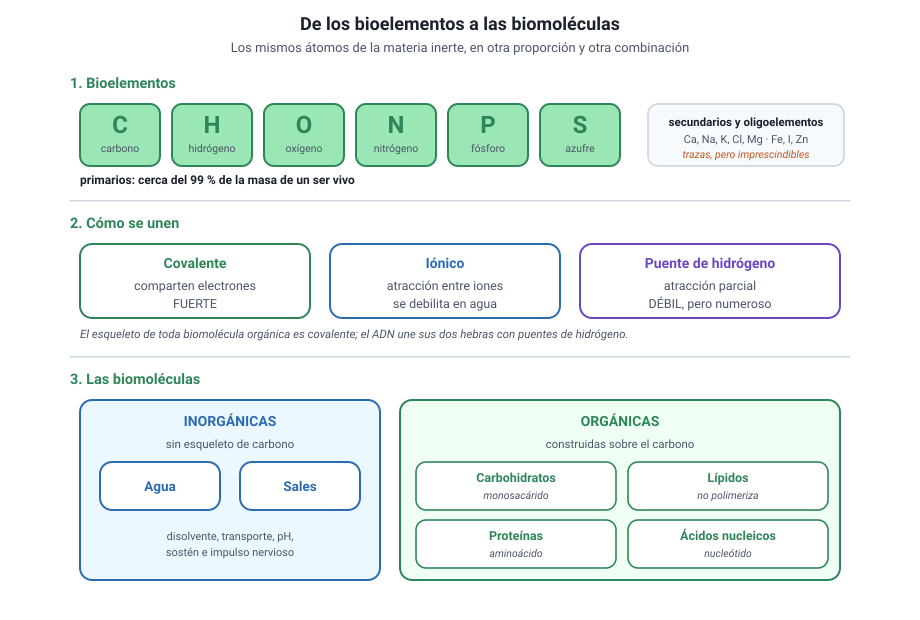
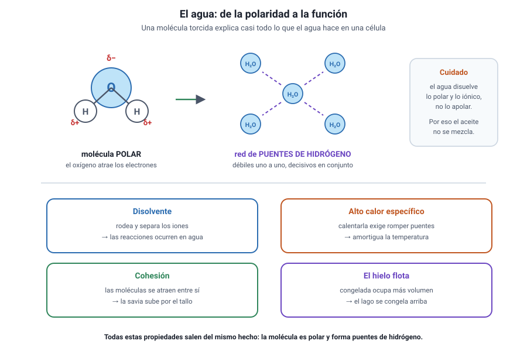
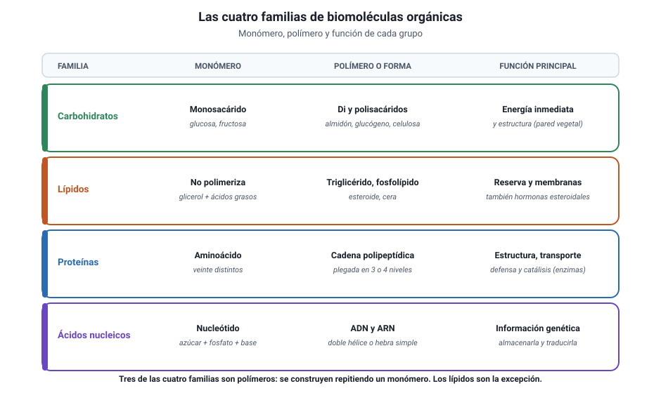
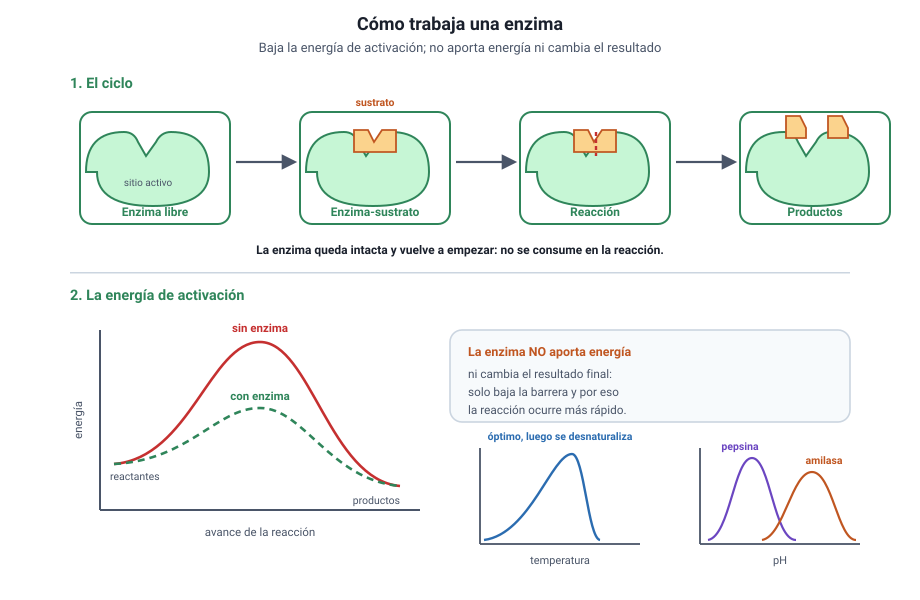

Capítulo 3: Química de la vida
Área temática: Apoyo (fuera del temario 2027)
Un ser vivo está hecho de los mismos átomos que una roca o el aire. No hay ningún elemento exclusivo de la materia viva. Lo que cambia es qué átomos predominan, cómo se combinan y qué moléculas resultan de esa combinación. Este capítulo trata de eso: de las piezas químicas con las que se construyen las células y de por qué esas piezas, y no otras, sirven para estar vivo.
Aquí vas a aprender cuáles son los bioelementos y qué tipo de enlaces forman; por qué las propiedades del agua explican buena parte de lo que ocurre dentro de una célula; qué son los carbohidratos, los lípidos, las proteínas y los ácidos nucleicos, cómo se construyen a partir de unidades más pequeñas y qué función cumple cada grupo; cómo trabajan las enzimas y qué variables las afectan; y qué papel juegan las vitaminas y las sales minerales.
Este capítulo es de apoyo y está fuera del temario DEMRE 2027: la química de la vida no aparece como contenido propio de Biología. Se incluye porque sostiene tres temas que sí están en la prueba —la membrana y el transporte del capítulo 4, el ADN del capítulo 6 y la fotosíntesis del capítulo 10— y porque muchos enunciados dan por sabido este vocabulario. Trátalo como una base, no como materia de estudio prioritaria.
1. Conceptos claveIA:12
Antes de entrar en materia, estos son los términos que se usan en todo el capítulo. Vuelve a esta tabla cada vez que uno de ellos aparezca y no lo tengas claro.
| Concepto | Qué significa |
|---|---|
| Bioelemento | Elemento químico presente en la materia viva |
| Bioelemento primario | C, H, O, N, P y S: cerca del 99 % de la masa de un ser vivo |
| Oligoelemento | Bioelemento presente en cantidades mínimas, pero imprescindible (hierro, yodo, zinc) |
| Enlace covalente | Unión entre átomos que comparten electrones; es fuerte y estable |
| Enlace iónico | Unión por atracción entre iones de carga opuesta; se rompe en agua |
| Puente de hidrógeno | Atracción débil entre un hidrógeno con carga parcial positiva y un átomo electronegativo |
| Molécula polar | Molécula con zonas de carga parcial positiva y negativa, como el agua |
| Hidrofílico | Que se disuelve o interactúa bien con el agua |
| Hidrofóbico | Que no se mezcla con el agua; típicamente, apolar |
| Anfipático | Que tiene una parte hidrofílica y otra hidrofóbica, como un fosfolípido |
| Biomolécula inorgánica | Agua y sales minerales |
| Biomolécula orgánica | Molécula basada en carbono: carbohidrato, lípido, proteína o ácido nucleico |
| Monómero | Unidad pequeña que se repite para formar una molécula mayor |
| Polímero | Molécula grande formada por muchos monómeros unidos |
| Monosacárido | Monómero de los carbohidratos (glucosa, fructosa, galactosa) |
| Disacárido | Dos monosacáridos unidos (sacarosa, lactosa, maltosa) |
| Polisacárido | Muchos monosacáridos unidos (almidón, glucógeno, celulosa, quitina) |
| Ácido graso | Cadena larga de carbono e hidrógeno con un extremo ácido |
| Triglicérido | Glicerol unido a tres ácidos grasos; es la grasa de reserva |
| Fosfolípido | Lípido anfipático que forma las membranas celulares |
| Aminoácido | Monómero de las proteínas; hay veinte distintos |
| Enlace peptídico | Unión covalente entre dos aminoácidos |
| Estructura de una proteína | Los cuatro niveles de plegamiento: primaria, secundaria, terciaria y cuaternaria |
| Desnaturalización | Pérdida de la forma tridimensional de una proteína, y con ella de su función |
| Enzima | Proteína que acelera una reacción química sin consumirse |
| Sustrato | Molécula sobre la que actúa una enzima |
| Sitio activo | Región de la enzima donde se une el sustrato |
| Energía de activación | Energía mínima necesaria para que una reacción ocurra |
| Nucleótido | Monómero de los ácidos nucleicos: azúcar, fosfato y base nitrogenada |
| ADN y ARN | Los dos ácidos nucleicos: almacenan y transmiten la información genética |
| Vitamina | Compuesto orgánico necesario en cantidades muy pequeñas que el cuerpo no fabrica |
2. Bioelementos y enlacesIA:34

a. Los mismos átomos, otra proporciónIA:567
En la materia viva no hay ningún elemento exclusivo. Lo que la distingue es la proporción: seis elementos, el carbono, el hidrógeno, el oxígeno, el nitrógeno, el fósforo y el azufre, reúnen cerca del 99 % de la masa de cualquier organismo. Se llaman bioelementos primarios.
Detrás vienen los bioelementos secundarios, como el calcio, el sodio, el potasio, el cloro y el magnesio, presentes en cantidades menores pero constantes. Y más atrás los oligoelementos, que aparecen en trazas y que, sin embargo, son imprescindibles: sin hierro no hay hemoglobina, sin yodo no hay hormonas tiroideas, sin zinc no funcionan decenas de enzimas.
«Poco» no significa «prescindible». Un oligoelemento puede representar una millonésima de la masa corporal y aun así ser mortal su carencia. En la PAES esto suele aparecer como una trampa: una alternativa afirma que un elemento presente en trazas es poco importante. Es falsa.
b. Por qué el carbonoIA:8910
El carbono ocupa el centro de la química de la vida por tres razones:
- Forma cuatro enlaces covalentes, lo que permite construir estructuras ramificadas y tridimensionales.
- Se une a sí mismo formando cadenas largas, anillos y esqueletos estables.
- Se combina con los otros cinco primarios, de modo que sobre el mismo esqueleto pueden colgarse grupos químicos muy distintos.
Esa versatilidad explica que existan millones de moléculas orgánicas distintas construidas prácticamente con los mismos ingredientes.
c. Los tres tipos de unión que importanIA:111213
| Unión | Cómo funciona | Fuerza | Dónde aparece |
|---|---|---|---|
| Enlace covalente | Dos átomos comparten electrones | Fuerte | El esqueleto de toda biomolécula orgánica |
| Enlace iónico | Atracción entre iones de carga opuesta | Intermedia; se debilita en agua | Sales minerales, como el cloruro de sodio |
| Puente de hidrógeno | Atracción entre un hidrógeno parcialmente positivo y un átomo electronegativo | Débil, pero muy numeroso | Entre moléculas de agua; entre las dos hebras del ADN; en el plegamiento de las proteínas |
Cómo se pregunta. El puente de hidrógeno es débil individualmente, y esa debilidad es justamente lo que lo hace útil: permite que las dos hebras del ADN se separen para copiarse y vuelvan a unirse. Una alternativa que diga que el ADN se mantiene unido por enlaces covalentes entre las hebras es falsa: los covalentes están dentro de cada hebra.
d. Dos grandes familias de biomoléculasIA:141516
- Inorgánicas: agua y sales minerales. No están construidas sobre esqueletos de carbono.
- Orgánicas: carbohidratos, lípidos, proteínas y ácidos nucleicos. Todas se basan en el carbono.
Tres de las cuatro familias orgánicas son polímeros: se construyen uniendo muchas unidades pequeñas, los monómeros. Los lípidos son la excepción, porque no se forman por repetición de una unidad.
3. El agua y las sales mineralesIA:1718

a. Una molécula torcida y polarIA:192021
El agua es una molécula pequeña, pero no lineal: los dos hidrógenos forman un ángulo con el oxígeno. Como el oxígeno atrae los electrones con más fuerza, queda con carga parcial negativa y los hidrógenos con carga parcial positiva. La molécula es, por lo tanto, polar.
De ahí nace todo lo demás: cada molécula de agua puede formar puentes de hidrógeno con varias vecinas, y el conjunto se comporta como una red.
b. Las cuatro propiedades que hay que saberIA:222324
| Propiedad | De dónde viene | Para qué sirve en un ser vivo |
|---|---|---|
| Disolvente de sustancias polares e iónicas | La polaridad rodea a los iones y los separa | Casi todas las reacciones celulares ocurren en solución acuosa |
| Alto calor específico | Calentar el agua exige romper muchos puentes de hidrógeno | Amortigua los cambios de temperatura del organismo y del clima |
| Cohesión y tensión superficial | Las moléculas se atraen entre sí | Permite que la savia suba por los vasos de una planta |
| El hielo flota | Al congelarse, la red de puentes ocupa más volumen | Un lago se congela en la superficie y la vida continúa debajo |
El agua no disuelve todo. Se la llama «disolvente universal» por costumbre, pero disuelve bien lo polar y lo iónico, y mal lo apolar. Los aceites no se mezclan con el agua justamente por eso, y esa incompatibilidad es la que mantiene ordenada la membrana celular.
c. Las funciones del agua en la célulaIA:252627
- Disolvente: el medio donde ocurren las reacciones.
- Transporte: lleva nutrientes y desechos dentro del organismo.
- Termorregulación: al evaporarse absorbe mucho calor, y por eso el sudor enfría.
- Estructural: da turgencia a las células vegetales y volumen a los tejidos.
- Reactivo: participa directamente en reacciones, como la hidrólisis y la fotosíntesis.
d. Las sales mineralesIA:282930
Las sales pueden estar precipitadas, dando estructura, o disueltas en forma de iones, cumpliendo funciones dinámicas.
| Forma | Ejemplo | Función |
|---|---|---|
| Precipitada | Fosfato de calcio en huesos y dientes | Sostén y protección |
| Precipitada | Carbonato de calcio en conchas y caparazones | Protección |
| Disuelta | Sodio y potasio | Impulso nervioso y contracción muscular |
| Disuelta | Calcio | Contracción muscular, coagulación, señalización |
| Disuelta | Bicarbonato | Amortigua los cambios de pH de la sangre |
Cómo se pregunta. Un enunciado describe a una persona que pierde mucho sudor y solo repone agua pura. La respuesta esperada es que pierde también iones, y que su reposición importa tanto como la del agua. Es la lógica de las bebidas de rehidratación.
4. CarbohidratosIA:3132

a. Qué sonIA:333435
Los carbohidratos, también llamados glúcidos o azúcares, están formados por carbono, hidrógeno y oxígeno, con el hidrógeno y el oxígeno aproximadamente en la proporción del agua. Son la fuente de energía más accesible de la célula y, en algunos casos, también material de construcción.
b. Los tres nivelesIA:363738
| Nivel | Qué es | Ejemplos | Función |
|---|---|---|---|
| Monosacárido | Un solo azúcar; el monómero | Glucosa, fructosa, galactosa, ribosa | Energía inmediata; la ribosa y la desoxirribosa forman parte de los ácidos nucleicos |
| Disacárido | Dos monosacáridos unidos | Sacarosa, lactosa, maltosa | Transporte y reserva a corto plazo |
| Polisacárido | Muchos monosacáridos unidos | Almidón, glucógeno, celulosa, quitina | Reserva de energía o estructura |
La glucosa es la moneda corriente. Es el azúcar que la respiración celular degrada para obtener energía y el que la fotosíntesis produce. Casi todos los demás carbohidratos se convierten en glucosa o derivan de ella.
c. Reserva y estructura: el mismo ladrillo, otro resultadoIA:394041
El almidón, el glucógeno y la celulosa están hechos del mismo monómero, la glucosa. Lo que cambia es el tipo de unión entre las unidades y el grado de ramificación, y ese detalle cambia por completo la función.
| Polisacárido | Dónde está | Función | Rasgo |
|---|---|---|---|
| Almidón | Plantas | Reserva de energía | Cadenas con ramificaciones moderadas |
| Glucógeno | Animales, en hígado y músculo | Reserva de energía | Muy ramificado: se moviliza rápido |
| Celulosa | Pared de las células vegetales | Estructura | Cadenas rectas y paralelas, muy resistentes |
| Quitina | Exoesqueleto de artrópodos y pared de hongos | Estructura | Similar a la celulosa, con nitrógeno |
Cómo se pregunta. «Si el almidón y la celulosa están hechos de glucosa, ¿por qué no podemos digerir la celulosa?» Porque el tipo de enlace entre las glucosas es distinto y las enzimas humanas no lo reconocen. Es el mejor ejemplo de que la estructura determina la función incluso con los mismos ladrillos.
d. Cómo se unen y cómo se separanIA:424344
- Síntesis por deshidratación: al unir dos monómeros se libera una molécula de agua.
- Hidrólisis: al romper el enlace se consume una molécula de agua.
Estas dos reacciones inversas valen también para las proteínas y los ácidos nucleicos: son el mecanismo general con que la célula construye y desarma sus polímeros.
5. LípidosIA:4546
a. El grupo definido por lo que no haceIA:474849
Los lípidos no comparten una estructura común: se agrupan por una propiedad física, la de ser insolubles en agua y solubles en disolventes apolares. Por eso son la única familia orgánica que no es un polímero de un monómero único.
b. Los tipos que conviene distinguirIA:505152
| Tipo | Estructura | Función |
|---|---|---|
| Triglicérido | Glicerol unido a tres ácidos grasos | Reserva de energía a largo plazo, aislamiento térmico y protección mecánica |
| Fosfolípido | Glicerol con dos ácidos grasos y un grupo fosfato | Forma la bicapa de todas las membranas celulares |
| Esteroide | Cuatro anillos de carbono | Colesterol en la membrana animal; hormonas sexuales y corticoides |
| Cera | Ácido graso unido a un alcohol de cadena larga | Impermeabiliza hojas, plumas y piel |
c. Saturados e insaturadosIA:535455
Un ácido graso saturado no tiene dobles enlaces entre sus carbonos: la cadena es recta y las moléculas se empaquetan bien, de modo que el lípido es sólido a temperatura ambiente. Uno insaturado tiene uno o más dobles enlaces que doblan la cadena, impiden el empaquetamiento y lo mantienen líquido.
| Saturado | Insaturado | |
|---|---|---|
| Dobles enlaces | No | Sí |
| Forma de la cadena | Recta | Con codos |
| Estado a 20 °C | Sólido | Líquido |
| Ejemplos | Manteca, grasa animal | Aceite de oliva, aceite de pescado |
Por qué esto importa para la membrana. La proporción de ácidos grasos insaturados determina la fluidez de la membrana. Los organismos que viven en ambientes fríos tienen más insaturados, porque de lo contrario su membrana se solidificaría. Es un ejemplo clásico de relación entre estructura química y adaptación.
d. El fosfolípido y el origen de la membranaIA:565758
Un fosfolípido es anfipático: la «cabeza» con el grupo fosfato es hidrofílica y las dos «colas» de ácidos grasos son hidrofóbicas. Puesto en agua, se organiza solo: las cabezas se orientan hacia el agua y las colas se esconden entre sí.
El resultado espontáneo es una bicapa, la estructura de todas las membranas biológicas. Nadie la ensambla: se forma porque es la disposición más estable. Este punto se desarrolla en el capítulo 4.
Cómo se pregunta. Ante una molécula dibujada con una cabeza redonda y dos colas, la respuesta casi siempre es «fosfolípido» y «forma membranas». Y si el enunciado pregunta por qué se ordena así, la razón es que las colas son hidrofóbicas y evitan el contacto con el agua.
6. Proteínas y enzimasIA:5960

a. Veinte letras, un número enorme de palabrasIA:616263
Las proteínas son polímeros de aminoácidos, unidos por enlaces peptídicos. Existen veinte aminoácidos distintos, y con ellos se construyen todas las proteínas de todos los seres vivos. Una cadena de cien aminoácidos admite una cantidad de combinaciones astronómica: de ahí la diversidad funcional del grupo.
Cada aminoácido tiene la misma parte central y un grupo lateral propio, que puede ser polar, apolar o con carga. Ese grupo lateral es el que decide cómo se plegará la cadena.
b. Los cuatro niveles de estructuraIA:646566
| Nivel | Qué es | De qué depende |
|---|---|---|
| Primaria | La secuencia de aminoácidos | Del gen que la codifica |
| Secundaria | Hélices y láminas locales | De puentes de hidrógeno del esqueleto |
| Terciaria | La forma tridimensional completa de la cadena | De las interacciones entre grupos laterales |
| Cuaternaria | La unión de dos o más cadenas | De las interacciones entre subunidades |
La forma es la función. Una proteína funciona por su forma tridimensional, no por su composición. Si esa forma se pierde —por calor, por pH extremo o por ciertas sustancias— la proteína se desnaturaliza y deja de servir, aunque su secuencia siga intacta. Por eso un huevo cocido no vuelve a ser crudo.
c. Qué hacen las proteínasIA:676869
| Función | Ejemplo |
|---|---|
| Estructural | Colágeno en la piel, queratina en el pelo |
| Transporte | Hemoglobina, que lleva oxígeno en la sangre |
| Defensa | Anticuerpos |
| Movimiento | Actina y miosina en el músculo |
| Regulación | Insulina y otras hormonas proteicas |
| Catálisis | Enzimas |
d. Las enzimasIA:707172
Una enzima es una proteína que acelera una reacción química sin consumirse. Lo hace disminuyendo la energía de activación, es decir, el empujón mínimo que la reacción necesita para ocurrir.
- El sustrato se une al sitio activo de la enzima.
- La unión es específica: la forma del sitio activo solo acepta ciertos sustratos.
- La reacción ocurre y los productos se liberan.
- La enzima queda libre para repetir el ciclo.
Un dato que decide preguntas. Una enzima no cambia el resultado final de una reacción, ni la vuelve posible si no lo era: solo la hace más rápida. Si un enunciado afirma que la enzima «aporta la energía necesaria» o que «desplaza el equilibrio», está equivocado. Lo que hace es bajar la barrera.
e. Las variables que afectan a una enzimaIA:737475
- Temperatura: la actividad sube hasta un óptimo y después cae de golpe, porque la enzima se desnaturaliza. La curva es asimétrica: sube gradualmente y baja bruscamente.
- pH: cada enzima tiene un pH óptimo. La pepsina del estómago trabaja cerca de pH 2; la amilasa salival, cerca de pH 7.
- Concentración de sustrato: la velocidad aumenta hasta que todas las enzimas están ocupadas y se alcanza una meseta de saturación.
- Inhibidores: sustancias que se unen a la enzima y reducen su actividad.
Cómo se pregunta. Un gráfico muestra actividad enzimática contra temperatura, con un máximo y una caída abrupta. Lo que se pide es interpretar la caída: no es que la enzima «se canse» ni que «se acabe el sustrato», sino que a temperatura alta pierde su forma tridimensional. La asimetría de la curva es la pista.
7. Ácidos nucleicosIA:7677
a. El monómero: el nucleótidoIA:787980
Un nucleótido tiene tres partes: un azúcar de cinco carbonos, un grupo fosfato y una base nitrogenada. Los nucleótidos se unen en cadena a través del azúcar y el fosfato, que forman el esqueleto, mientras las bases quedan hacia el interior.
b. ADN y ARNIA:818283
| ADN | ARN | |
|---|---|---|
| Azúcar | Desoxirribosa | Ribosa |
| Bases | A, T, C, G | A, U, C, G |
| Hebras | Dos, en doble hélice | Una, generalmente |
| Ubicación | Núcleo, mitocondrias y cloroplastos | Núcleo y citoplasma |
| Función | Almacena la información genética | La transporta y la traduce a proteínas |
Las dos hebras del ADN se mantienen unidas por puentes de hidrógeno entre bases complementarias: A con T y C con G. Esa complementariedad es lo que permite copiar la molécula, porque cada hebra contiene la información para reconstruir la otra.
Débil a propósito. Los puentes de hidrógeno que unen las dos hebras son débiles, y eso es una ventaja: permiten separarlas para copiar o leer el ADN y volverlas a unir sin romper nada. Dentro de cada hebra, en cambio, las uniones son covalentes y muy estables. Confundir ambas cosas es el error más frecuente en este tema.
c. El ATP, el nucleótido que no es informaciónIA:848586
No todos los nucleótidos forman ácidos nucleicos. El ATP es un nucleótido suelto que funciona como la moneda energética de la célula: al romper uno de sus enlaces fosfato libera energía utilizable de inmediato. Aparece en la fotosíntesis, en la respiración celular y en casi todo proceso que consuma energía.
Cómo se pregunta. Si un enunciado describe una molécula con azúcar, fosfato y base nitrogenada, la respuesta es «nucleótido». Si además menciona tres fosfatos y liberación de energía, es ATP, no un componente del ADN. El detalle del número de fosfatos es la clave.
d. Por dónde continúaIA:878889
El ADN, su compactación, su duplicación y su relación con la división celular se desarrollan en el capítulo 6, y su manipulación en el laboratorio, en el capítulo 7. Aquí basta con la química: monómero, bases, complementariedad y tipo de enlace.
8. Vitaminas y lo que conviene llevarIA:9091
a. Las vitaminasIA:929394
Una vitamina es un compuesto orgánico que el organismo necesita en cantidades muy pequeñas y que, en general, no puede fabricar: debe obtenerlo de la dieta. No aportan energía ni sirven de material de construcción; su papel es auxiliar el trabajo de las enzimas.
| Grupo | Ejemplos | Cómo se comportan |
|---|---|---|
| Hidrosolubles | Complejo B, vitamina C | Se disuelven en agua, no se acumulan y su exceso se elimina por la orina |
| Liposolubles | A, D, E, K | Se disuelven en grasa, se almacenan en el hígado y el tejido adiposo, y su exceso puede ser tóxico |
Más no siempre es mejor. Como las vitaminas liposolubles se acumulan, una sobredosis sostenida puede causar daño. Las hidrosolubles, en cambio, se eliminan con facilidad, y por eso su carencia aparece antes cuando falta en la dieta.
b. Un cuadro para repasar el capítulo enteroIA:959697
| Familia | Monómero | Polímero o forma | Elementos | Función principal |
|---|---|---|---|---|
| Carbohidratos | Monosacárido | Di y polisacáridos | C, H, O | Energía inmediata y estructura |
| Lípidos | No es un polímero | Triglicérido, fosfolípido, esteroide | C, H, O y a veces P | Reserva, membranas y hormonas |
| Proteínas | Aminoácido | Cadena polipeptídica | C, H, O, N y a veces S | Estructura, transporte, defensa y catálisis |
| Ácidos nucleicos | Nucleótido | ADN y ARN | C, H, O, N, P | Información genética |
c. Cómo conecta este capítulo con el resto del libroIA:9899100
- El fosfolípido explica la membrana y el transporte del capítulo 4.
- La enzima explica la RuBisCO y las variables de la fotosíntesis del capítulo 10, y también los puntos de control del capítulo 6.
- El nucleótido y la complementariedad de bases explican el ADN del capítulo 6 y las técnicas del capítulo 7.
- La proteína y su plegamiento explican por qué una mutación puede cambiar una función, tema del capítulo 6.
Cómo se pregunta. La química de la vida casi nunca se pregunta sola en la PAES 2027: aparece dentro de preguntas sobre membrana, fotosíntesis o ADN. Por eso conviene tener claros cuatro pares: monómero y polímero de cada familia, hidrofílico e hidrofóbico, covalente y puente de hidrógeno, y forma y función de una proteína.
Ejemplos PAES resueltos
Cuatro ítems al estilo de la prueba, resueltos paso a paso. Cúbrelos primero y después compara.
Ejemplo 1 (Procesar y analizar la evidencia). Se mide la actividad de una enzima digestiva a distintas temperaturas, manteniendo constantes el pH y la concentración de sustrato:
| Temperatura (°C) | Actividad (unidades/min) |
|---|---|
| 10 | 12 |
| 20 | 28 |
| 30 | 52 |
| 37 | 74 |
| 45 | 30 |
| 55 | 2 |
¿Cuál de las siguientes afirmaciones explica mejor lo que ocurre entre 37 °C y 55 °C?
A) El sustrato se agota antes de completar la medición. B) La enzima se consume en cada reacción y va quedando menos. C) La enzima pierde su forma tridimensional y deja de unir el sustrato. D) La reacción se vuelve más lenta porque baja la energía cinética.
Desarrollo. La clave está en la forma de la curva, no en un solo dato.
- De 10 a 37 °C la actividad sube de manera gradual: más temperatura significa más choques entre enzima y sustrato.
- Después de 37 °C cae de golpe, de 74 a 2 en dieciocho grados. Esa asimetría es la firma de la desnaturalización: la enzima pierde su estructura terciaria y su sitio activo deja de reconocer al sustrato.
- D invierte la física: al subir la temperatura la energía cinética aumenta, no disminuye.
- A y B describen situaciones que, si ocurrieran, afectarían a todas las temperaturas por igual y no producirían un máximo. Además, una enzima no se consume: por eso puede repetir el ciclo.
Clave: C.
Lo que evalúa. Leer una curva asimétrica e interpretarla con el concepto correcto. Si la caída fuera simétrica a la subida, la explicación sería otra.
Ejemplo 2 (Evaluar). Un estudiante afirma: «El almidón y la celulosa están hechos de glucosa, así que deberían servir igual como alimento para una persona».
¿Cuál es la mejor evaluación de esa afirmación?
A) Es correcta, porque los polímeros con el mismo monómero cumplen la misma función. B) Es incorrecta, porque la celulosa no contiene glucosa sino otro monosacárido. C) Es incorrecta, porque el tipo de enlace entre las glucosas difiere y las enzimas humanas no lo reconocen. D) Es correcta, porque el intestino humano digiere ambos polisacáridos por igual.
Desarrollo. Hay que separar la composición de la estructura.
- La premisa es verdadera: ambos polisacáridos están hechos de glucosa. Por eso B es falsa.
- La conclusión no se sigue. El enlace que une las glucosas del almidón y el que une las de la celulosa son distintos, y las enzimas digestivas humanas solo reconocen el primero. Por eso la celulosa atraviesa el intestino sin ser degradada: es la fibra dietética.
- Eso descarta D, que afirma un hecho falso, y A, que enuncia una regla general equivocada: mismo monómero no implica misma función.
Clave: C.
Lo que evalúa. El principio que recorre todo el capítulo: la estructura determina la función, incluso cuando los ladrillos son idénticos.
Ejemplo 3 (Planificar y conducir una investigación). Un grupo quiere determinar el pH óptimo de una enzima extraída del estómago. Dispone de la enzima, de su sustrato, de soluciones amortiguadoras de pH 1 a 9 y de un termostato.
¿Cuál de los siguientes diseños responde mejor la pregunta?
A) Medir la actividad a pH 2 y a 20 °C, y luego a pH 7 y a 40 °C. B) Medir la actividad a pH 2, 4, 6 y 8, manteniendo la temperatura constante. C) Medir la actividad a pH 2 durante tiempos crecientes de incubación. D) Medir la actividad a pH 2 usando cuatro concentraciones distintas de sustrato.
Desarrollo. La pregunta pide un óptimo, y un óptimo solo aparece si se varía la variable de interés.
- B varía el pH en cuatro valores y mantiene constante la temperatura, de modo que cualquier diferencia se puede atribuir al pH. Es el único diseño que puede mostrar un máximo.
- A cambia dos variables a la vez, pH y temperatura: si hay diferencia, no se sabría cuál la causó.
- C y D dejan el pH fijo en un solo valor y varían otra cosa. Son experimentos válidos, pero responden otras preguntas: la del tiempo de incubación y la de la saturación por sustrato.
Clave: B.
Lo que evalúa. Reconocer que para encontrar un óptimo hay que barrer la variable independiente y mantener constante todo lo demás.
Ejemplo 4 (Observar y plantear preguntas). Se observa que un organismo que vive en aguas antárticas tiene, en sus membranas, una proporción de ácidos grasos insaturados mucho mayor que la de una especie emparentada de aguas templadas.
¿Cuál es la pregunta que mejor orienta una investigación a partir de esa observación?
A) ¿Cuántos ácidos grasos distintos existen en la naturaleza? B) ¿Cómo afecta la proporción de ácidos grasos insaturados a la fluidez de la membrana a baja temperatura? C) ¿En qué año se describió por primera vez esta especie antártica? D) ¿Qué color tienen las membranas de ambas especies al microscopio?
Desarrollo. La observación relaciona dos cosas: el ambiente frío y la composición de la membrana.
- Una buena pregunta de investigación debe conectar esas dos variables mediante un mecanismo comprobable. B lo hace: propone medir fluidez a distintas temperaturas y con distintas proporciones de insaturados.
- A pide un recuento general que no explica la observación.
- C es un dato histórico.
- D introduce una variable irrelevante, porque el color no informa sobre la fluidez.
Clave: B.
Lo que evalúa. Formular una pregunta relacional a partir de una observación comparativa. El contenido de fondo es que los dobles enlaces doblan la cadena, impiden el empaquetamiento y mantienen la membrana fluida en frío.
Evaluación formativa
Veinte preguntas sobre bioelementos, agua y sales, carbohidratos, lípidos, proteínas, enzimas, ácidos nucleicos y vitaminas. Responde todas y luego revisa las explicaciones.
1. ¿Cuáles son los seis bioelementos primarios?
- Carbono, hidrógeno, oxígeno, calcio, sodio y potasio.
- Carbono, hidrógeno, oxígeno, nitrógeno, fósforo y azufre.
- Carbono, hierro, yodo, zinc, magnesio y cloro.
- Hidrógeno, oxígeno, nitrógeno, calcio, hierro y sodio.
Respuesta correcta: B
Esos seis reúnen cerca del 99 % de la masa de cualquier ser vivo. El calcio, el sodio, el potasio, el cloro y el magnesio son secundarios, y el hierro, el yodo y el zinc son oligoelementos: presentes en trazas, pero igualmente imprescindibles.
2. ¿Por qué el carbono ocupa un lugar central en la química de la vida?
- Porque es el elemento más abundante de la corteza terrestre.
- Porque forma enlaces iónicos muy estables con el oxígeno.
- Porque es el único elemento capaz de formar moléculas grandes.
- Porque forma cuatro enlaces covalentes y se une a sí mismo en cadenas y anillos.
Respuesta correcta: D
Esa doble capacidad permite construir esqueletos ramificados y tridimensionales sobre los que se cuelgan grupos químicos muy distintos. El silicio también forma cuatro enlaces, así que el carbono no es el único candidato posible, pero sus enlaces son mucho más estables en agua.
3. Un oligoelemento representa menos de una milésima de la masa de un organismo. ¿Qué se concluye de ese dato?
- Nada sobre su importancia: puede ser imprescindible pese a su escasez.
- Que puede eliminarse de la dieta sin consecuencias.
- Que no participa en ninguna reacción química celular.
- Que se trata de un contaminante y no de un bioelemento.
Respuesta correcta: A
Sin hierro no hay hemoglobina, sin yodo no hay hormonas tiroideas y sin zinc no funcionan decenas de enzimas. La cantidad no mide la importancia: confundir ambas cosas es uno de los errores más explotados en este tema.
4. ¿Qué tipo de unión mantiene juntas a las dos hebras del ADN?
- Enlaces covalentes entre las bases de hebras opuestas.
- Enlaces iónicos entre los grupos fosfato de cada hebra.
- Puentes de hidrógeno entre bases complementarias.
- Fuerzas de atracción entre los azúcares de ambas hebras.
Respuesta correcta: C
Los puentes de hidrógeno son débiles uno a uno, y esa debilidad es una ventaja: permite separar las hebras para copiarlas y volverlas a unir. Dentro de cada hebra, en cambio, las uniones sí son covalentes, a través del azúcar y el fosfato.
5. ¿De qué propiedad de la molécula de agua derivan casi todas sus funciones biológicas?
- De su pequeño tamaño molecular.
- De su polaridad, que permite formar puentes de hidrógeno.
- De su capacidad de formar enlaces iónicos con otras moléculas de agua.
- De su condición de molécula orgánica con esqueleto de carbono.
Respuesta correcta: B
El oxígeno atrae los electrones y deja cargas parciales: la molécula es polar y cada una puede unirse a varias vecinas por puentes de hidrógeno. De esa red salen el poder disolvente, el alto calor específico, la cohesión y el hecho de que el hielo flote. El agua, además, es inorgánica.
6. ¿Por qué el aceite no se mezcla con el agua?
- Porque el aceite es más denso que el agua.
- Porque el aceite forma demasiados puentes de hidrógeno.
- Porque el agua solo disuelve sustancias sólidas.
- Porque las moléculas del aceite son apolares y el agua disuelve lo polar y lo iónico.
Respuesta correcta: D
Llamar al agua «disolvente universal» es una costumbre engañosa: disuelve bien lo polar y lo iónico, y mal lo apolar. Esa incompatibilidad es justamente la que mantiene ordenada la bicapa de las membranas celulares.
7. Una persona pierde mucho sudor durante una carrera y repone solo agua pura. ¿Qué problema puede aparecer?
- Un desequilibrio de sales, porque con el sudor también se pierden iones.
- Un exceso de glucosa en la sangre por falta de azúcar en el agua.
- Una deshidratación, porque el agua pura no se absorbe en el intestino.
- Una acumulación de proteínas en el plasma sanguíneo.
Respuesta correcta: A
El sudor arrastra sodio, potasio y cloro, y esos iones intervienen en el impulso nervioso y la contracción muscular. Por eso las bebidas de rehidratación contienen sales además de agua. El agua pura sí se absorbe con normalidad.
8. ¿Cuál es el monómero de los carbohidratos?
- El aminoácido.
- El nucleótido.
- El monosacárido.
- El ácido graso.
Respuesta correcta: C
La glucosa, la fructosa y la galactosa son monosacáridos. El aminoácido es el monómero de las proteínas y el nucleótido el de los ácidos nucleicos; el ácido graso no es un monómero, porque los lípidos no son polímeros.
9. El almidón, el glucógeno y la celulosa están formados por glucosa, pero cumplen funciones distintas. ¿Qué lo explica?
- Que cada uno contiene una glucosa de composición química diferente.
- Que el tipo de enlace y el grado de ramificación son distintos en cada uno.
- Que solo la celulosa contiene átomos de carbono en su estructura.
- Que el almidón y el glucógeno son proteínas y la celulosa, un lípido.
Respuesta correcta: B
La glucosa es la misma en los tres. Lo que cambia es cómo se unen las unidades: cadenas rectas y paralelas dan resistencia estructural, y cadenas ramificadas permiten movilizar rápido la reserva. Es el mejor ejemplo de que la estructura determina la función.
10. ¿Por qué el ser humano no puede digerir la celulosa?
- Porque la celulosa no contiene energía aprovechable.
- Porque la celulosa no se disuelve en el agua del intestino.
- Porque el estómago humano tiene un pH demasiado ácido.
- Porque las enzimas digestivas humanas no reconocen su tipo de enlace.
Respuesta correcta: D
Las enzimas son específicas: su sitio activo solo acepta ciertos enlaces. La celulosa sí contiene energía, y de hecho los rumiantes la aprovechan gracias a microorganismos que sí poseen la enzima adecuada. En el ser humano atraviesa el intestino como fibra.
11. ¿Qué característica define al grupo de los lípidos?
- Ser insolubles en agua y solubles en disolventes apolares.
- Estar formados por la repetición de un mismo monómero.
- Contener siempre nitrógeno y fósforo en su estructura.
- Poseer una secuencia codificada directamente por un gen.
Respuesta correcta: A
Los lípidos se agrupan por una propiedad física, no por una estructura común, y por eso son la única familia orgánica que no es un polímero. El nitrógeno y el fósforo aparecen solo en algunos de ellos, y la secuencia codificada por un gen es propia de las proteínas.
12. ¿Por qué un aceite es líquido a temperatura ambiente y una grasa animal, sólida?
- Porque el aceite contiene más agua en su composición.
- Porque la grasa animal tiene cadenas de carbono mucho más cortas.
- Porque los dobles enlaces de los ácidos grasos insaturados doblan la cadena e impiden el empaquetamiento.
- Porque el aceite está formado por proteínas y la grasa, por lípidos.
Respuesta correcta: C
Una cadena saturada es recta y las moléculas se apilan bien, de modo que el conjunto es sólido. Un doble enlace introduce un codo que impide ese apilamiento y mantiene el lípido líquido. La misma lógica explica la fluidez de las membranas.
13. Un fosfolípido puesto en agua forma espontáneamente una bicapa. ¿Por qué?
- Porque una proteína de la célula lo ensambla en esa posición.
- Porque es anfipático: las cabezas se orientan al agua y las colas se esconden entre sí.
- Porque el grupo fosfato repele a las cabezas de los otros fosfolípidos.
- Porque las colas de ácido graso son fuertemente hidrofílicas.
Respuesta correcta: B
Nadie ensambla la bicapa: se forma sola porque es la disposición más estable en un medio acuoso. Las colas son hidrofóbicas, no hidrofílicas, y las cabezas con fosfato sí interactúan bien con el agua.
14. ¿Cuántos aminoácidos distintos forman las proteínas de todos los seres vivos?
- Cuatro.
- Ocho.
- Doce.
- Veinte.
Respuesta correcta: D
Con esas veinte unidades se construyen todas las proteínas conocidas. Cuatro es el número de bases nitrogenadas del ADN, y la confusión entre ambos números es frecuente. Una cadena de cien aminoácidos admite una cantidad astronómica de combinaciones.
15. Un huevo cocido no vuelve a ser crudo al enfriarse. ¿Qué concepto explica ese hecho?
- La desnaturalización: el calor destruyó la forma tridimensional de las proteínas.
- La hidrólisis: el calor separó los aminoácidos rompiendo los enlaces peptídicos.
- La polimerización: el calor unió las proteínas en un polímero nuevo.
- La catálisis: una enzima del huevo transformó las proteínas.
Respuesta correcta: A
La secuencia de aminoácidos, es decir la estructura primaria, se mantiene intacta; lo que se pierde es el plegamiento tridimensional, y con él la función. Esa pérdida es irreversible en la mayoría de los casos, y es la razón por la que la fiebre alta resulta peligrosa.
16. ¿Qué hace exactamente una enzima en una reacción química?
- Aporta la energía que la reacción necesita para ocurrir.
- Desplaza el equilibrio para obtener más producto final.
- Disminuye la energía de activación, de modo que la reacción ocurre más rápido.
- Se consume junto con el sustrato al formarse el producto.
Respuesta correcta: C
La enzima baja la barrera que la reacción debe superar, sin aportar energía ni modificar el resultado final. Y no se consume: al liberar los productos queda libre para repetir el ciclo, y por eso una cantidad pequeña procesa mucho sustrato.
17. Al aumentar la concentración de sustrato, la velocidad de una reacción enzimática sube y luego se estabiliza en una meseta. ¿Cómo se interpreta esa meseta?
- La enzima se desnaturalizó por exceso de sustrato.
- Todas las moléculas de enzima están ocupadas: el sistema está saturado.
- El sustrato dejó de unirse porque cambió su estructura química.
- La reacción se detuvo por completo al alcanzar la meseta.
Respuesta correcta: B
Una vez que todos los sitios activos están ocupados, agregar más sustrato no acelera nada: la enzima ya trabaja a su máxima velocidad. La reacción no se detiene, sigue a tasa constante. Es la misma lógica de la meseta de una curva de fotosíntesis.
18. ¿Qué tres partes componen un nucleótido?
- Un aminoácido, un fosfato y una base nitrogenada.
- Un glicerol, un ácido graso y un grupo fosfato.
- Un monosacárido, un aminoácido y un grupo fosfato.
- Un azúcar de cinco carbonos, un grupo fosfato y una base nitrogenada.
Respuesta correcta: D
El azúcar es desoxirribosa en el ADN y ribosa en el ARN. El azúcar y el fosfato forman el esqueleto de la cadena, mientras las bases quedan hacia el interior, donde se aparean con las de la otra hebra.
19. Una molécula está formada por ribosa, tres grupos fosfato y una base nitrogenada, y libera energía al romperse uno de sus enlaces fosfato. ¿De qué molécula se trata?
- Del ATP, la moneda energética de la célula.
- De un nucleótido del ADN listo para incorporarse a la hebra.
- De un aminoácido con grupo lateral fosforilado.
- De un fosfolípido de la membrana plasmática.
Respuesta correcta: A
El detalle decisivo es el número de fosfatos: tres. Los nucleótidos del ADN llevan desoxirribosa, no ribosa, y quedan con un solo fosfato al incorporarse a la cadena. El ATP aparece en la fotosíntesis, en la respiración celular y en casi todo proceso que consuma energía.
20. ¿Por qué un exceso sostenido de vitamina A puede ser tóxico, mientras que un exceso de vitamina C rara vez lo es?
- Porque la vitamina A es una proteína y la vitamina C, un carbohidrato.
- Porque la vitamina C se destruye siempre durante la digestión.
- Porque la vitamina A es liposoluble y se acumula, mientras que la C es hidrosoluble y se elimina por la orina.
- Porque el cuerpo fabrica vitamina C por sí mismo y no necesita ingerirla.
Respuesta correcta: C
Las liposolubles, A, D, E y K, se almacenan en el hígado y el tejido adiposo, de modo que una sobredosis sostenida se acumula. Las hidrosolubles se eliminan con facilidad, y por eso su carencia aparece antes cuando falta en la dieta. El ser humano, además, no fabrica vitamina C.
Fuentes del capítulo
Consultadas el 24 de septiembre de 2026. El texto es de redacción propia y los cuatro diagramas son originales.
Documentos oficiales
- DEMRE (2026). Temario Regular – Pruebas Electivas – Ciencias. Admisión 2027. La química de la vida no aparece como conocimiento del eje Biología. Este capítulo se incluye como apoyo del área 1 (organización y actividad celular, capítulo 4), del área 3 (ADN, capítulo 6) y del área 4 (fotosíntesis, capítulo 10).
- DEMRE (2026). Prueba oficial PAES de Invierno, Ciencias – Biología, Admisión 2027, y su clavijero. Se revisó para confirmar en qué medida el vocabulario bioquímico aparece dentro de preguntas de otros contenidos, sin reproducir ítems.
- Ministerio de Educación de Chile. Bases Curriculares de Ciencias Naturales, unidad sobre biomoléculas y su relación con la nutrición.
Bioelementos y biomoléculas
- Universidad de Sonora. Bioelementos y biomoléculas, apuntes de la Licenciatura en Ciencias Nutricionales: bioelementos primarios, secundarios y oligoelementos; monómeros y polímeros. dagus.unison.mx
- Universidad Autónoma del Estado de Hidalgo. Los bioelementos básicos de la vida, boletín científico de la Escuela Preparatoria N.º 2. uaeh.edu.mx
- OpenStax. Biology 2e, capítulos 2 y 3: «The Chemical Foundation of Life» y «Biological Macromolecules». Enlaces covalentes y puentes de hidrógeno, carbohidratos, lípidos, proteínas y ácidos nucleicos. openstax.org
El agua
- Universidad Autónoma del Estado de Hidalgo. Propiedades del agua, material docente: polaridad, puentes de hidrógeno, calor específico y poder disolvente. repository.uaeh.edu.mx
- Biología y Geología (recurso docente español). Estructura química del agua y Propiedades del agua: cohesión, tensión superficial, densidad del hielo y función termorreguladora. biologia-geologia.com
Proteínas y enzimas
- Khan Academy en español. Proteínas y aminoácidos y Enzimas y energía de activación: los cuatro niveles de estructura, desnaturalización, sitio activo, saturación por sustrato y efecto del pH y la temperatura. es.khanacademy.org
- LibreTexts Biology. Enzymes: curva asimétrica de actividad frente a temperatura e interpretación de la caída por desnaturalización. bio.libretexts.org
Libro de consulta
- Hoefnagels, M. Biology: Concepts and Investigations, 5.ª edición, capítulo 2 (la química de la vida). Consulta de referencia; el texto de este capítulo es de redacción propia.
Preguntas de práctica (IA)
Estas 100 preguntas fueron creadas con inteligencia artificial a partir de los contenidos de esta sección; no son del libro. Los números verdes junto a cada título llevan a sus preguntas, y el botón «↩ Ver tema» de cada pregunta te devuelve a la materia que la explica.
Tema: 1. Conceptos clave
1.↩ Ver tema Un glosario define «anfipático» como la propiedad de una molécula que tiene una parte hidrofílica y otra hidrofóbica. ¿Cuál de las siguientes moléculas corresponde a esa definición? Procesar y analizar la evidencia Organización, estructura y actividad celular
- La glucosa disuelta en el citoplasma celular.
- El fosfolípido de la membrana celular.
- El nucleótido que forma parte de la cadena de ADN.
- El ion sodio que participa del impulso nervioso.
Respuesta correcta: B
Habilidad evaluada. Esta pregunta evalúa la habilidad de procesar y analizar la evidencia: aplicar una definición técnica a casos concretos.
Concepto del libro. Según «Conceptos clave», una molécula anfipática combina una región que interactúa bien con el agua y otra que la rehúye, y el fosfolípido es el caso característico.
Desarrollo. En el fosfolípido la cabeza con grupo fosfato es hidrofílica y las dos colas de ácidos grasos son hidrofóbicas. La glucosa y el nucleótido son moléculas enteramente hidrofílicas, porque se disuelven bien en el agua del citoplasma, y el ion sodio es una partícula con carga que el agua rodea sin dificultad. Ninguno de esos tres combina las dos regiones.
Por qué fallan las otras alternativas.
- A) (sub-alcance) La glucosa es enteramente hidrofílica: carece de región apolar.
- C) (sub-alcance) El nucleótido se disuelve bien en agua en toda su extensión.
- D) (variable equivocada) Un ion con carga no tiene región hidrofóbica alguna.
Qué hay que saber y saber hacer. Hay que reconocer las dos regiones opuestas dentro de una misma molécula. Dato para la PAES: cabeza polar y colas apolares equivale a fosfolípido.
Pregunta creada con IA a partir del contenido de esta sección.
2.↩ Ver tema Para el glosario de un texto escolar hay que definir «enzima» en una frase dirigida a estudiantes de enseñanza media. ¿Cuál es la definición más precisa que podría incluirse en ese glosario? Comunicar Organización, estructura y actividad celular
- Molécula que aporta a una reacción química la energía que esta necesita para ocurrir.
- Sustancia que hace posible una reacción química que de otro modo nunca podría ocurrir.
- Compuesto que desplaza el equilibrio de una reacción para obtener más producto final.
- Proteína que acelera una reacción química sin consumirse.
Respuesta correcta: D
Habilidad evaluada. Esta pregunta evalúa la habilidad de comunicar: escoger la formulación que transmite un concepto sin introducir errores.
Concepto del libro. Según «Conceptos clave», la enzima es una proteína que acelera una reacción disminuyendo su energía de activación, y queda libre al terminar.
Desarrollo. Las otras tres opciones repiten los tres malentendidos más habituales sobre las enzimas: que aportan energía, que vuelven posible lo imposible y que cambian el resultado final. Ninguno es cierto. Lo único que hace una enzima es bajar la barrera que la reacción debe superar, de modo que ocurra mucho más rápido y a la temperatura del cuerpo.
Por qué fallan las otras alternativas.
- A) (atribución cruzada) La enzima no aporta energía: el ATP cumple esa función.
- B) (sobre-alcance) Una enzima acelera reacciones posibles; no habilita lo imposible.
- C) (relación inversa o inexistente) La enzima no modifica el equilibrio ni el resultado final.
Qué hay que saber y saber hacer. Hay que definir la enzima por lo que hace y por lo que no hace. Dato para la PAES: acelera, no aporta energía ni desplaza el equilibrio.
Pregunta creada con IA a partir del contenido de esta sección.
Tema: 2. Bioelementos y enlaces
3.↩ Ver tema Un análisis elemental de una muestra de tejido vegetal arroja los siguientes porcentajes de masa: oxígeno 62 %, carbono 20 %, hidrógeno 10 %, nitrógeno 3 %, fósforo 1 %, azufre 0,3 % y el resto repartido en once elementos más. ¿Qué conclusión se desprende de esos datos? Procesar y analizar la evidencia Organización, estructura y actividad celular
- Que los seis primeros elementos son bioelementos primarios y reúnen casi toda la masa.
- Que los once elementos restantes carecen por completo de función biológica en el tejido.
- Que el tejido analizado contiene varios elementos químicos exclusivos de la materia viva.
- Que el oxígeno es el único elemento verdaderamente indispensable.
Respuesta correcta: A
Habilidad evaluada. Esta pregunta evalúa la habilidad de procesar y analizar la evidencia: extraer la conclusión que los datos permiten sostener.
Concepto del libro. Según la sección, el carbono, el hidrógeno, el oxígeno, el nitrógeno, el fósforo y el azufre reúnen cerca del 99 % de la masa de cualquier ser vivo.
Desarrollo. La suma de los seis primeros porcentajes se acerca al 96 %, lo que confirma la afirmación. Los once restantes son secundarios y oligoelementos, y su escasez no dice nada sobre su importancia. Tampoco hay ningún elemento exclusivo de la materia viva: los mismos átomos están en una roca o en el aire, solo que en otra proporción.
Por qué fallan las otras alternativas.
- B) (relación inversa o inexistente) Los oligoelementos son escasos y a la vez imprescindibles.
- C) (sobre-alcance) No existe ningún elemento propio solo de los seres vivos.
- D) (sub-alcance) Los seis primarios son igualmente indispensables.
Qué hay que saber y saber hacer. Hay que leer los porcentajes sin deducir importancia a partir de la cantidad. Dato para la PAES: los seis primarios suman cerca del 99 %.
Pregunta creada con IA a partir del contenido de esta sección.
4.↩ Ver tema Un estudiante sostiene que los seres vivos están hechos de una materia distinta de la del mundo inerte. ¿Cuál es la mejor evaluación de esa afirmación? Evaluar Organización, estructura y actividad celular
- Es correcta, porque el carbono solo existe en los organismos vivos.
- Es correcta, porque las biomoléculas no obedecen las leyes de la química.
- Es incorrecta: son los mismos elementos, en otra proporción y otra combinación.
- Es incorrecta, porque en realidad la materia viva y la inerte son indistinguibles.
Respuesta correcta: C
Habilidad evaluada. Esta pregunta evalúa la habilidad de evaluar: juzgar una afirmación general contrastándola con la evidencia disponible.
Concepto del libro. Según la sección, en la materia viva no hay ningún elemento exclusivo: lo que la distingue es la proporción de los bioelementos y la manera en que se combinan.
Desarrollo. El carbono abunda en el dióxido de carbono atmosférico y en las rocas calcáreas, de modo que no es exclusivo de los organismos. Las biomoléculas, además, obedecen exactamente las mismas leyes químicas que cualquier otra sustancia. La última alternativa se pasa al extremo opuesto: la composición sí es distinguible, porque las proporciones difieren de manera clara.
Por qué fallan las otras alternativas.
- A) (relación inversa o inexistente) El carbono abunda en el aire y en las rocas calcáreas.
- B) (sobre-alcance) Las biomoléculas obedecen las mismas leyes químicas.
- D) (sobre-alcance) Las proporciones sí permiten distinguir la materia viva.
Qué hay que saber y saber hacer. Hay que corregir sin caer en el error contrario. Dato para la PAES: mismos elementos, distinta proporción y distinta combinación.
Pregunta creada con IA a partir del contenido de esta sección.
Tema: a. Los mismos átomos, otra proporción
5.↩ Ver tema El hierro representa una fracción mínima de la masa corporal de una persona adulta y, sin embargo, su carencia produce anemia. ¿Qué principio ilustra este hecho? Procesar y analizar la evidencia Organización, estructura y actividad celular
- Que el hierro es en realidad un bioelemento primario mal clasificado.
- Que la anemia se debe al exceso de otros bioelementos primarios.
- Que la abundancia de un bioelemento no mide su importancia funcional.
- Que los oligoelementos solo actúan cuando se acumulan en gran cantidad.
Respuesta correcta: C
Habilidad evaluada. Esta pregunta evalúa la habilidad de procesar y analizar la evidencia: reconocer el principio general que un caso particular ilustra.
Concepto del libro. Según la sección, los oligoelementos aparecen en trazas y son igualmente imprescindibles: sin hierro no hay hemoglobina.
Desarrollo. El hierro forma parte del grupo hemo que transporta oxígeno en la sangre, de modo que su carencia limita directamente esa función por escasa que sea su masa total. Reclasificarlo como primario contradice los datos de composición, atribuir la anemia a un exceso de otros elementos invierte la relación causal y sostener que actúa solo acumulado contradice su definición misma.
Por qué fallan las otras alternativas.
- A) (atribución cruzada) El hierro aparece en trazas: es un oligoelemento.
- B) (relación inversa o inexistente) La anemia se debe a la carencia de hierro, no al exceso de otros.
- D) (relación inversa o inexistente) Los oligoelementos actúan justamente en cantidades mínimas.
Qué hay que saber y saber hacer. Hay que separar la cantidad presente de la función que cumple. Dato para la PAES: «poco» no significa «prescindible».
Pregunta creada con IA a partir del contenido de esta sección.
6.↩ Ver tema Un equipo quiere investigar por qué el yodo, presente en cantidades mínimas, resulta indispensable para el organismo humano. ¿Cuál de las siguientes preguntas orienta mejor la investigación? Observar y plantear preguntas Organización, estructura y actividad celular
- ¿En qué moléculas del organismo se incorpora el yodo y qué ocurre si falta?
- ¿Qué masa total de yodo llega a contener el cuerpo de una persona adulta sana?
- ¿En qué año exacto se descubrió el yodo como elemento químico independiente?
- ¿Cuál es el color que presenta el yodo en estado sólido a temperatura ambiente?
Respuesta correcta: A
Habilidad evaluada. Esta pregunta evalúa la habilidad de observar y plantear preguntas: formular la pregunta que aborda la causa del fenómeno observado.
Concepto del libro. Según la sección, un oligoelemento es imprescindible porque forma parte de moléculas concretas con funciones específicas, como las hormonas tiroideas.
Desarrollo. La pregunta correcta conecta la presencia del elemento con una función y propone observar la consecuencia de su ausencia, que es exactamente lo que explica su carácter indispensable. Medir la masa total entrega un dato descriptivo, la fecha de descubrimiento es histórica y el color es una propiedad física sin relación con la función biológica.
Por qué fallan las otras alternativas.
- B) (variable equivocada) Un dato de masa no explica por qué es indispensable.
- C) (anacronismo) Es un dato histórico, ajeno a la función biológica.
- D) (variable equivocada) El color es una propiedad física sin relación con la función.
Qué hay que saber y saber hacer. Hay que dirigir la pregunta hacia la función y su pérdida. Dato para la PAES: lo indispensable se demuestra observando qué falla al faltar.
Pregunta creada con IA a partir del contenido de esta sección.
7.↩ Ver tema Se quiere comprobar experimentalmente que un oligoelemento es indispensable para el crecimiento de una planta. ¿Qué diseño lo pone mejor a prueba? Planificar y conducir una investigación Organización, estructura y actividad celular
- Regar todas las plantas con una solución que contenga el oligoelemento en exceso.
- Medir la concentración del oligoelemento en las hojas de plantas sanas de la especie.
- Comparar el crecimiento de dos especies distintas cultivadas en el mismo suelo.
- Cultivar plantas en una solución nutritiva completa y otras en la misma solución sin ese oligoelemento.
Respuesta correcta: D
Habilidad evaluada. Esta pregunta evalúa la habilidad de planificar y conducir una investigación: diseñar la comparación que pone a prueba la necesidad de un factor.
Concepto del libro. Según la sección, un oligoelemento es imprescindible cuando su ausencia impide una función, de modo que la prueba consiste en retirarlo y observar el efecto.
Desarrollo. El cultivo hidropónico permite controlar con precisión la composición del medio y suprimir un solo elemento dejando todo lo demás igual. Regar con exceso no prueba necesidad, medir la concentración en plantas sanas es descriptivo y comparar especies distintas introduce diferencias genéticas que confunden el resultado.
Por qué fallan las otras alternativas.
- A) (relación inversa o inexistente) Un exceso no demuestra que el elemento sea necesario.
- B) (sub-alcance) Describe la composición sin poner a prueba la necesidad.
- C) (variable equivocada) Comparar especies distintas introduce diferencias genéticas.
Qué hay que saber y saber hacer. Hay que suprimir el factor y dejar el resto constante. Dato para la PAES: para demostrar que algo es necesario, se lo quita.
Pregunta creada con IA a partir del contenido de esta sección.
Tema: b. Por qué el carbono
8.↩ Ver tema ¿Qué propiedad del átomo de carbono explica la enorme diversidad de moléculas orgánicas? Procesar y analizar la evidencia Organización, estructura y actividad celular
- Que posee una masa atómica mucho más elevada que la de cualquier otro bioelemento.
- Que se disuelve con gran facilidad en el agua pura del interior de las células.
- Que forma enlaces iónicos con el oxígeno del aire.
- Que forma cuatro enlaces covalentes y se une a sí mismo en cadenas y anillos.
Respuesta correcta: D
Habilidad evaluada. Esta pregunta evalúa la habilidad de procesar y analizar la evidencia: identificar la propiedad que explica un fenómeno general.
Concepto del libro. Según la sección, el carbono forma cuatro enlaces covalentes, se une a sí mismo y se combina con los otros bioelementos primarios.
Desarrollo. Esa combinación permite construir esqueletos ramificados y tridimensionales sobre los que se cuelgan grupos químicos distintos, y de ahí salen millones de moléculas diferentes con los mismos ingredientes. El carbono tiene, además, una masa atómica baja, no se disuelve como átomo en agua y sus uniones características son covalentes, no iónicas.
Por qué fallan las otras alternativas.
- A) (relación inversa o inexistente) El carbono tiene una masa atómica baja, no elevada.
- B) (variable equivocada) La solubilidad no explica la diversidad de esqueletos.
- C) (atribución cruzada) El carbono forma enlaces covalentes, no iónicos.
Qué hay que saber y saber hacer. Hay que vincular la valencia del carbono con la diversidad molecular. Dato para la PAES: cuatro enlaces y autounión explican los esqueletos orgánicos.
Pregunta creada con IA a partir del contenido de esta sección.
9.↩ Ver tema Un estudiante afirma que cualquier elemento con cuatro electrones de valencia podría sustituir al carbono como base de la vida en la Tierra. ¿Cuál es la mejor evaluación de esa afirmación? Evaluar Organización, estructura y actividad celular
- No basta con la valencia: también se requieren enlaces estables en agua y capacidad de formar cadenas largas.
- Es correcta: la valencia es el único requisito que importa en química.
- Es correcta, porque todos esos elementos forman los mismos compuestos.
- Es incorrecta, porque ningún otro elemento químico conocido en la naturaleza posee cuatro electrones de valencia.
Respuesta correcta: A
Habilidad evaluada. Esta pregunta evalúa la habilidad de evaluar: examinar si un criterio propuesto es suficiente para sostener una conclusión.
Concepto del libro. Según la sección, el carbono ocupa el centro de la química de la vida por tres razones combinadas: forma cuatro enlaces, se une a sí mismo y se combina con los otros primarios.
Desarrollo. La valencia es solo la primera condición. El silicio también tiene cuatro electrones de valencia, pero sus enlaces son menos estables en medio acuoso y no forma cadenas largas y variadas con la misma facilidad. La última alternativa, además, afirma un hecho falso, porque el silicio y otros elementos comparten esa valencia con el carbono.
Por qué fallan las otras alternativas.
- B) (sub-alcance) La valencia es necesaria, pero no suficiente.
- C) (sobre-alcance) Elementos con igual valencia forman compuestos muy distintos.
- D) (relación inversa o inexistente) El silicio también tiene cuatro electrones de valencia.
Qué hay que saber y saber hacer. Hay que comprobar si una condición necesaria es también suficiente. Dato para la PAES: la valencia no basta; importa la estabilidad en agua.
Pregunta creada con IA a partir del contenido de esta sección.
10.↩ Ver tema Se comparan dos esqueletos moleculares: uno formado por una cadena recta de doce carbonos y otro por seis carbonos cerrados en un anillo. ¿Qué tienen en común desde el punto de vista de los enlaces? Procesar y analizar la evidencia Organización, estructura y actividad celular
- Ambos se sostienen en enlaces iónicos entre carbonos con carga.
- Ambos se sostienen en enlaces covalentes entre átomos de carbono.
- Ambos se sostienen en puentes de hidrógeno entre carbonos vecinos.
- Ambos requieren un átomo metálico en el centro de la estructura.
Respuesta correcta: B
Habilidad evaluada. Esta pregunta evalúa la habilidad de procesar y analizar la evidencia: reconocer lo que dos casos distintos comparten.
Concepto del libro. Según la sección, el esqueleto de toda biomolécula orgánica se sostiene en enlaces covalentes entre átomos de carbono.
Desarrollo. Que la cadena sea recta o cerrada en anillo no cambia el tipo de unión: en los dos casos los carbonos comparten electrones. Los enlaces iónicos aparecen en sales, no entre carbonos; los puentes de hidrógeno se dan entre un hidrógeno con carga parcial y un átomo electronegativo, no entre carbonos; y ningún esqueleto orgánico requiere un metal central.
Por qué fallan las otras alternativas.
- A) (atribución cruzada) Los enlaces iónicos aparecen en sales, no entre carbonos.
- C) (atribución cruzada) Los puentes de hidrógeno unen moléculas, no carbonos vecinos.
- D) (sobre-alcance) Solo algunas moléculas llevan un metal, como la hemoglobina.
Qué hay que saber y saber hacer. Hay que reconocer el tipo de enlace más allá de la forma de la molécula. Dato para la PAES: el esqueleto de carbono siempre es covalente.
Pregunta creada con IA a partir del contenido de esta sección.
Tema: c. Los tres tipos de unión que importan
11.↩ Ver tema Las dos hebras del ADN se separan durante la duplicación y vuelven a unirse sin que la molécula se destruya. ¿Qué tipo de unión lo hace posible? Procesar y analizar la evidencia Organización, estructura y actividad celular
- Enlaces covalentes entre bases de hebras opuestas.
- Enlaces iónicos entre los grupos fosfato de ambas hebras.
- Enlaces peptídicos entre los azúcares de las dos cadenas.
- Puentes de hidrógeno entre bases complementarias.
Respuesta correcta: D
Habilidad evaluada. Esta pregunta evalúa la habilidad de procesar y analizar la evidencia: relacionar una propiedad funcional con el tipo de enlace que la permite.
Concepto del libro. Según la sección, el puente de hidrógeno es débil individualmente, y esa debilidad permite separar y volver a unir las hebras del ADN.
Desarrollo. Si las hebras estuvieran unidas por enlaces covalentes, separarlas exigiría romper la molécula. Los enlaces covalentes sí existen en el ADN, pero dentro de cada hebra, entre el azúcar y el fosfato. Los enlaces peptídicos, por su parte, unen aminoácidos en las proteínas y no tienen ningún papel en los ácidos nucleicos.
Por qué fallan las otras alternativas.
- A) (atribución cruzada) Los enlaces covalentes están dentro de cada hebra, no entre ellas.
- B) (atribución cruzada) Los fosfatos no unen las dos hebras entre sí.
- C) (anacronismo) El enlace peptídico pertenece a las proteínas.
Qué hay que saber y saber hacer. Hay que distinguir las uniones dentro de una hebra de las uniones entre hebras. Dato para la PAES: covalente a lo largo, puente de hidrógeno a lo ancho.
Pregunta creada con IA a partir del contenido de esta sección.
12.↩ Ver tema Se quiere comprobar que un enlace es iónico y no covalente. ¿Qué observación experimental lo distingue mejor? Planificar y conducir una investigación Organización, estructura y actividad celular
- Medir la masa total del compuesto antes y después de disolverlo.
- Determinar el color que adquiere el compuesto en estado sólido.
- Comprobar si el compuesto se disocia en iones al disolverse en agua.
- Comprobar si el compuesto contiene átomos de carbono en su estructura.
Respuesta correcta: C
Habilidad evaluada. Esta pregunta evalúa la habilidad de planificar y conducir una investigación: escoger la observación que discrimina entre dos posibilidades.
Concepto del libro. Según la sección, el enlace iónico se debilita en agua, de modo que el compuesto se separa en iones, mientras que el covalente se mantiene.
Desarrollo. Comprobar la disociación, por ejemplo midiendo la conductividad eléctrica de la solución, distingue con claridad los dos casos. La masa total se conserva en cualquier disolución, el color no informa sobre el tipo de enlace y la presencia de carbono indica que la molécula es orgánica, no qué tipo de unión la sostiene.
Por qué fallan las otras alternativas.
- A) (variable equivocada) La masa se conserva en cualquier disolución.
- B) (variable equivocada) El color no informa sobre el tipo de enlace.
- D) (verdadero pero irrelevante) La presencia de carbono no determina el tipo de unión.
Qué hay que saber y saber hacer. Hay que elegir la observación que separa los dos casos. Dato para la PAES: lo iónico se disocia en agua; lo covalente, no.
Pregunta creada con IA a partir del contenido de esta sección.
13.↩ Ver tema Un estudiante afirma que el puente de hidrógeno es una unión poco importante porque es débil. ¿Cuál es la mejor evaluación de esa afirmación? Evaluar Organización, estructura y actividad celular
- No lo es: su debilidad es funcional y, además, actúan en número enorme.
- Es correcta, porque las uniones débiles no cumplen funciones biológicas.
- Es correcta, porque el puente de hidrógeno se rompe a cualquier temperatura.
- Es incorrecta, porque el puente de hidrógeno es más fuerte que el covalente.
Respuesta correcta: A
Habilidad evaluada. Esta pregunta evalúa la habilidad de evaluar: juzgar si una propiedad física implica la consecuencia que se le atribuye.
Concepto del libro. Según la sección, el puente de hidrógeno es débil individualmente, pero tan numeroso que el conjunto se comporta como una red.
Desarrollo. Esa combinación de debilidad individual y abundancia es exactamente lo que se necesita: permite separar las hebras del ADN para copiarlas, sostiene el plegamiento de las proteínas y da al agua sus propiedades. La última alternativa invierte los hechos, porque el enlace covalente es mucho más fuerte que un puente de hidrógeno.
Por qué fallan las otras alternativas.
- B) (sobre-alcance) Las uniones débiles cumplen funciones biológicas centrales.
- C) (sobre-alcance) Los puentes de hidrógeno son estables a la temperatura corporal.
- D) (relación inversa o inexistente) El enlace covalente es bastante más fuerte.
Qué hay que saber y saber hacer. Hay que juzgar una propiedad por su función y no por su magnitud. Dato para la PAES: débil uno a uno, decisivo en conjunto.
Pregunta creada con IA a partir del contenido de esta sección.
Tema: d. Dos grandes familias de biomoléculas
14.↩ Ver tema Un texto clasifica las biomoléculas en inorgánicas y orgánicas. ¿Cuál es el criterio de esa clasificación? Procesar y analizar la evidencia Organización, estructura y actividad celular
- Estar o no disueltas en el agua del citoplasma celular.
- Provenir o no de la alimentación del organismo.
- Tener o no una masa molecular superior a mil unidades.
- Estar o no construidas sobre un esqueleto de carbono.
Respuesta correcta: D
Habilidad evaluada. Esta pregunta evalúa la habilidad de procesar y analizar la evidencia: identificar el criterio que sostiene una clasificación.
Concepto del libro. Según la sección, las inorgánicas son el agua y las sales minerales, y las orgánicas son los carbohidratos, los lípidos, las proteínas y los ácidos nucleicos, todas basadas en el carbono.
Desarrollo. El criterio es estructural. Las sales minerales están disueltas en el citoplasma igual que la glucosa, de modo que la solubilidad no separa los grupos. El origen alimentario tampoco sirve, porque ambos tipos se obtienen de la dieta, y la masa molecular varía enormemente dentro de cada grupo.
Por qué fallan las otras alternativas.
- A) (variable equivocada) Las sales y la glucosa están ambas disueltas en el citoplasma.
- B) (verdadero pero irrelevante) Ambos tipos se obtienen de la alimentación.
- C) (variable equivocada) La masa molecular varía mucho dentro de cada grupo.
Qué hay que saber y saber hacer. Hay que identificar el criterio estructural de una clasificación. Dato para la PAES: orgánica significa construida sobre carbono.
Pregunta creada con IA a partir del contenido de esta sección.
15.↩ Ver tema Para un esquema de resumen hay que indicar cuál de las cuatro familias orgánicas no se construye repitiendo un monómero. ¿Cuál corresponde señalar? Comunicar Organización, estructura y actividad celular
- Las proteínas.
- Los lípidos.
- Los carbohidratos.
- Los ácidos nucleicos.
Respuesta correcta: B
Habilidad evaluada. Esta pregunta evalúa la habilidad de comunicar: seleccionar el elemento correcto para representar una idea en un esquema.
Concepto del libro. Según la sección, tres de las cuatro familias orgánicas son polímeros y los lípidos son la excepción, porque no se forman por repetición de una unidad.
Desarrollo. Las proteínas repiten aminoácidos, los carbohidratos repiten monosacáridos y los ácidos nucleicos repiten nucleótidos. Un triglicérido, en cambio, combina un glicerol con tres ácidos grasos, y un esteroide ni siquiera tiene esa estructura: los lípidos se agrupan por una propiedad física, la insolubilidad en agua, y no por una composición común.
Por qué fallan las otras alternativas.
- A) (atribución cruzada) Las proteínas son polímeros de aminoácidos.
- C) (atribución cruzada) Los carbohidratos son polímeros de monosacáridos.
- D) (atribución cruzada) Los ácidos nucleicos son polímeros de nucleótidos.
Qué hay que saber y saber hacer. Hay que recordar cuál familia se define por una propiedad y no por su monómero. Dato para la PAES: los lípidos son la única familia orgánica que no polimeriza.
Pregunta creada con IA a partir del contenido de esta sección.
16.↩ Ver tema Un equipo obtiene un extracto celular y quiere determinar a qué familia de biomoléculas pertenece el compuesto mayoritario. ¿Cuál es la primera observación que conviene realizar? Observar y plantear preguntas Organización, estructura y actividad celular
- Medir la masa total del extracto obtenido a partir de las células estudiadas.
- Registrar el olor característico que despide el extracto una vez bien seco.
- Determinar si el compuesto se disuelve en agua o en un disolvente apolar.
- Anotar la cantidad exacta de células que se emplearon para preparar el extracto.
Respuesta correcta: C
Habilidad evaluada. Esta pregunta evalúa la habilidad de observar y plantear preguntas: escoger la observación inicial que más restringe las posibilidades.
Concepto del libro. Según la sección, los lípidos se distinguen precisamente por ser insolubles en agua y solubles en disolventes apolares.
Desarrollo. Una prueba de solubilidad separa de entrada los lípidos de las otras tres familias, que sí interactúan bien con el agua, y por eso es el primer paso más informativo. La masa del extracto y el número de células empleadas son datos de rendimiento del procedimiento, y el olor no permite ninguna clasificación fiable.
Por qué fallan las otras alternativas.
- A) (variable equivocada) La masa del extracto no informa sobre la familia química.
- B) (variable equivocada) El olor no permite una clasificación fiable.
- D) (verdadero pero irrelevante) Es un dato del procedimiento, no del compuesto.
Qué hay que saber y saber hacer. Hay que empezar por la observación que más divide el espacio de posibilidades. Dato para la PAES: la solubilidad separa a los lípidos del resto.
Pregunta creada con IA a partir del contenido de esta sección.
Tema: 3. El agua y las sales minerales
17.↩ Ver tema Se afirma que casi todas las propiedades biológicas del agua derivan de un solo hecho químico. ¿Cuál es ese hecho? Procesar y analizar la evidencia Organización, estructura y actividad celular
- Su pequeño tamaño, que le permite atravesar cualquier membrana biológica conocida.
- Su condición de molécula orgánica con esqueleto de carbono.
- Su capacidad de formar enlaces iónicos con las otras moléculas de agua vecinas.
- Su polaridad, que permite formar puentes de hidrógeno con moléculas vecinas.
Respuesta correcta: D
Habilidad evaluada. Esta pregunta evalúa la habilidad de procesar y analizar la evidencia: identificar la causa común de un conjunto de propiedades.
Concepto del libro. Según la sección, el oxígeno atrae los electrones y deja cargas parciales, de modo que la molécula es polar y cada una se une a varias vecinas por puentes de hidrógeno.
Desarrollo. De esa red salen el poder disolvente, el alto calor específico, la cohesión y el hecho de que el hielo flote. El tamaño pequeño es real, pero no explica ninguna de esas cuatro propiedades. El agua, además, es una molécula inorgánica, y entre moléculas de agua no hay enlaces iónicos sino puentes de hidrógeno.
Por qué fallan las otras alternativas.
- A) (verdadero pero irrelevante) El tamaño no explica el poder disolvente ni el calor específico.
- B) (atribución cruzada) El agua es inorgánica: no tiene esqueleto de carbono.
- C) (atribución cruzada) Entre moléculas de agua hay puentes de hidrógeno, no enlaces iónicos.
Qué hay que saber y saber hacer. Hay que remontarse de las propiedades a su causa química. Dato para la PAES: polaridad y puentes de hidrógeno explican todo lo demás.
Pregunta creada con IA a partir del contenido de esta sección.
18.↩ Ver tema Un texto de divulgación llama al agua «disolvente universal». ¿Cuál es la principal limitación de esa expresión? Evaluar Organización, estructura y actividad celular
- Que el agua disuelve bien lo polar y lo iónico, pero mal lo apolar.
- Que el agua en realidad no disuelve ninguna sustancia sólida conocida.
- Que el agua solo disuelve aquellas sustancias que estén en estado gaseoso.
- Que el agua pierde su capacidad disolvente dentro de las células vivas.
Respuesta correcta: A
Habilidad evaluada. Esta pregunta evalúa la habilidad de evaluar: detectar la imprecisión de una expresión de uso común.
Concepto del libro. Según la sección, se llama al agua disolvente universal por costumbre, pero disuelve bien lo polar y lo iónico y mal lo apolar.
Desarrollo. Los aceites no se mezclan con el agua justamente por eso, y esa incompatibilidad es la que mantiene ordenada la bicapa de las membranas celulares. Las otras alternativas niegan hechos comprobados: el agua disuelve muchísimos sólidos, disuelve también gases como el oxígeno y conserva plenamente su capacidad disolvente dentro de la célula.
Por qué fallan las otras alternativas.
- B) (relación inversa o inexistente) El agua disuelve una enorme cantidad de sólidos.
- C) (sub-alcance) El agua disuelve sólidos, líquidos y gases.
- D) (relación inversa o inexistente) Dentro de la célula el agua es el medio de todas las reacciones.
Qué hay que saber y saber hacer. Hay que precisar el alcance de una afirmación divulgativa. Dato para la PAES: el agua no disuelve lo apolar, y eso sostiene la membrana.
Pregunta creada con IA a partir del contenido de esta sección.
Tema: a. Una molécula torcida y polar
19.↩ Ver tema Un modelo de la molécula de agua muestra una zona de carga eléctrica algo negativa junto al átomo de oxígeno y zonas algo positivas junto a cada uno de sus dos átomos de hidrógeno. ¿Qué origina esa distribución desigual? Procesar y analizar la evidencia Organización, estructura y actividad celular
- Que el oxígeno cede un electrón completo a cada uno de los dos hidrógenos del enlace.
- Que el oxígeno atrae los electrones compartidos con más fuerza que el hidrógeno.
- Que los hidrógenos pierden su único protón al formar el enlace.
- Que la molécula adopta una forma perfectamente lineal y simétrica en el espacio físico.
Respuesta correcta: B
Habilidad evaluada. Esta pregunta evalúa la habilidad de procesar y analizar la evidencia: explicar un hecho descrito a partir del mecanismo correcto.
Concepto del libro. Según la sección, el oxígeno atrae los electrones del enlace con más fuerza, de modo que queda con carga parcial negativa y los hidrógenos con carga parcial positiva.
Desarrollo. Las cargas son parciales precisamente porque los electrones se comparten de manera desigual y no se transfieren por completo: si se cedieran enteros, el enlace sería iónico y las cargas, completas. Los hidrógenos conservan su protón, y la molécula no es lineal sino angular, condición necesaria para que las cargas no se cancelen.
Por qué fallan las otras alternativas.
- A) (sobre-alcance) Si cediera electrones completos, el enlace sería iónico.
- C) (relación inversa o inexistente) Los hidrógenos conservan su protón en el enlace.
- D) (relación inversa o inexistente) La molécula es angular; si fuera lineal, sería apolar.
Qué hay que saber y saber hacer. Hay que distinguir compartir de manera desigual y transferir por completo. Dato para la PAES: carga parcial implica enlace covalente polar.
Pregunta creada con IA a partir del contenido de esta sección.
20.↩ Ver tema Se quiere comprobar experimentalmente que el agua es una molécula polar. ¿Qué procedimiento lo demuestra de manera más directa? Planificar y conducir una investigación Organización, estructura y actividad celular
- Medir con un termómetro la temperatura del agua antes y después de dejarla reposar una hora.
- Pesar un volumen conocido de agua en una balanza de precisión analítica.
- Acercar una varilla cargada eléctricamente a un chorro fino de agua y observar si se desvía.
- Observar el agua al microscopio óptico con el mayor aumento disponible.
Respuesta correcta: C
Habilidad evaluada. Esta pregunta evalúa la habilidad de planificar y conducir una investigación: escoger el procedimiento que revela la propiedad buscada.
Concepto del libro. Según la sección, una molécula polar tiene zonas con carga parcial positiva y negativa, y por eso responde a un campo eléctrico.
Desarrollo. Un chorro de agua se desvía al acercarle una varilla cargada porque las moléculas se orientan según sus cargas parciales: es la demostración clásica de polaridad. Medir la temperatura o la masa entrega datos que no dependen de la polaridad, y el microscopio óptico no resuelve moléculas individuales.
Por qué fallan las otras alternativas.
- A) (variable equivocada) La temperatura no depende de la polaridad de la molécula.
- B) (variable equivocada) La masa no revela la distribución de cargas.
- D) (sub-alcance) El microscopio óptico no resuelve moléculas individuales.
Qué hay que saber y saber hacer. Hay que buscar un procedimiento que ponga en juego la propiedad estudiada. Dato para la PAES: lo polar responde a un campo eléctrico.
Pregunta creada con IA a partir del contenido de esta sección.
21.↩ Ver tema Se observa que un insecto camina sobre la superficie de un charco sin hundirse. ¿Cuál es la pregunta que mejor orienta una investigación sobre esa observación? Observar y plantear preguntas Organización, estructura y actividad celular
- ¿Cómo influyen los puentes de hidrógeno de la superficie del agua en la tensión superficial?
- ¿Qué especie de insecto es la que aparece en el charco?
- ¿Cuántos charcos hay en el terreno estudiado durante el invierno?
- ¿De qué color se ve el agua del charco a primera hora de la mañana, antes de que salga el sol?
Respuesta correcta: A
Habilidad evaluada. Esta pregunta evalúa la habilidad de observar y plantear preguntas: formular una pregunta investigable que conecte el fenómeno con su mecanismo.
Concepto del libro. Según la sección, la cohesión entre moléculas de agua crea en la superficie una película elástica llamada tensión superficial.
Desarrollo. La pregunta correcta relaciona el mecanismo, los puentes de hidrógeno, con la propiedad observable, la tensión superficial, y puede ponerse a prueba agregando detergente para debilitarla. Identificar la especie, contar charcos o describir el color son observaciones que no explican por qué el insecto no se hunde.
Por qué fallan las otras alternativas.
- B) (variable equivocada) Identificar la especie no explica el fenómeno físico.
- C) (verdadero pero irrelevante) Un recuento de charcos no aborda la observación.
- D) (variable equivocada) El color del agua no informa sobre su tensión superficial.
Qué hay que saber y saber hacer. Hay que conectar el fenómeno con el mecanismo que lo produce. Dato para la PAES: la tensión superficial viene de la cohesión entre moléculas.
Pregunta creada con IA a partir del contenido de esta sección.
Tema: b. Las cuatro propiedades que hay que saber
22.↩ Ver tema Una laguna cordillerana mantiene su temperatura mucho más estable que el aire que la rodea a lo largo del día. ¿Qué propiedad del agua lo explica? Procesar y analizar la evidencia Organización, estructura y actividad celular
- Su elevada tensión superficial.
- Su capacidad de disolver sales minerales.
- Su menor densidad en estado sólido.
- Su alto calor específico.
Respuesta correcta: D
Habilidad evaluada. Esta pregunta evalúa la habilidad de procesar y analizar la evidencia: asociar un fenómeno observado con la propiedad que lo explica.
Concepto del libro. Según la sección, calentar el agua exige romper muchos puentes de hidrógeno, lo que absorbe gran cantidad de energía y hace que se caliente y se enfríe con lentitud.
Desarrollo. Por eso una masa de agua amortigua los cambios de temperatura del ambiente, y por eso mismo el organismo mantiene su temperatura con relativa facilidad. La tensión superficial explica que un insecto camine sobre el agua, el poder disolvente explica que las reacciones ocurran en solución y la menor densidad del hielo explica que un lago se congele por arriba.
Por qué fallan las otras alternativas.
- A) (atribución cruzada) La tensión superficial explica que un insecto camine sobre el agua.
- B) (atribución cruzada) El poder disolvente explica que las reacciones ocurran en solución.
- C) (atribución cruzada) La densidad del hielo explica que el lago se congele por arriba.
Qué hay que saber y saber hacer. Hay que emparejar cada fenómeno con su propiedad. Dato para la PAES: estabilidad térmica equivale a alto calor específico.
Pregunta creada con IA a partir del contenido de esta sección.
23.↩ Ver tema En un lago de la Patagonia, el hielo se forma en la superficie y los peces sobreviven en el agua líquida del fondo. ¿Qué propiedad del agua hace posible esa situación? Procesar y analizar la evidencia Organización, estructura y actividad celular
- Que al congelarse ocupa más volumen y el hielo flota.
- Que al congelarse se vuelve más densa y desciende al fondo.
- Que el hielo conduce el calor mejor que el agua líquida.
- Que el agua del fondo contiene más sales y no puede congelarse.
Respuesta correcta: A
Habilidad evaluada. Esta pregunta evalúa la habilidad de procesar y analizar la evidencia: explicar una observación a partir de una propiedad física.
Concepto del libro. Según la sección, al congelarse la red de puentes de hidrógeno ocupa más volumen, de modo que el hielo es menos denso que el agua líquida y flota.
Desarrollo. La capa de hielo superficial aísla el agua de abajo y permite que la vida continúe durante el invierno. La segunda alternativa invierte el hecho, porque si el hielo se hundiera los lagos se congelarían desde el fondo. La conducción del calor no explica la posición del hielo, y las sales del fondo no son la causa del fenómeno.
Por qué fallan las otras alternativas.
- B) (relación inversa o inexistente) Si el hielo fuera más denso, el lago se congelaría desde el fondo.
- C) (variable equivocada) La conductividad no determina dónde se forma el hielo.
- D) (sub-alcance) La salinidad no es la causa del fenómeno descrito.
Qué hay que saber y saber hacer. Hay que razonar desde la densidad hacia la consecuencia ecológica. Dato para la PAES: el hielo flota porque es menos denso.
Pregunta creada con IA a partir del contenido de esta sección.
24.↩ Ver tema Se sostiene que la savia sube por el tallo de un árbol de treinta metros gracias a la cohesión del agua. ¿Qué evidencia respalda mejor esa explicación? Evaluar Organización, estructura y actividad celular
- Que el agua del suelo está más caliente que el aire del follaje del árbol.
- Que la savia contiene azúcares que la hacen más densa que el agua pura.
- Que las moléculas de agua se atraen entre sí por puentes de hidrógeno y forman una columna continua.
- Que las raíces empujan el agua hacia arriba con una fuerza más que suficiente para vencer la gravedad.
Respuesta correcta: C
Habilidad evaluada. Esta pregunta evalúa la habilidad de evaluar: identificar la evidencia que sostiene una explicación propuesta.
Concepto del libro. Según la sección, la cohesión mantiene unidas a las moléculas de agua por puentes de hidrógeno y permite que la savia suba por los vasos de una planta.
Desarrollo. La columna de agua se comporta como un hilo continuo que, al evaporarse el agua en las hojas, es traccionado desde arriba. La temperatura del suelo no interviene en ese mecanismo, la densidad de la savia dificultaría el ascenso en lugar de facilitarlo y la presión radicular por sí sola no alcanza para elevar agua treinta metros.
Por qué fallan las otras alternativas.
- A) (variable equivocada) La temperatura del suelo no interviene en el ascenso.
- B) (relación inversa o inexistente) Mayor densidad dificultaría el ascenso.
- D) (sub-alcance) La presión radicular no basta para elevar agua treinta metros.
Qué hay que saber y saber hacer. Hay que buscar la evidencia que explica el mecanismo, no la que acompaña. Dato para la PAES: cohesión implica columna continua traccionada desde las hojas.
Pregunta creada con IA a partir del contenido de esta sección.
Tema: c. Las funciones del agua en la célula
25.↩ Ver tema Durante la fotosíntesis, el agua no solo es el medio donde ocurren las reacciones: también se rompe para liberar electrones y oxígeno. ¿Qué función del agua ilustra ese hecho? Procesar y analizar la evidencia Organización, estructura y actividad celular
- Su función como reactivo que participa directamente en la reacción.
- Su función como disolvente de las sustancias disueltas en el estroma del cloroplasto.
- Su función estructural, que da turgencia a las células vegetales de la hoja.
- Su función termorreguladora dentro de la hoja iluminada durante el día.
Respuesta correcta: A
Habilidad evaluada. Esta pregunta evalúa la habilidad de procesar y analizar la evidencia: clasificar un hecho dentro de las funciones descritas en el texto.
Concepto del libro. Según la sección, el agua participa directamente en reacciones como la hidrólisis y la fotosíntesis, y esa es su función como reactivo.
Desarrollo. En la fase luminosa la molécula de agua se rompe y aporta los electrones que repondrán los cedidos por la clorofila, quedando el oxígeno como residuo. Las otras tres funciones del agua son reales y ocurren al mismo tiempo, pero ninguna describe una molécula que se consume en la reacción.
Por qué fallan las otras alternativas.
- B) (sub-alcance) Como disolvente, el agua no se consume en la reacción.
- C) (atribución cruzada) La turgencia es una función mecánica, no química.
- D) (atribución cruzada) La termorregulación no implica que el agua se rompa.
Qué hay que saber y saber hacer. Hay que distinguir el agua como medio del agua como reactivo. Dato para la PAES: si la molécula se consume, actúa como reactivo.
Pregunta creada con IA a partir del contenido de esta sección.
26.↩ Ver tema Se quiere determinar si el agua que una planta libera por transpiración proviene del agua absorbida por la raíz. ¿Qué procedimiento resulta más adecuado? Planificar y conducir una investigación Organización, estructura y actividad celular
- Medir la masa de la planta completa antes y después de un día soleado de pleno verano austral.
- Contar el número de estomas presentes en la cara inferior de las hojas.
- Regar la planta con agua marcada isotópicamente y buscar la marca en el vapor liberado.
- Comparar el crecimiento de dos plantas regadas con volúmenes distintos.
Respuesta correcta: C
Habilidad evaluada. Esta pregunta evalúa la habilidad de planificar y conducir una investigación: escoger el procedimiento que permite rastrear el origen de una sustancia.
Concepto del libro. Según la sección, el agua cumple funciones de transporte dentro del organismo, y seguir su recorrido exige poder distinguirla del agua ya presente.
Desarrollo. El marcaje isotópico permite exactamente eso: si la marca aparece en el vapor, el agua liberada procede de la que entró por la raíz. Pesar la planta muestra que pierde masa, pero no de dónde viene el agua perdida; contar estomas describe la anatomía; y comparar crecimientos responde otra pregunta.
Por qué fallan las otras alternativas.
- A) (condición incompleta) La pérdida de masa no indica el origen del agua liberada.
- B) (variable equivocada) El número de estomas describe la anatomía de la hoja.
- D) (variable equivocada) El crecimiento no informa sobre el recorrido del agua.
Qué hay que saber y saber hacer. Hay que marcar la sustancia cuando se quiere rastrear su recorrido. Dato para la PAES: los isótopos permiten seguir átomos a través de un proceso.
Pregunta creada con IA a partir del contenido de esta sección.
27.↩ Ver tema Una célula vegetal colocada en agua destilada aumenta de volumen y se vuelve turgente, mientras que en una solución salina concentrada se arruga. ¿Qué pregunta de investigación se desprende mejor de esa observación? Observar y plantear preguntas Organización, estructura y actividad celular
- ¿Cuántas células vegetales caben dentro de una sola gota del agua destilada que se utilizó?
- ¿Cómo influye la concentración de sales del medio en el movimiento de agua hacia la célula?
- ¿De qué color se ve la pared celular con la tinción utilizada?
- ¿Qué edad tenía la planta de la que se obtuvieron las células?
Respuesta correcta: B
Habilidad evaluada. Esta pregunta evalúa la habilidad de observar y plantear preguntas: formular la pregunta relacional que la observación sugiere.
Concepto del libro. Según la sección, el agua da turgencia a las células vegetales, y su entrada o salida depende de las concentraciones del medio.
Desarrollo. La observación contrasta dos medios con distinta concentración de sales y dos resultados opuestos, así que la pregunta natural relaciona ambas variables. Contar células, describir un color o averiguar la edad de la planta son preguntas que se responden con un dato y que no abordan el fenómeno observado.
Por qué fallan las otras alternativas.
- A) (variable equivocada) Un recuento no explica el cambio de volumen celular.
- C) (variable equivocada) El color de la tinción no aborda la observación.
- D) (verdadero pero irrelevante) La edad de la planta no explica el fenómeno descrito.
Qué hay que saber y saber hacer. Hay que convertir un contraste observado en una pregunta entre dos variables. Dato para la PAES: dos condiciones y dos resultados sugieren una relación.
Pregunta creada con IA a partir del contenido de esta sección.
Tema: d. Las sales minerales
28.↩ Ver tema El fosfato de calcio de los huesos y el sodio disuelto en el plasma son ambos sales minerales, pero cumplen funciones muy distintas. ¿Qué explica esa diferencia? Procesar y analizar la evidencia Organización, estructura y actividad celular
- Que el fosfato de calcio es orgánico y el sodio es inorgánico.
- Que una está precipitada y da estructura, y el otro está disuelto y cumple funciones dinámicas.
- Que solo el sodio proviene de la alimentación de la persona.
- Que el fosfato de calcio se forma dentro de las propias células y el sodio siempre fuera de ellas.
Respuesta correcta: B
Habilidad evaluada. Esta pregunta evalúa la habilidad de procesar y analizar la evidencia: explicar una diferencia funcional a partir del estado en que se encuentra una sustancia.
Concepto del libro. Según la sección, las sales pueden estar precipitadas, dando estructura, o disueltas en forma de iones, cumpliendo funciones dinámicas.
Desarrollo. El fosfato de calcio precipitado endurece huesos y dientes; el sodio disuelto interviene en el impulso nervioso y la contracción muscular. Ambas sales son inorgánicas y ambas provienen de la dieta, de modo que esas alternativas son falsas, y el lugar de formación no es el criterio que distingue sus funciones.
Por qué fallan las otras alternativas.
- A) (atribución cruzada) Ambas son sales minerales inorgánicas.
- C) (relación inversa o inexistente) Ambas provienen de la alimentación.
- D) (variable equivocada) El lugar de formación no define la función.
Qué hay que saber y saber hacer. Hay que fijarse en el estado de la sal, no en su origen. Dato para la PAES: precipitada implica estructura; disuelta, función dinámica.
Pregunta creada con IA a partir del contenido de esta sección.
29.↩ Ver tema Un deportista repone con agua pura todo el líquido perdido durante una carrera larga en clima caluroso. ¿Cuál es la principal limitación de esa estrategia? Evaluar Organización, estructura y actividad celular
- Que el sudor arrastra iones y su reposición importa tanto como la del agua.
- Que el agua pura no puede ser absorbida por el intestino delgado de la persona.
- Que el agua pura eleva de manera peligrosa la glucosa presente en la sangre.
- Que el agua pura impide la producción posterior de sudor durante el ejercicio.
Respuesta correcta: A
Habilidad evaluada. Esta pregunta evalúa la habilidad de evaluar: identificar la limitación de una práctica a partir del conocimiento del proceso.
Concepto del libro. Según la sección, el sudor arrastra sodio, potasio y cloro, iones que intervienen en el impulso nervioso y la contracción muscular.
Desarrollo. Reponer solo agua diluye aún más esos iones y puede provocar calambres y, en casos extremos, un cuadro grave por sodio bajo. Esa es la razón de que las bebidas de rehidratación contengan sales. El agua pura, en cambio, sí se absorbe con normalidad, no altera la glucosa y no impide sudar de nuevo.
Por qué fallan las otras alternativas.
- B) (relación inversa o inexistente) El agua pura se absorbe con total normalidad.
- C) (atribución cruzada) La glucosa no depende de la reposición de agua.
- D) (relación inversa o inexistente) La hidratación favorece la producción de sudor.
Qué hay que saber y saber hacer. Hay que considerar lo que se pierde además del volumen. Dato para la PAES: con el sudor se pierden agua e iones.
Pregunta creada con IA a partir del contenido de esta sección.
30.↩ Ver tema Se quiere determinar si una muestra de agua de vertiente contiene sales minerales disueltas, sin disponer de análisis químicos sofisticados. ¿Qué procedimiento sencillo lo permite? Planificar y conducir una investigación Organización, estructura y actividad celular
- Medir la temperatura de la muestra en dos momentos distintos del día.
- Observar una gota de la muestra al microscopio óptico con gran aumento.
- Comparar el color de la muestra con el de una muestra de agua de mar.
- Evaporar un volumen conocido y pesar el residuo sólido que queda.
Respuesta correcta: D
Habilidad evaluada. Esta pregunta evalúa la habilidad de planificar y conducir una investigación: escoger un procedimiento sencillo que responda la pregunta planteada.
Concepto del libro. Según la sección, las sales pueden estar disueltas en forma de iones, y al perderse el agua quedan como residuo sólido.
Desarrollo. Evaporar y pesar el residuo cuantifica directamente la cantidad de sólidos disueltos, que es justamente lo que se pregunta. La temperatura no informa sobre el contenido salino, el microscopio óptico no resuelve iones disueltos y comparar colores no es cuantitativo ni confiable, porque el agua salada es igualmente incolora.
Por qué fallan las otras alternativas.
- A) (variable equivocada) La temperatura no informa sobre el contenido de sales.
- B) (sub-alcance) El microscopio óptico no resuelve iones disueltos.
- C) (variable equivocada) El agua salada es incolora: el color no sirve de indicador.
Qué hay que saber y saber hacer. Hay que elegir el procedimiento que transforma lo disuelto en algo medible. Dato para la PAES: evaporar y pesar mide sólidos disueltos.
Pregunta creada con IA a partir del contenido de esta sección.
Tema: 4. Carbohidratos
31.↩ Ver tema Se afirma que los carbohidratos cumplen dos funciones distintas en los seres vivos. ¿Cuáles son? Procesar y analizar la evidencia Organización, estructura y actividad celular
- Transporte de oxígeno y defensa inmunitaria.
- Reserva de energía y sostén estructural.
- Almacenamiento de información y catálisis de reacciones.
- Formación de membranas y producción de hormonas.
Respuesta correcta: B
Habilidad evaluada. Esta pregunta evalúa la habilidad de procesar y analizar la evidencia: identificar las funciones que corresponden a una familia de biomoléculas.
Concepto del libro. Según la sección, los carbohidratos son la fuente de energía más accesible de la célula y, en algunos casos, también material de construcción.
Desarrollo. El almidón y el glucógeno almacenan energía; la celulosa y la quitina dan estructura. Las otras alternativas enumeran funciones de otras familias: el transporte de oxígeno y la defensa corresponden a proteínas, el almacenamiento de información a los ácidos nucleicos y la formación de membranas y de hormonas esteroidales a los lípidos.
Por qué fallan las otras alternativas.
- A) (atribución cruzada) Transporte y defensa corresponden a proteínas.
- C) (atribución cruzada) Información y catálisis corresponden a ácidos nucleicos y proteínas.
- D) (atribución cruzada) Membranas y hormonas esteroidales corresponden a lípidos.
Qué hay que saber y saber hacer. Hay que asignar cada función a la familia que la cumple. Dato para la PAES: los carbohidratos dan energía y estructura.
Pregunta creada con IA a partir del contenido de esta sección.
32.↩ Ver tema Un estudiante afirma que todos los carbohidratos sirven de alimento porque todos están formados por azúcares. ¿Cuál es la mejor evaluación de esa afirmación? Evaluar Organización, estructura y actividad celular
- Es correcta, porque cualquier polisacárido se degrada en el intestino humano.
- Es correcta, porque todos los azúcares tienen el mismo valor energético.
- No lo es: el tipo de enlace decide si las enzimas humanas pueden degradarlo.
- Es incorrecta, porque los carbohidratos no aportan energía a las células.
Respuesta correcta: C
Habilidad evaluada. Esta pregunta evalúa la habilidad de evaluar: examinar si una generalización resiste los casos concretos.
Concepto del libro. Según la sección, el almidón y la celulosa están hechos de glucosa, pero difieren en el tipo de enlace, y las enzimas humanas solo reconocen el del almidón.
Desarrollo. Por eso la celulosa atraviesa el intestino sin degradarse: es la fibra dietética. La premisa del estudiante es verdadera, pero la conclusión no se sigue de ella. La última alternativa se equivoca en sentido contrario, porque los carbohidratos sí son la fuente de energía más accesible de la célula.
Por qué fallan las otras alternativas.
- A) (sobre-alcance) La celulosa no se degrada en el intestino humano.
- B) (sobre-alcance) El valor energético aprovechable depende de la digestión.
- D) (relación inversa o inexistente) Los carbohidratos sí aportan energía a la célula.
Qué hay que saber y saber hacer. Hay que distinguir composición de digestibilidad. Dato para la PAES: mismo monómero no implica misma función ni misma digestión.
Pregunta creada con IA a partir del contenido de esta sección.
Tema: a. Qué son
33.↩ Ver tema Se analiza la composición elemental de un almidón y la de una albúmina. En el almidón aparecen solo tres elementos; en la albúmina aparece además un cuarto. ¿Cuál es ese cuarto elemento, característico de las proteínas y ausente en los carbohidratos? Procesar y analizar la evidencia Organización, estructura y actividad celular
- El carbono, base del esqueleto.
- El oxígeno de los grupos hidroxilo.
- El hidrógeno de las cadenas.
- El nitrógeno del grupo amino.
Respuesta correcta: D
Habilidad evaluada. Esta pregunta evalúa la habilidad de procesar y analizar la evidencia: comparar la composición elemental de dos familias de biomoléculas.
Concepto del libro. Según la sección, los carbohidratos están formados por carbono, hidrógeno y oxígeno, mientras que las proteínas incorporan además nitrógeno y a veces azufre.
Desarrollo. El nitrógeno forma parte del grupo amino de cada aminoácido, de modo que su presencia es una señal característica de las proteínas y de los ácidos nucleicos. Las otras tres alternativas nombran elementos que los carbohidratos sí contienen, así que ninguna puede ser la respuesta.
Por qué fallan las otras alternativas.
- A) (relación inversa o inexistente) El carbono está presente en los carbohidratos.
- B) (relación inversa o inexistente) El oxígeno está presente en los carbohidratos.
- C) (relación inversa o inexistente) El hidrógeno está presente en los carbohidratos.
Qué hay que saber y saber hacer. Hay que usar la composición elemental como primer criterio de identificación de una biomolécula desconocida. Dato para la PAES: la presencia de nitrógeno indica proteína o ácido nucleico, nunca un carbohidrato.
Pregunta creada con IA a partir del contenido de esta sección.
34.↩ Ver tema Un análisis de un compuesto desconocido revela carbono, hidrógeno y oxígeno en la proporción típica de un carbohidrato, sin nitrógeno ni fósforo. ¿Qué observación adicional conviene hacer para saber si se trata de un monosacárido o de un polisacárido? Observar y plantear preguntas Organización, estructura y actividad celular
- Determinar el tamaño de la molécula y si se degrada en unidades menores.
- Medir el color que adquiere la muestra al calentarla suavemente en un tubo.
- Comprobar si la muestra es sólida o líquida a temperatura ambiente normal.
- Determinar la masa total de la muestra disponible en el laboratorio actual.
Respuesta correcta: A
Habilidad evaluada. Esta pregunta evalúa la habilidad de observar y plantear preguntas: escoger la observación que discrimina entre dos posibilidades.
Concepto del libro. Según la sección, el monosacárido es un solo azúcar y el polisacárido reúne muchos monosacáridos unidos, de modo que la diferencia está en el tamaño y en la posibilidad de fragmentarlo.
Desarrollo. Si la molécula se degrada en unidades menores que siguen siendo azúcares, se trata de un polímero. El color al calentar, el estado físico y la masa disponible son datos que no distinguen entre las dos posibilidades planteadas.
Por qué fallan las otras alternativas.
- B) (variable equivocada) El color al calentar no distingue monómero de polímero.
- C) (variable equivocada) El estado físico no depende del número de unidades.
- D) (verdadero pero irrelevante) La masa disponible es un dato del laboratorio.
Qué hay que saber y saber hacer. Hay que elegir la observación que separa monómero de polímero. Dato para la PAES: si se fragmenta en unidades iguales, es un polímero.
Pregunta creada con IA a partir del contenido de esta sección.
35.↩ Ver tema Se quiere comprobar que una muestra contiene azúcares reductores usando un reactivo que cambia de color en su presencia. ¿Qué control debe incluir el diseño? Planificar y conducir una investigación Organización, estructura y actividad celular
- Un tubo con la muestra calentada a mayor temperatura que los demás.
- Un tubo con la muestra y el doble de volumen de reactivo.
- Un tubo con el reactivo y agua destilada, sin la muestra.
- Un tubo con la muestra observado después de un tiempo mayor.
Respuesta correcta: C
Habilidad evaluada. Esta pregunta evalúa la habilidad de planificar y conducir una investigación: identificar el control necesario para interpretar un resultado.
Concepto del libro. Según la sección, los monosacáridos y algunos disacáridos reaccionan con reactivos específicos, y el resultado se interpreta por comparación.
Desarrollo. El control negativo, con reactivo y sin muestra, muestra qué color tiene el reactivo cuando no hay azúcares, de modo que cualquier cambio observado en el tubo problema sea atribuible a la muestra. Las otras opciones modifican la temperatura, el volumen o el tiempo, introduciendo variables adicionales en lugar de aportar una referencia.
Por qué fallan las otras alternativas.
- A) (variable equivocada) Cambiar la temperatura introduce otra variable.
- B) (variable equivocada) Duplicar el reactivo no aporta una referencia.
- D) (condición incompleta) Un tiempo mayor no muestra el color del reactivo sin azúcar.
Qué hay que saber y saber hacer. Hay que incluir siempre una referencia sin la variable en estudio. Dato para la PAES: el control negativo muestra el resultado esperado cuando no hay efecto.
Pregunta creada con IA a partir del contenido de esta sección.
Tema: b. Los tres niveles
36.↩ Ver tema La sacarosa se forma por la unión de una glucosa y una fructosa. ¿A qué nivel de los carbohidratos corresponde? Procesar y analizar la evidencia Organización, estructura y actividad celular
- Monosacárido.
- Disacárido.
- Polisacárido.
- Aminoácido.
Respuesta correcta: B
Habilidad evaluada. Esta pregunta evalúa la habilidad de procesar y analizar la evidencia: clasificar un compuesto según el número de unidades que lo componen.
Concepto del libro. Según la sección, un disacárido está formado por dos monosacáridos unidos, y la sacarosa, la lactosa y la maltosa son los ejemplos habituales.
Desarrollo. La glucosa y la fructosa son, por separado, monosacáridos, y su unión produce un disacárido. Un polisacárido reúne muchas unidades, como el almidón o la celulosa, y el aminoácido pertenece a otra familia por completo, la de las proteínas.
Por qué fallan las otras alternativas.
- A) (sub-alcance) Glucosa y fructosa son monosacáridos por separado, no unidas.
- C) (sobre-alcance) Un polisacárido reúne muchas unidades, no dos.
- D) (atribución cruzada) El aminoácido pertenece a la familia de las proteínas.
Qué hay que saber y saber hacer. Hay que contar cuántas unidades de azúcar tiene la molécula antes de clasificarla en uno de los tres niveles. Dato para la PAES: una unidad es un monosacárido, dos unidas forman un disacárido y muchas unidas, un polisacárido.
Pregunta creada con IA a partir del contenido de esta sección.
37.↩ Ver tema La ribosa y la desoxirribosa son monosacáridos, pero no se usan principalmente como fuente de energía. ¿Qué papel cumplen? Procesar y analizar la evidencia Organización, estructura y actividad celular
- Constituyen la pared celular de las plantas superiores.
- Transportan oxígeno disuelto en la sangre de los vertebrados.
- Forman parte de la estructura de los ácidos nucleicos.
- Actúan como hormonas reguladoras del metabolismo celular.
Respuesta correcta: C
Habilidad evaluada. Esta pregunta evalúa la habilidad de procesar y analizar la evidencia: relacionar un compuesto con la función que cumple en otra familia de biomoléculas.
Concepto del libro. Según la sección, la ribosa y la desoxirribosa forman parte de los ácidos nucleicos, además de estar clasificadas como monosacáridos.
Desarrollo. Cada nucleótido incluye un azúcar de cinco carbonos: ribosa en el ARN y desoxirribosa en el ADN. La pared celular vegetal está hecha de celulosa, el transporte de oxígeno corresponde a la hemoglobina, que es una proteína, y las hormonas reguladoras son en su mayoría proteínas o esteroides.
Por qué fallan las otras alternativas.
- A) (atribución cruzada) La pared celular vegetal está hecha de celulosa.
- B) (atribución cruzada) El transporte de oxígeno lo realiza la hemoglobina.
- D) (atribución cruzada) Las hormonas reguladoras son proteínas o esteroides.
Qué hay que saber y saber hacer. Hay que reconocer que un monosacárido puede cumplir un papel estructural. Dato para la PAES: ribosa en el ARN, desoxirribosa en el ADN.
Pregunta creada con IA a partir del contenido de esta sección.
38.↩ Ver tema Un texto afirma que la lactosa es un monosacárido presente en la leche. ¿Cuál es la corrección adecuada? Evaluar Organización, estructura y actividad celular
- La lactosa es un disacárido formado por dos monosacáridos unidos.
- La lactosa es un polisacárido de reserva propio de los mamíferos.
- La lactosa es un lípido que aporta la energía de la leche materna.
- La lactosa es una proteína característica de la leche de vaca.
Respuesta correcta: A
Habilidad evaluada. Esta pregunta evalúa la habilidad de evaluar: detectar y corregir una clasificación errónea.
Concepto del libro. Según la sección, la lactosa figura junto con la sacarosa y la maltosa entre los disacáridos, es decir, entre los azúcares formados por dos unidades.
Desarrollo. La intolerancia a la lactosa se explica precisamente por eso: falta la enzima que separa las dos unidades, y el disacárido sin digerir llega al intestino grueso. Clasificarla como polisacárido, como lípido o como proteína contradice tanto su composición como el mecanismo de esa intolerancia.
Por qué fallan las otras alternativas.
- B) (sobre-alcance) Un polisacárido reúne muchas unidades, no dos.
- C) (atribución cruzada) Los lípidos de la leche son otros: la lactosa es un azúcar.
- D) (atribución cruzada) Las proteínas de la leche son la caseína y otras, no la lactosa.
Qué hay que saber y saber hacer. Hay que corregir ubicando el compuesto en el nivel que le corresponde dentro de la familia de los carbohidratos. Dato para la PAES: la sacarosa, la lactosa y la maltosa son los tres disacáridos que la prueba nombra con más frecuencia.
Pregunta creada con IA a partir del contenido de esta sección.
Tema: c. Reserva y estructura: el mismo ladrillo, otro resultado
39.↩ Ver tema El glucógeno es mucho más ramificado que el almidón. ¿Qué ventaja funcional aporta esa diferencia estructural? Procesar y analizar la evidencia Organización, estructura y actividad celular
- Permite movilizar la reserva con mayor rapidez cuando se necesita energía.
- Permite almacenar una cantidad mucho mayor de glucosa por molécula.
- Permite que el glucógeno resista la acción de todas las enzimas digestivas.
- Permite que el glucógeno cumpla funciones estructurales en el músculo.
Respuesta correcta: A
Habilidad evaluada. Esta pregunta evalúa la habilidad de procesar y analizar la evidencia: deducir una ventaja funcional a partir de un rasgo estructural.
Concepto del libro. Según la sección, el glucógeno está muy ramificado y por eso se moviliza rápido, mientras que el almidón tiene ramificaciones moderadas.
Desarrollo. Cada ramificación ofrece un extremo libre donde las enzimas pueden actuar, de modo que muchas ramas significan muchos puntos de ataque simultáneo y liberación rápida de glucosa. La ramificación no aumenta la capacidad total de almacenamiento, no confiere resistencia enzimática ni convierte al glucógeno en una molécula estructural.
Por qué fallan las otras alternativas.
- B) (variable equivocada) La ramificación no aumenta la capacidad total de almacenamiento.
- C) (relación inversa o inexistente) Las ramificaciones facilitan la acción enzimática.
- D) (atribución cruzada) La función estructural corresponde a la celulosa y la quitina.
Qué hay que saber y saber hacer. Hay que traducir una diferencia estructural, la ramificación, en su consecuencia funcional: el número de extremos disponibles para las enzimas. Dato para la PAES: más ramas significa movilización más rápida de la reserva.
Pregunta creada con IA a partir del contenido de esta sección.
40.↩ Ver tema Se observa que un rumiante aprovecha la celulosa del pasto como fuente de energía, mientras que una persona no. ¿Cuál es la mejor explicación de esa diferencia? Evaluar Organización, estructura y actividad celular
- La celulosa presente en el pasto tiene una composición química distinta de la habitual.
- El rumiante posee un estómago con un pH bastante más ácido que el del intestino humano.
- La persona destruye la celulosa al masticar y no alcanza a absorberla.
- El rumiante aloja microorganismos que poseen la enzima capaz de degradar la celulosa.
Respuesta correcta: D
Habilidad evaluada. Esta pregunta evalúa la habilidad de evaluar: escoger la explicación que da cuenta de una diferencia entre dos casos.
Concepto del libro. Según la sección, las enzimas humanas no reconocen el tipo de enlace de la celulosa, aunque la molécula sí contenga energía aprovechable.
Desarrollo. Los rumiantes resuelven el problema alojando microorganismos que sí poseen esa enzima y degradan la celulosa por ellos. La composición de la celulosa es la misma en todos los vegetales, el pH del estómago no determina qué enlaces se rompen y la masticación no degrada químicamente la molécula.
Por qué fallan las otras alternativas.
- A) (relación inversa o inexistente) La celulosa tiene la misma composición en todos los vegetales.
- B) (variable equivocada) El pH no determina qué tipo de enlace puede romperse.
- C) (sub-alcance) La masticación fragmenta, pero no degrada químicamente la celulosa.
Qué hay que saber y saber hacer. Hay que buscar la diferencia en la maquinaria enzimática disponible. Dato para la PAES: lo que cambia entre especies es qué enzimas hay, no la molécula.
Pregunta creada con IA a partir del contenido de esta sección.
41.↩ Ver tema Se quiere comprobar que el almidón y la celulosa, pese a estar hechos de glucosa, no se digieren igual. ¿Qué diseño lo pone mejor a prueba? Planificar y conducir una investigación Organización, estructura y actividad celular
- Medir la masa de ambos polisacáridos antes y después de secarlos durante una hora en una estufa de laboratorio.
- Incubar cantidades iguales de ambos con extracto de enzimas digestivas humanas y medir la glucosa liberada.
- Observar ambos polisacáridos al microscopio y comparar su aspecto visual.
- Disolver ambos en agua caliente y comparar el tiempo que tardan en hacerlo.
Respuesta correcta: B
Habilidad evaluada. Esta pregunta evalúa la habilidad de planificar y conducir una investigación: diseñar la comparación que responde la pregunta planteada.
Concepto del libro. Según la sección, la diferencia entre ambos polisacáridos está en el tipo de enlace, que las enzimas humanas reconocen solo en el almidón.
Desarrollo. Medir la glucosa liberada tras la incubación detecta directamente esa diferencia: aparecerá glucosa a partir del almidón y no de la celulosa. Secar y pesar, observar al microscopio o comparar solubilidades son mediciones que no ponen en juego la acción enzimática, que es el punto en discusión.
Por qué fallan las otras alternativas.
- A) (variable equivocada) El secado mide humedad, no acción enzimática.
- C) (sub-alcance) El aspecto visual no informa sobre la digestión.
- D) (variable equivocada) La solubilidad no equivale a digestibilidad.
Qué hay que saber y saber hacer. Hay que medir el producto de la reacción que se quiere comparar. Dato para la PAES: la digestión se comprueba midiendo el producto liberado.
Pregunta creada con IA a partir del contenido de esta sección.
Tema: d. Cómo se unen y cómo se separan
42.↩ Ver tema Al unir dos monosacáridos para formar un disacárido se libera una molécula de agua. ¿Cómo se llama ese tipo de reacción? Procesar y analizar la evidencia Organización, estructura y actividad celular
- Hidrólisis del enlace formado.
- Desnaturalización del monómero.
- Fosforilación de la cadena.
- Síntesis por deshidratación.
Respuesta correcta: D
Habilidad evaluada. Esta pregunta evalúa la habilidad de procesar y analizar la evidencia: nombrar correctamente un proceso descrito.
Concepto del libro. Según la sección, al unir dos monómeros se libera una molécula de agua, y ese mecanismo se llama síntesis por deshidratación.
Desarrollo. La reacción inversa es la hidrólisis, que rompe el enlace consumiendo una molécula de agua. La desnaturalización se refiere a la pérdida de forma tridimensional de una proteína y la fosforilación a la incorporación de un grupo fosfato: ninguna de las dos describe la unión de dos monosacáridos.
Por qué fallan las otras alternativas.
- A) (relación inversa o inexistente) La hidrólisis rompe el enlace y consume agua.
- B) (atribución cruzada) La desnaturalización afecta a la forma de una proteína.
- C) (atribución cruzada) La fosforilación incorpora un grupo fosfato.
Qué hay que saber y saber hacer. Hay que asociar el nombre con la dirección de la reacción. Dato para la PAES: si se libera agua, es deshidratación; si se consume, hidrólisis.
Pregunta creada con IA a partir del contenido de esta sección.
43.↩ Ver tema Un extracto enzimático rompe un polisacárido y libera monosacáridos. Se observa que el agua del medio disminuye a medida que avanza la reacción. ¿Cómo se explica ese resultado? Procesar y analizar la evidencia Organización, estructura y actividad celular
- La hidrólisis consume una molécula de agua por cada enlace que rompe.
- El agua se evapora a causa del calor liberado durante la reacción enzimática.
- Los monosacáridos liberados absorben el agua del medio y se hinchan en él.
- La enzima va incorporando el agua a su propia estructura mientras trabaja.
Respuesta correcta: A
Habilidad evaluada. Esta pregunta evalúa la habilidad de procesar y analizar la evidencia: explicar un dato experimental con el mecanismo correspondiente.
Concepto del libro. Según la sección, la hidrólisis rompe el enlace consumiendo una molécula de agua, y es la reacción inversa de la síntesis por deshidratación.
Desarrollo. Si cada enlace roto consume una molécula de agua, la cantidad de agua del medio debe disminuir en proporción al número de enlaces hidrolizados, que es exactamente lo observado. La evaporación por calor y la absorción por los productos no dan cuenta de una relación proporcional, y la enzima no incorpora agua a su estructura, porque queda intacta al terminar.
Por qué fallan las otras alternativas.
- B) (variable equivocada) La evaporación no explicaría una relación proporcional.
- C) (relación inversa o inexistente) Los monosacáridos se disuelven, no absorben agua de ese modo.
- D) (relación inversa o inexistente) La enzima queda intacta: no incorpora agua a su estructura.
Qué hay que saber y saber hacer. Hay que conectar un cambio medido con la estequiometría de la reacción. Dato para la PAES: hidrólisis significa una molécula de agua por enlace roto.
Pregunta creada con IA a partir del contenido de esta sección.
44.↩ Ver tema Un estudiante afirma que la síntesis por deshidratación y la hidrólisis son mecanismos exclusivos de los carbohidratos. ¿Cuál es la mejor evaluación de esa afirmación? Evaluar Organización, estructura y actividad celular
- Es correcta, porque solo los carbohidratos forman enlaces con pérdida de agua.
- Es incorrecta, porque esos mecanismos solo se dan en los lípidos.
- No lo es: también construyen y desarman proteínas y ácidos nucleicos.
- Es correcta, porque las proteínas se forman sin ninguna reacción química.
Respuesta correcta: C
Habilidad evaluada. Esta pregunta evalúa la habilidad de evaluar: juzgar el alcance de una generalización.
Concepto del libro. Según la sección, la síntesis por deshidratación y la hidrólisis valen también para las proteínas y los ácidos nucleicos: son el mecanismo general con que la célula construye y desarma sus polímeros.
Desarrollo. El enlace peptídico entre dos aminoácidos y el enlace entre dos nucleótidos se forman igualmente con pérdida de una molécula de agua. Los lípidos son la excepción, porque no son polímeros, y afirmar que las proteínas se forman sin reacción química contradice cualquier descripción del proceso.
Por qué fallan las otras alternativas.
- A) (sub-alcance) Las proteínas y los ácidos nucleicos usan el mismo mecanismo.
- B) (relación inversa o inexistente) Los lípidos no son polímeros de un monómero único.
- D) (relación inversa o inexistente) Las proteínas se forman por enlaces peptídicos.
Qué hay que saber y saber hacer. Hay que comprobar si un mecanismo se extiende a otras familias. Dato para la PAES: deshidratación e hidrólisis valen para los tres polímeros.
Pregunta creada con IA a partir del contenido de esta sección.
Tema: 5. Lípidos
45.↩ Ver tema Los lípidos son la única familia orgánica que no se construye repitiendo un monómero. ¿Qué criterio se usa entonces para agruparlos? Procesar y analizar la evidencia Organización, estructura y actividad celular
- Una propiedad física: ser insolubles en agua y solubles en disolventes apolares.
- Una propiedad química: contener siempre nitrógeno y fósforo dentro de su estructura.
- Un criterio de origen: proceder exclusivamente de tejidos animales.
- Un criterio de tamaño: superar siempre una masa molecular determinada de antemano.
Respuesta correcta: A
Habilidad evaluada. Esta pregunta evalúa la habilidad de procesar y analizar la evidencia: identificar el criterio que sostiene la definición de un grupo.
Concepto del libro. Según la sección, los lípidos no comparten una estructura común y se agrupan por una propiedad física: la insolubilidad en agua.
Desarrollo. Por eso el grupo incluye moléculas tan distintas como un triglicérido, un esteroide y una cera. El nitrógeno y el fósforo aparecen solo en algunos lípidos, los aceites vegetales demuestran que no todos son de origen animal y el tamaño molecular varía enormemente dentro del grupo.
Por qué fallan las otras alternativas.
- B) (sobre-alcance) El nitrógeno y el fósforo aparecen solo en algunos lípidos.
- C) (relación inversa o inexistente) Los aceites vegetales son lípidos de origen vegetal.
- D) (variable equivocada) El tamaño molecular varía mucho dentro del grupo.
Qué hay que saber y saber hacer. Hay que reconocer un grupo definido por una propiedad y no por una estructura. Dato para la PAES: lípido significa insoluble en agua.
Pregunta creada con IA a partir del contenido de esta sección.
46.↩ Ver tema Un estudiante afirma que los lípidos son polímeros porque un triglicérido contiene tres ácidos grasos repetidos. ¿Cuál es la mejor evaluación de esa afirmación? Evaluar Organización, estructura y actividad celular
- Es correcta, porque tres unidades bastan para constituir un polímero.
- No lo es: un polímero repite un monómero muchas veces y el triglicérido combina dos tipos de molécula.
- Es correcta, porque todos los lípidos conocidos contienen ácidos grasos repetidos dentro de su estructura.
- Es incorrecta, porque el triglicérido contiene un solo ácido graso.
Respuesta correcta: B
Habilidad evaluada. Esta pregunta evalúa la habilidad de evaluar: examinar si un caso cumple la definición que se le atribuye.
Concepto del libro. Según la sección, los lípidos son la única familia orgánica que no es un polímero, porque no se forman por repetición de una unidad.
Desarrollo. Un triglicérido combina un glicerol con tres ácidos grasos, que además pueden ser distintos entre sí: no hay una unidad que se repita indefinidamente formando una cadena. Tampoco todos los lípidos contienen ácidos grasos, porque los esteroides son cuatro anillos de carbono, y el triglicérido lleva tres, no uno.
Por qué fallan las otras alternativas.
- A) (sub-alcance) Un polímero repite su unidad muchas veces, no tres.
- C) (sobre-alcance) Los esteroides no contienen ácidos grasos.
- D) (relación inversa o inexistente) El triglicérido lleva tres ácidos grasos, no uno.
Qué hay que saber y saber hacer. Hay que comprobar la definición antes de aplicar una etiqueta. Dato para la PAES: polímero implica repetición indefinida de un mismo monómero.
Pregunta creada con IA a partir del contenido de esta sección.
Tema: a. El grupo definido por lo que no hace
47.↩ Ver tema Se compara la solubilidad de cuatro sustancias en agua y en un disolvente apolar. Una de ellas no se disuelve en agua y sí en el disolvente apolar. ¿Qué se concluye? Procesar y analizar la evidencia Organización, estructura y actividad celular
- Que probablemente se trata de un lípido.
- Que probablemente se trata de un monosacárido.
- Que probablemente se trata de una sal mineral.
- Que probablemente se trata de un nucleótido.
Respuesta correcta: A
Habilidad evaluada. Esta pregunta evalúa la habilidad de procesar y analizar la evidencia: clasificar una sustancia a partir de su comportamiento experimental.
Concepto del libro. Según la sección, los lípidos se definen precisamente por ser insolubles en agua y solubles en disolventes apolares.
Desarrollo. Ese doble comportamiento es la firma del grupo y la base de los métodos de extracción de grasas. Los monosacáridos y los nucleótidos son hidrofílicos y se disuelven bien en agua, y las sales minerales se disocian en iones, de modo que ninguno de los tres coincide con el patrón descrito.
Por qué fallan las otras alternativas.
- B) (relación inversa o inexistente) Los monosacáridos se disuelven bien en agua.
- C) (relación inversa o inexistente) Las sales minerales se disocian en agua.
- D) (relación inversa o inexistente) Los nucleótidos son hidrofílicos.
Qué hay que saber y saber hacer. Hay que usar el par de solubilidades como criterio de clasificación. Dato para la PAES: insoluble en agua y soluble en apolar equivale a lípido.
Pregunta creada con IA a partir del contenido de esta sección.
48.↩ Ver tema Un equipo quiere determinar el contenido de lípidos de una semilla. ¿Qué procedimiento resulta más adecuado? Planificar y conducir una investigación Organización, estructura y actividad celular
- Hervir la semilla en agua durante una hora entera y pesar luego el líquido resultante.
- Moler la semilla, extraer con un disolvente apolar, evaporarlo y pesar el residuo.
- Moler la semilla y observar los fragmentos obtenidos al microscopio óptico del laboratorio.
- Secar la semilla en estufa y medir la diferencia de masa obtenida.
Respuesta correcta: B
Habilidad evaluada. Esta pregunta evalúa la habilidad de planificar y conducir una investigación: escoger el procedimiento que cuantifica la variable de interés.
Concepto del libro. Según la sección, los lípidos son solubles en disolventes apolares, propiedad que permite separarlos del resto del material.
Desarrollo. Al evaporar el disolvente queda solo la fracción lipídica, cuya masa responde la pregunta. Hervir en agua extrae compuestos hidrosolubles, no lípidos; la observación al microscopio no cuantifica nada; y el secado en estufa mide el contenido de agua de la semilla, que es otra variable por completo.
Por qué fallan las otras alternativas.
- A) (variable equivocada) El agua extrae compuestos hidrosolubles, no lípidos.
- C) (sub-alcance) La observación microscópica no cuantifica el contenido.
- D) (variable equivocada) El secado en estufa mide el contenido de agua.
Qué hay que saber y saber hacer. Hay que encadenar los tres pasos en el orden correcto: extracción con el disolvente adecuado, evaporación de ese disolvente y pesaje del residuo que queda. Dato para la PAES: el secado en estufa mide el agua de la muestra, no su contenido de grasa.
Pregunta creada con IA a partir del contenido de esta sección.
49.↩ Ver tema Al dejar reposar una mezcla de aceite y agua, se forman dos capas separadas y estables. ¿Cuál es la pregunta que mejor orienta una investigación sobre ese fenómeno? Observar y plantear preguntas Organización, estructura y actividad celular
- ¿Cuántos mililitros exactos de aceite se usaron en la preparación de la mezcla?
- ¿De qué color se ve la capa superior una vez que se han formado las dos fases?
- ¿Cuánto tiempo transcurrió exactamente hasta que se separaron por completo las capas?
- ¿Qué característica de las moléculas del aceite impide su mezcla con el agua?
Respuesta correcta: D
Habilidad evaluada. Esta pregunta evalúa la habilidad de observar y plantear preguntas: formular la pregunta que aborda la causa del fenómeno.
Concepto del libro. Según la sección, los lípidos son insolubles en agua porque sus moléculas son apolares y no establecen interacciones favorables con ella.
Desarrollo. La pregunta correcta apunta justamente a esa característica molecular, que puede ponerse a prueba comparando sustancias polares y apolares. Los volúmenes empleados, el color de la capa superior y el tiempo transcurrido son datos descriptivos del montaje que no explican por qué las dos fases se separan.
Por qué fallan las otras alternativas.
- A) (variable equivocada) El volumen empleado no explica la separación de fases.
- B) (variable equivocada) El color no informa sobre la polaridad de las moléculas.
- C) (verdadero pero irrelevante) El tiempo describe el montaje, no la causa.
Qué hay que saber y saber hacer. Hay que preguntar por la propiedad molecular responsable del fenómeno y no por los detalles del montaje. Dato para la PAES: la inmiscibilidad entre dos líquidos se explica por la diferencia de polaridad de sus moléculas.
Pregunta creada con IA a partir del contenido de esta sección.
Tema: b. Los tipos que conviene distinguir
50.↩ Ver tema Una hormona sexual y el colesterol de la membrana animal comparten una misma estructura básica de cuatro anillos de carbono. ¿A qué tipo de lípido pertenecen? Procesar y analizar la evidencia Organización, estructura y actividad celular
- Triglicéridos.
- Esteroides.
- Fosfolípidos.
- Ceras.
Respuesta correcta: B
Habilidad evaluada. Esta pregunta evalúa la habilidad de procesar y analizar la evidencia: clasificar un compuesto a partir de su descripción estructural.
Concepto del libro. Según la sección, los esteroides se caracterizan por cuatro anillos de carbono, e incluyen el colesterol y las hormonas sexuales y corticoides.
Desarrollo. El dato de los cuatro anillos es decisivo. Un triglicérido está formado por glicerol y tres ácidos grasos, un fosfolípido por glicerol, dos ácidos grasos y un grupo fosfato, y una cera por un ácido graso unido a un alcohol de cadena larga: ninguno de los tres presenta la estructura de anillos descrita.
Por qué fallan las otras alternativas.
- A) (atribución cruzada) El triglicérido es glicerol con tres ácidos grasos.
- C) (atribución cruzada) El fosfolípido lleva glicerol, dos ácidos grasos y un fosfato.
- D) (atribución cruzada) La cera une un ácido graso a un alcohol de cadena larga.
Qué hay que saber y saber hacer. Hay que reconocer el tipo de lípido por su esqueleto. Dato para la PAES: cuatro anillos de carbono significa esteroide.
Pregunta creada con IA a partir del contenido de esta sección.
51.↩ Ver tema Un estudiante afirma que toda la grasa corporal cumple una única función: almacenar energía. ¿Cuál es la mejor evaluación de esa afirmación? Evaluar Organización, estructura y actividad celular
- Es correcta, porque los triglicéridos del cuerpo no cumplen ninguna otra función adicional.
- Es incorrecta, porque los triglicéridos no almacenan energía en absoluto en el cuerpo.
- Es incompleta: el tejido adiposo también aísla térmicamente y protege mecánicamente.
- Es correcta, porque toda la grasa del cuerpo es del mismo tipo químico.
Respuesta correcta: C
Habilidad evaluada. Esta pregunta evalúa la habilidad de evaluar: detectar una afirmación verdadera pero incompleta.
Concepto del libro. Según la sección, los triglicéridos cumplen tres funciones: reserva de energía a largo plazo, aislamiento térmico y protección mecánica.
Desarrollo. La afirmación no es falsa, solo parcial, y eso basta para descartarla como respuesta completa. Negar que almacenen energía contradice el hecho más conocido del grupo, y decir que toda la grasa es del mismo tipo químico ignora que el cuerpo contiene también fosfolípidos y esteroides.
Por qué fallan las otras alternativas.
- A) (sub-alcance) Omite el aislamiento térmico y la protección mecánica.
- B) (relación inversa o inexistente) Los triglicéridos sí son la reserva energética principal.
- D) (sobre-alcance) El cuerpo contiene también fosfolípidos y esteroides.
Qué hay que saber y saber hacer. Hay que distinguir una afirmación falsa de una que es verdadera pero incompleta, porque en la prueba ambas deben descartarse por razones distintas. Dato para la PAES: el tejido adiposo cumple tres funciones a la vez, ya que reserva energía, aísla térmicamente y amortigua los golpes.
Pregunta creada con IA a partir del contenido de esta sección.
52.↩ Ver tema Para una infografía escolar hay que indicar qué tipo de lípido impermeabiliza las hojas de las plantas y las plumas de las aves. ¿Cuál corresponde señalar? Comunicar Organización, estructura y actividad celular
- Los triglicéridos.
- Los esteroides.
- Los fosfolípidos.
- Las ceras.
Respuesta correcta: D
Habilidad evaluada. Esta pregunta evalúa la habilidad de comunicar: seleccionar el elemento correcto para representar una función en un recurso visual.
Concepto del libro. Según la sección, la cera es un ácido graso unido a un alcohol de cadena larga y su función es impermeabilizar hojas, plumas y piel.
Desarrollo. Su carácter fuertemente apolar y su consistencia sólida forman una capa que el agua no atraviesa. Los triglicéridos son reserva energética, los esteroides forman parte de las membranas animales y actúan como hormonas, y los fosfolípidos construyen la bicapa de todas las membranas celulares.
Por qué fallan las otras alternativas.
- A) (atribución cruzada) Los triglicéridos son la reserva energética.
- B) (atribución cruzada) Los esteroides actúan como hormonas y en la membrana.
- C) (atribución cruzada) Los fosfolípidos forman la bicapa de las membranas.
Qué hay que saber y saber hacer. Hay que asociar cada uno de los cuatro tipos de lípido con la función que lo caracteriza, porque la prueba suele ofrecer los cuatro como alternativas. Dato para la PAES: impermeabilizar superficies corresponde siempre a las ceras.
Pregunta creada con IA a partir del contenido de esta sección.
Tema: c. Saturados e insaturados
53.↩ Ver tema Se comparan dos aceites: uno permanece líquido a 5 °C y el otro solidifica a esa temperatura. ¿Qué diferencia explica mejor ese comportamiento? Procesar y analizar la evidencia Organización, estructura y actividad celular
- El que permanece líquido tiene mayor proporción de ácidos grasos insaturados.
- El que permanece líquido tiene cadenas de carbono bastante más largas que el otro.
- El que solidifica contiene mucha más agua atrapada entre sus propias moléculas.
- El que solidifica está formado por proteínas en lugar de lípidos.
Respuesta correcta: A
Habilidad evaluada. Esta pregunta evalúa la habilidad de procesar y analizar la evidencia: explicar una diferencia observada a partir de la estructura molecular.
Concepto del libro. Según la sección, los dobles enlaces de los ácidos grasos insaturados doblan la cadena, impiden el empaquetamiento y mantienen el lípido líquido.
Desarrollo. Una cadena saturada, en cambio, es recta y las moléculas se apilan bien, de modo que el conjunto solidifica. Cadenas más largas favorecen la solidificación en lugar de impedirla, el agua atrapada no explica el punto de fusión de un aceite y ambos materiales son lípidos, no proteínas.
Por qué fallan las otras alternativas.
- B) (relación inversa o inexistente) Cadenas más largas favorecen la solidificación.
- C) (variable equivocada) El agua atrapada no determina el punto de fusión.
- D) (atribución cruzada) Ambos materiales son lípidos, no proteínas.
Qué hay que saber y saber hacer. Hay que vincular la presencia de dobles enlaces con la geometría de la cadena y, a través de ella, con el empaquetamiento de las moléculas. Dato para la PAES: una mayor proporción de insaturados mantiene el lípido líquido a temperaturas más bajas.
Pregunta creada con IA a partir del contenido de esta sección.
54.↩ Ver tema Se quiere poner a prueba la hipótesis de que los organismos de aguas frías tienen membranas con más ácidos grasos insaturados. ¿Qué diseño resulta más adecuado? Planificar y conducir una investigación Organización, estructura y actividad celular
- Analizar la composición de ácidos grasos de una sola especie de aguas frías.
- Analizar la composición de ácidos grasos de especies emparentadas de aguas frías y templadas.
- Medir la temperatura del agua en dos zonas marinas distintas durante un año completo y seguido.
- Comparar el tamaño corporal de especies de aguas frías y de aguas templadas.
Respuesta correcta: B
Habilidad evaluada. Esta pregunta evalúa la habilidad de planificar y conducir una investigación: diseñar la comparación que pone a prueba una hipótesis relacional.
Concepto del libro. Según la sección, la proporción de ácidos grasos insaturados determina la fluidez de la membrana, y los organismos de ambientes fríos tienen más.
Desarrollo. Comparar especies emparentadas controla en buena medida las diferencias evolutivas y deja variar sobre todo la temperatura del hábitat. Analizar una sola especie no permite comparación, medir solo la temperatura deja fuera la variable de composición y el tamaño corporal es una variable ajena a la hipótesis.
Por qué fallan las otras alternativas.
- A) (condición incompleta) Sin un grupo de comparación no se puede concluir.
- C) (condición incompleta) Deja fuera la composición de ácidos grasos.
- D) (variable equivocada) El tamaño corporal no forma parte de la hipótesis.
Qué hay que saber y saber hacer. Hay que comparar casos que difieran en la variable de interés. Dato para la PAES: usar especies emparentadas controla las diferencias de fondo.
Pregunta creada con IA a partir del contenido de esta sección.
55.↩ Ver tema Se afirma que un aceite vegetal es «más saludable» que una grasa animal porque es líquido a temperatura ambiente. ¿Cuál es la principal limitación de ese razonamiento? Evaluar Organización, estructura y actividad celular
- El estado físico de un lípido no guarda ninguna relación con la composición química que presenta la molécula.
- Los aceites vegetales no contienen ácidos grasos en su composición.
- El estado físico es solo un indicio del grado de insaturación, no una medida de efecto sobre la salud.
- Las grasas animales carecen por completo de ácidos grasos saturados.
Respuesta correcta: C
Habilidad evaluada. Esta pregunta evalúa la habilidad de evaluar: examinar el salto entre un indicio observable y una conclusión más amplia.
Concepto del libro. Según la sección, el estado físico depende del grado de insaturación, porque los dobles enlaces impiden el empaquetamiento de las cadenas.
Desarrollo. Ese vínculo es real, pero conectar la insaturación con un efecto sobre la salud exige evidencia adicional de estudios en personas: el estado físico por sí solo no la aporta. Las otras alternativas afirman hechos falsos, porque los aceites vegetales sí contienen ácidos grasos y las grasas animales sí contienen saturados.
Por qué fallan las otras alternativas.
- A) (relación inversa o inexistente) El estado físico sí refleja el grado de insaturación.
- B) (relación inversa o inexistente) Los aceites vegetales están formados por ácidos grasos.
- D) (relación inversa o inexistente) Las grasas animales contienen ácidos grasos saturados.
Qué hay que saber y saber hacer. Hay que identificar qué evidencia falta para cerrar el razonamiento. Dato para la PAES: un indicio estructural no equivale a un efecto en salud.
Pregunta creada con IA a partir del contenido de esta sección.
Tema: d. El fosfolípido y el origen de la membrana
56.↩ Ver tema Se quiere comprobar que una bicapa lipídica se forma espontáneamente en agua, sin intervención de ninguna proteína. ¿Qué procedimiento lo demuestra mejor? Planificar y conducir una investigación Organización, estructura y actividad celular
- Extraer membranas completas de células vivas y observarlas al microscopio electrónico.
- Agregar fosfolípidos y proteínas de membrana juntos a un medio acuoso bien purificado.
- Medir la masa total de fosfolípidos presentes en una célula animal.
- Agregar fosfolípidos purificados a agua pura y observar si se organizan en bicapa.
Respuesta correcta: D
Habilidad evaluada. Esta pregunta evalúa la habilidad de planificar y conducir una investigación: diseñar el ensayo que aísla la variable en discusión.
Concepto del libro. Según la sección, la bicapa se forma porque es la disposición más estable en medio acuoso, y nadie la ensambla.
Desarrollo. Usar fosfolípidos purificados, sin proteínas, es la única manera de demostrar que la organización no requiere maquinaria celular. Extraer membranas completas conserva las proteínas, agregarlas junto a los fosfolípidos impide atribuir el resultado a los lípidos solos y medir la masa total no responde la pregunta.
Por qué fallan las otras alternativas.
- A) (condición incompleta) Las membranas extraídas conservan sus proteínas.
- B) (variable equivocada) La presencia de proteínas impide atribuir el resultado a los lípidos.
- C) (sub-alcance) La masa total no informa sobre la organización espontánea.
Qué hay que saber y saber hacer. Hay que eliminar del ensayo todo lo que la hipótesis considera innecesario. Dato para la PAES: purificar el componente demuestra que basta por sí solo.
Pregunta creada con IA a partir del contenido de esta sección.
57.↩ Ver tema Se dispone de fosfolípidos y se quiere predecir cómo se orientarán al colocarlos en un medio acuoso. ¿Qué información se necesita para hacer esa predicción? Planificar y conducir una investigación Organización, estructura y actividad celular
- Saber la masa molecular exacta de cada uno de los fosfolípidos de la muestra.
- Saber qué regiones de la molécula son hidrofílicas y cuáles hidrofóbicas.
- Saber la temperatura de fusión del fosfolípido en estado puro.
- Saber de qué organismo se extrajeron originalmente los fosfolípidos usados.
Respuesta correcta: B
Habilidad evaluada. Esta pregunta evalúa la habilidad de planificar y conducir una investigación: identificar el dato indispensable para formular una predicción.
Concepto del libro. Según la sección, el fosfolípido es anfipático: la cabeza con grupo fosfato es hidrofílica y las dos colas de ácidos grasos son hidrofóbicas.
Desarrollo. Conocer esa distribución permite predecir que las cabezas se orientarán hacia el agua y las colas quedarán enfrentadas entre sí, formando una bicapa. La masa molecular, la temperatura de fusión y el organismo de origen son datos reales que no permiten anticipar la orientación de las moléculas.
Por qué fallan las otras alternativas.
- A) (variable equivocada) La masa molecular no determina la orientación.
- C) (variable equivocada) La temperatura de fusión informa sobre la fluidez, no la orientación.
- D) (verdadero pero irrelevante) El organismo de origen no cambia el comportamiento en agua.
Qué hay que saber y saber hacer. Hay que identificar el dato que permite anticipar el comportamiento. Dato para la PAES: la orientación depende de qué región rehúye el agua.
Pregunta creada con IA a partir del contenido de esta sección.
58.↩ Ver tema Se observa que una gota de fosfolípidos en agua forma espontáneamente una esfera hueca delimitada por una doble capa. ¿Cuál es la pregunta que mejor orienta una investigación sobre ese fenómeno? Observar y plantear preguntas Organización, estructura y actividad celular
- ¿Qué característica de la molécula hace que la doble capa sea la disposición más estable?
- ¿Cuántos fosfolípidos se agregaron al tubo de ensayo del experimento?
- ¿Qué diámetro promedio tienen las esferas obtenidas en el ensayo?
- ¿En qué año se describieron por primera vez estas estructuras esféricas?
Respuesta correcta: A
Habilidad evaluada. Esta pregunta evalúa la habilidad de observar y plantear preguntas: formular la pregunta que aborda la causa del fenómeno observado.
Concepto del libro. Según la sección, la bicapa se forma sola porque las cabezas hidrofílicas se orientan hacia el agua y las colas hidrofóbicas se esconden entre sí.
Desarrollo. La pregunta correcta apunta a esa característica anfipática, que explica por qué esa disposición minimiza el contacto entre las colas y el agua. El número de moléculas agregadas y el diámetro de las esferas son datos del montaje, y la fecha de descripción es un hecho histórico.
Por qué fallan las otras alternativas.
- B) (variable equivocada) La cantidad agregada es un dato del montaje experimental.
- C) (verdadero pero irrelevante) El diámetro describe el resultado, no su causa.
- D) (anacronismo) La fecha de descripción es un dato histórico.
Qué hay que saber y saber hacer. Hay que preguntar por qué una disposición resulta la más estable. Dato para la PAES: la bicapa se forma sola por el carácter anfipático.
Pregunta creada con IA a partir del contenido de esta sección.
Tema: 6. Proteínas y enzimas
59.↩ Ver tema Las proteínas cumplen funciones muy distintas entre sí, desde dar estructura hasta acelerar reacciones. ¿Qué explica esa diversidad funcional? Procesar y analizar la evidencia Organización, estructura y actividad celular
- La presencia de veinte elementos químicos distintos en su composición.
- La capacidad de cada proteína de cambiar su secuencia según la función.
- La existencia de un tipo de aminoácido específico para cada función.
- La enorme variedad de secuencias posibles con veinte aminoácidos y los plegamientos que resultan.
Respuesta correcta: D
Habilidad evaluada. Esta pregunta evalúa la habilidad de procesar y analizar la evidencia: identificar la causa de un fenómeno general descrito en el texto.
Concepto del libro. Según la sección, con veinte aminoácidos se construyen todas las proteínas de todos los seres vivos, y una cadena de cien admite una cantidad astronómica de combinaciones.
Desarrollo. Cada secuencia produce un plegamiento distinto y cada plegamiento, una función distinta. Las proteínas contienen apenas cinco elementos químicos, no veinte; su secuencia está fijada por el gen y no cambia según la necesidad; y no existe un aminoácido por función, sino combinaciones de los mismos veinte.
Por qué fallan las otras alternativas.
- A) (variable equivocada) Las proteínas contienen apenas cinco elementos químicos.
- B) (relación inversa o inexistente) La secuencia está fijada por el gen que la codifica.
- C) (sobre-alcance) No hay un aminoácido por función, sino combinaciones de los veinte.
Qué hay que saber y saber hacer. Hay que conectar el número de combinaciones con la diversidad funcional. Dato para la PAES: veinte aminoácidos, secuencias ilimitadas.
Pregunta creada con IA a partir del contenido de esta sección.
60.↩ Ver tema Un estudiante sostiene que dos proteínas con la misma composición de aminoácidos deben cumplir la misma función. ¿Cuál es la mejor evaluación de esa afirmación? Evaluar Organización, estructura y actividad celular
- Es correcta, porque la composición determina por completo la función.
- Es correcta, porque el orden de los aminoácidos no influye en el plegamiento.
- No lo es: lo decisivo es el orden de los aminoácidos y el plegamiento resultante.
- Es incorrecta, porque dos proteínas nunca comparten la misma composición.
Respuesta correcta: C
Habilidad evaluada. Esta pregunta evalúa la habilidad de evaluar: detectar la confusión entre composición y estructura.
Concepto del libro. Según la sección, la estructura primaria es la secuencia de aminoácidos y de ella depende, en cascada, todo el plegamiento tridimensional.
Desarrollo. Dos cadenas con los mismos aminoácidos en distinto orden se pliegan de manera diferente y hacen cosas distintas, igual que dos palabras con las mismas letras. La última alternativa afirma un hecho falso, porque la composición sí puede coincidir sin que coincida la secuencia.
Por qué fallan las otras alternativas.
- A) (sub-alcance) La composición no fija el orden ni, por lo tanto, el plegamiento.
- B) (relación inversa o inexistente) El orden determina el plegamiento de la cadena.
- D) (sobre-alcance) Dos proteínas sí pueden tener la misma composición.
Qué hay que saber y saber hacer. Hay que distinguir con cuidado entre qué aminoácidos contiene una proteína y en qué orden están dispuestos a lo largo de la cadena. Dato para la PAES: es la secuencia, y no la mera composición, la que determina el plegamiento y con él la función.
Pregunta creada con IA a partir del contenido de esta sección.
Tema: a. Veinte letras, un número enorme de palabras
61.↩ Ver tema Todos los aminoácidos comparten la misma parte central y difieren en un grupo lateral. ¿Qué papel cumple ese grupo lateral? Procesar y analizar la evidencia Organización, estructura y actividad celular
- Determina el orden en que los aminoácidos se unen durante la síntesis.
- Determina el número total de aminoácidos que tendrá la proteína.
- Determina en qué organelo se almacenará la proteína terminada.
- Determina cómo se pliega la cadena al interactuar con los demás grupos laterales.
Respuesta correcta: D
Habilidad evaluada. Esta pregunta evalúa la habilidad de procesar y analizar la evidencia: atribuir a una parte de la molécula la función que le corresponde.
Concepto del libro. Según la sección, cada aminoácido tiene un grupo lateral propio que puede ser polar, apolar o con carga, y ese grupo es el que decide cómo se plegará la cadena.
Desarrollo. Los grupos apolares tienden a esconderse del agua y los polares o cargados a quedar expuestos o a atraerse entre sí, y de esas interacciones sale la forma tridimensional. El orden de unión lo fija el gen, la longitud también, y el destino final de la proteína depende de señales específicas, no del grupo lateral de cada aminoácido.
Por qué fallan las otras alternativas.
- A) (atribución cruzada) El orden lo determina el gen que codifica la proteína.
- B) (atribución cruzada) La longitud también está fijada por el gen.
- C) (atribución cruzada) El destino depende de señales específicas de la proteína.
Qué hay que saber y saber hacer. Hay que atribuir el plegamiento a las interacciones entre grupos laterales. Dato para la PAES: el grupo lateral decide la forma, no la secuencia.
Pregunta creada con IA a partir del contenido de esta sección.
62.↩ Ver tema Se quiere determinar la estructura primaria de una proteína desconocida. ¿Qué información hay que obtener? Planificar y conducir una investigación Organización, estructura y actividad celular
- La forma tridimensional que adopta la cadena plegada.
- La secuencia en que se ordenan sus aminoácidos.
- El número de subunidades que se unen entre sí.
- La temperatura a la que la proteína se desnaturaliza.
Respuesta correcta: B
Habilidad evaluada. Esta pregunta evalúa la habilidad de planificar y conducir una investigación: identificar qué dato corresponde al objetivo declarado.
Concepto del libro. Según la sección, la estructura primaria es la secuencia de aminoácidos y depende directamente del gen que codifica la proteína.
Desarrollo. Determinarla significa establecer ese orden, hoy mediante secuenciación. La forma tridimensional corresponde a la estructura terciaria, el número de subunidades a la cuaternaria y la temperatura de desnaturalización es una propiedad experimental que no describe ningún nivel de estructura.
Por qué fallan las otras alternativas.
- A) (atribución cruzada) La forma tridimensional corresponde a la estructura terciaria.
- C) (atribución cruzada) El número de subunidades corresponde a la cuaternaria.
- D) (variable equivocada) Es una propiedad experimental, no un nivel de estructura.
Qué hay que saber y saber hacer. Hay que emparejar cada uno de los cuatro niveles de estructura con el dato experimental que lo define, porque la prueba suele ofrecerlos todos como alternativas. Dato para la PAES: la estructura primaria es la secuencia, la terciaria es la forma de una cadena y la cuaternaria, la unión de varias.
Pregunta creada con IA a partir del contenido de esta sección.
63.↩ Ver tema Se observa que dos organismos muy distantes en el árbol evolutivo utilizan los mismos veinte aminoácidos para construir sus proteínas. ¿Cuál es la pregunta que mejor orienta una investigación sobre ese hecho? Observar y plantear preguntas Organización, estructura y actividad celular
- ¿Qué explica que el repertorio de aminoácidos sea el mismo en linajes tan distantes?
- ¿Cuántas proteínas distintas produce cada uno de los dos organismos?
- ¿Cuál de los dos organismos tiene el genoma de mayor tamaño?
- ¿En qué ambiente vive actualmente cada uno de los dos organismos?
Respuesta correcta: A
Habilidad evaluada. Esta pregunta evalúa la habilidad de observar y plantear preguntas: formular la pregunta que aborda la causa de un patrón universal.
Concepto del libro. Según la sección, con esos veinte aminoácidos se construyen todas las proteínas de todos los seres vivos, sin excepción conocida.
Desarrollo. Una coincidencia tan completa entre linajes distantes pide una explicación, y la respuesta apunta a un ancestro común, como ocurre con las estructuras celulares universales. Contar proteínas, comparar tamaños de genoma o describir hábitats son preguntas legítimas que no abordan el patrón observado.
Por qué fallan las otras alternativas.
- B) (variable equivocada) Un recuento no explica por qué el repertorio coincide.
- C) (verdadero pero irrelevante) El tamaño del genoma no explica la coincidencia.
- D) (verdadero pero irrelevante) El hábitat actual no explica un rasgo universal.
Qué hay que saber y saber hacer. Hay que interrogar la causa de una coincidencia universal en lugar de limitarse a describirla con más detalle. Dato para la PAES: un rasgo compartido por todos los linajes conocidos sugiere un origen común, como ocurre también con los ribosomas y con la membrana plasmática.
Pregunta creada con IA a partir del contenido de esta sección.
Tema: b. Los cuatro niveles de estructura
64.↩ Ver tema Una proteína está formada por cuatro cadenas polipeptídicas que se unen entre sí para funcionar. ¿Qué nivel de estructura describe esa organización? Procesar y analizar la evidencia Organización, estructura y actividad celular
- Primaria.
- Cuaternaria.
- Secundaria.
- Terciaria.
Respuesta correcta: B
Habilidad evaluada. Esta pregunta evalúa la habilidad de procesar y analizar la evidencia: asignar una descripción al nivel de estructura que le corresponde.
Concepto del libro. Según la sección, la estructura cuaternaria es la unión de dos o más cadenas y depende de las interacciones entre subunidades.
Desarrollo. La hemoglobina, con cuatro cadenas, es el ejemplo clásico. La estructura primaria es la secuencia de aminoácidos, la secundaria son las hélices y láminas locales sostenidas por puentes de hidrógeno del esqueleto, y la terciaria es la forma tridimensional completa de una sola cadena.
Por qué fallan las otras alternativas.
- A) (atribución cruzada) La primaria es la secuencia de aminoácidos.
- C) (atribución cruzada) La secundaria son hélices y láminas locales.
- D) (sub-alcance) La terciaria describe la forma de una sola cadena.
Qué hay que saber y saber hacer. Hay que contar cuántas cadenas polipeptídicas participan antes de nombrar el nivel de estructura que corresponde. Dato para la PAES: la unión de más de una cadena en una sola proteína funcional significa siempre estructura cuaternaria, como en la hemoglobina.
Pregunta creada con IA a partir del contenido de esta sección.
65.↩ Ver tema Un huevo cocido no vuelve a ser crudo al enfriarse. Un estudiante concluye que el calor rompió los enlaces peptídicos de sus proteínas. ¿Cuál es la mejor evaluación de esa conclusión? Evaluar Organización, estructura y actividad celular
- Es correcta, porque la desnaturalización consiste en romper enlaces peptídicos.
- Es correcta, porque el huevo cocido ya no contiene proteínas completas.
- Es incorrecta, porque el calor no produce ningún cambio en las proteínas.
- No lo es: el calor destruyó el plegamiento, pero la secuencia de aminoácidos se mantiene.
Respuesta correcta: D
Habilidad evaluada. Esta pregunta evalúa la habilidad de evaluar: precisar qué cambia y qué no cambia en un proceso descrito.
Concepto del libro. Según la sección, la desnaturalización es la pérdida de la forma tridimensional de una proteína, y con ella de su función, aunque la secuencia siga intacta.
Desarrollo. Las interacciones que sostienen el plegamiento son débiles y el calor las deshace; los enlaces peptídicos, en cambio, son covalentes y resisten. Por eso el huevo cocido conserva sus proteínas, solo que desplegadas y agregadas entre sí. La última alternativa niega un cambio evidente a simple vista.
Por qué fallan las otras alternativas.
- A) (atribución cruzada) La desnaturalización no rompe enlaces peptídicos.
- B) (relación inversa o inexistente) El huevo cocido conserva sus proteínas, desplegadas.
- C) (relación inversa o inexistente) El cambio del huevo al cocerse es evidente.
Qué hay que saber y saber hacer. Hay que identificar qué tipo de unión se rompe en cada proceso. Dato para la PAES: desnaturalizar no es romper la cadena.
Pregunta creada con IA a partir del contenido de esta sección.
66.↩ Ver tema Se quiere comprobar que una proteína pierde su función al desnaturalizarse sin perder su secuencia de aminoácidos. ¿Qué par de mediciones se necesita? Planificar y conducir una investigación Organización, estructura y actividad celular
- Medir la actividad antes y después del calentamiento y secuenciar la proteína en ambos momentos.
- Medir la masa de la proteína antes y después del calentamiento aplicado.
- Medir la temperatura del baño y el tiempo total de calentamiento empleado.
- Medir el color de la solución antes y después de aplicar el calentamiento.
Respuesta correcta: A
Habilidad evaluada. Esta pregunta evalúa la habilidad de planificar y conducir una investigación: seleccionar las mediciones que cubren las dos partes de una afirmación.
Concepto del libro. Según la sección, la desnaturalización elimina la función porque destruye el plegamiento, mientras la secuencia de aminoácidos permanece intacta.
Desarrollo. La afirmación tiene dos partes y cada una exige su medición: la actividad comprueba la pérdida de función y la secuenciación comprueba que la cadena sigue completa. La masa, la temperatura del baño y el color son datos del procedimiento o del aspecto, y no responden ninguna de las dos partes.
Por qué fallan las otras alternativas.
- B) (variable equivocada) La masa no distingue una proteína plegada de una desplegada.
- C) (variable equivocada) Son datos del procedimiento, no del resultado.
- D) (sub-alcance) El color no informa sobre la secuencia ni sobre la actividad.
Qué hay que saber y saber hacer. Hay que cubrir cada parte de la afirmación con una medición propia. Dato para la PAES: función y secuencia se miden por separado.
Pregunta creada con IA a partir del contenido de esta sección.
Tema: c. Qué hacen las proteínas
67.↩ Ver tema La hemoglobina transporta oxígeno, los anticuerpos defienden y el colágeno da soporte a la piel. ¿Qué tienen en común esas tres moléculas? Procesar y analizar la evidencia Organización, estructura y actividad celular
- Las tres son lípidos y su función depende de su insolubilidad en agua.
- Las tres son proteínas y su función depende de su forma tridimensional.
- Las tres son polisacáridos y su función depende de sus ramificaciones.
- Las tres son ácidos nucleicos y su función depende de su secuencia de bases.
Respuesta correcta: B
Habilidad evaluada. Esta pregunta evalúa la habilidad de procesar y analizar la evidencia: reconocer la familia a la que pertenecen tres ejemplos.
Concepto del libro. Según la sección, las proteínas cumplen funciones estructurales, de transporte, de defensa, de movimiento, de regulación y de catálisis.
Desarrollo. La hemoglobina ilustra el transporte, los anticuerpos la defensa y el colágeno la función estructural, y en los tres casos la forma tridimensional es la que permite la función. Ninguna de las tres es un lípido, un polisacárido ni un ácido nucleico, aunque las tres familias también cumplan funciones importantes.
Por qué fallan las otras alternativas.
- A) (atribución cruzada) Los lípidos no transportan oxígeno ni forman anticuerpos.
- C) (atribución cruzada) Los polisacáridos no cumplen funciones de defensa inmunitaria.
- D) (atribución cruzada) Los ácidos nucleicos almacenan y transmiten información.
Qué hay que saber y saber hacer. Hay que reconocer la familia común detrás de funciones distintas. Dato para la PAES: transporte, defensa y soporte apuntan a proteínas.
Pregunta creada con IA a partir del contenido de esta sección.
68.↩ Ver tema Para un esquema de aula hay que asignar a cada proteína su función. ¿Cuál de las siguientes asociaciones es correcta? Comunicar Organización, estructura y actividad celular
- Insulina con función de transporte de oxígeno.
- Actina con función de defensa inmunitaria.
- Colágeno con función de catálisis enzimática.
- Queratina con función estructural en el pelo.
Respuesta correcta: D
Habilidad evaluada. Esta pregunta evalúa la habilidad de comunicar: escoger la asociación correcta entre un ejemplo y una categoría.
Concepto del libro. Según la sección, el colágeno y la queratina cumplen función estructural, la hemoglobina transporta, los anticuerpos defienden, la actina y la miosina permiten el movimiento y la insulina regula.
Desarrollo. La queratina forma el pelo y las uñas, de modo que la primera asociación es correcta. La insulina es una hormona reguladora y no transporta oxígeno, la actina interviene en la contracción muscular y no en la defensa, y el colágeno da soporte sin catalizar ninguna reacción.
Por qué fallan las otras alternativas.
- A) (atribución cruzada) La insulina regula; el transporte de oxígeno es de la hemoglobina.
- B) (atribución cruzada) La actina interviene en el movimiento muscular.
- C) (atribución cruzada) El colágeno es estructural, no catalítico.
Qué hay que saber y saber hacer. Hay que emparejar ejemplo y función sin cruzarlos. Dato para la PAES: queratina y colágeno son estructurales; insulina, reguladora.
Pregunta creada con IA a partir del contenido de esta sección.
69.↩ Ver tema Un estudiante afirma que todas las enzimas son proteínas y, por lo tanto, que todas las proteínas son enzimas. ¿Cuál es la mejor evaluación de esa afirmación? Evaluar Organización, estructura y actividad celular
- Ambas partes son correctas, porque los términos enzima y proteína son en realidad palabras sinónimas entre sí.
- Ambas partes son incorrectas, porque las enzimas no son proteínas.
- La primera parte es correcta y la segunda no: la catálisis es solo una de las funciones de las proteínas.
- La primera parte es incorrecta y la segunda, correcta.
Respuesta correcta: C
Habilidad evaluada. Esta pregunta evalúa la habilidad de evaluar: detectar la inversión indebida de una relación de inclusión.
Concepto del libro. Según la sección, la catálisis figura como una función más de las proteínas, junto a la estructural, la de transporte, la de defensa, la de movimiento y la de regulación.
Desarrollo. Las enzimas forman un subconjunto de las proteínas, no el conjunto completo: el colágeno y los anticuerpos son proteínas y no catalizan nada. Invertir una relación de inclusión es un error lógico frecuente, y la prueba lo aprovecha con regularidad en este y en otros contenidos.
Por qué fallan las otras alternativas.
- A) (sobre-alcance) Muchas proteínas no catalizan ninguna reacción.
- B) (relación inversa o inexistente) Las enzimas sí son proteínas.
- D) (relación inversa o inexistente) Invierte exactamente los dos enunciados.
Qué hay que saber y saber hacer. Hay que cuidar la dirección de una relación de inclusión. Dato para la PAES: toda enzima es proteína, pero no toda proteína es enzima.
Pregunta creada con IA a partir del contenido de esta sección.
Tema: d. Las enzimas
70.↩ Ver tema Una enzima acelera una reacción química. ¿Cuál es el mecanismo por el que lo consigue? Procesar y analizar la evidencia Organización, estructura y actividad celular
- Aporta a los reactantes la energía que necesitan para transformarse.
- Desplaza el equilibrio de la reacción hacia los productos finales.
- Disminuye la energía de activación que la reacción debe superar.
- Aumenta la temperatura local para acelerar el movimiento molecular.
Respuesta correcta: C
Habilidad evaluada. Esta pregunta evalúa la habilidad de procesar y analizar la evidencia: identificar el mecanismo correcto entre varias descripciones plausibles.
Concepto del libro. Según la sección, la enzima acelera una reacción disminuyendo la energía de activación, es decir, el empujón mínimo que la reacción necesita para ocurrir.
Desarrollo. Las otras tres alternativas repiten los malentendidos más frecuentes: que la enzima aporta energía, que cambia el punto de equilibrio y que calienta el medio. Ninguno es cierto. La enzima solo rebaja la barrera, y por eso una reacción que a temperatura corporal sería lentísima ocurre en fracciones de segundo.
Por qué fallan las otras alternativas.
- A) (atribución cruzada) La energía la aporta el ATP, no la enzima.
- B) (relación inversa o inexistente) La enzima no modifica el equilibrio de la reacción.
- D) (variable equivocada) La enzima no calienta el medio donde actúa.
Qué hay que saber y saber hacer. Hay que describir el mecanismo con precisión. Dato para la PAES: la enzima baja la barrera, no aporta energía.
Pregunta creada con IA a partir del contenido de esta sección.
71.↩ Ver tema Se observa que una cantidad muy pequeña de enzima procesa una cantidad enorme de sustrato a lo largo de una hora. ¿Qué propiedad de las enzimas explica ese resultado? Evaluar Organización, estructura y actividad celular
- Que no se consumen: al liberar los productos quedan libres para repetir el ciclo.
- Que se multiplican dentro del tubo a medida que avanza la reacción.
- Que cada molécula de enzima se une a muchos sustratos a la vez.
- Que el sustrato se transforma en enzima durante la propia reacción.
Respuesta correcta: A
Habilidad evaluada. Esta pregunta evalúa la habilidad de evaluar: identificar la propiedad que hace posible un resultado observado.
Concepto del libro. Según la sección, la enzima no se consume: tras liberar los productos queda libre para volver a unir sustrato y repetir el ciclo.
Desarrollo. Esa reutilización explica que poca enzima baste para mucho sustrato. Las enzimas no se multiplican en un tubo, porque no son organismos; cada sitio activo une un sustrato por vez, no muchos simultáneamente; y el sustrato se convierte en producto, nunca en enzima.
Por qué fallan las otras alternativas.
- B) (sobre-alcance) Las enzimas no se multiplican: no son organismos.
- C) (sobre-alcance) Cada sitio activo une un sustrato por vez.
- D) (relación inversa o inexistente) El sustrato se convierte en producto, no en enzima.
Qué hay que saber y saber hacer. Hay que atribuir el enorme rendimiento observado a la reutilización de cada molécula de enzima y no a un aumento de su número. Dato para la PAES: la enzima queda intacta al liberar los productos y repite el ciclo una y otra vez.
Pregunta creada con IA a partir del contenido de esta sección.
72.↩ Ver tema Se quiere comprobar que una enzima es específica para un sustrato determinado. ¿Qué diseño lo pone mejor a prueba? Planificar y conducir una investigación Organización, estructura y actividad celular
- Incubar la enzima con su sustrato habitual a cuatro temperaturas distintas.
- Incubar concentraciones crecientes de enzima con un único sustrato conocido.
- Medir la masa molecular exacta de la enzima purificada en el laboratorio.
- Incubar la enzima por separado con varios sustratos distintos y medir la actividad en cada caso.
Respuesta correcta: D
Habilidad evaluada. Esta pregunta evalúa la habilidad de planificar y conducir una investigación: diseñar el ensayo que pone a prueba la propiedad enunciada.
Concepto del libro. Según la sección, la unión al sitio activo es específica, porque su forma solo acepta ciertos sustratos.
Desarrollo. Probar varios sustratos y comprobar que solo uno es transformado demuestra exactamente esa especificidad. Variar la temperatura estudia otra variable, aumentar la concentración de enzima mide rendimiento y determinar la masa molecular es una caracterización que no dice nada sobre qué sustratos acepta.
Por qué fallan las otras alternativas.
- A) (variable equivocada) Estudia el efecto de la temperatura, no la especificidad.
- B) (variable equivocada) Mide rendimiento con un solo sustrato.
- C) (sub-alcance) La masa molecular no indica qué sustratos acepta.
Qué hay que saber y saber hacer. Hay que variar en el diseño precisamente aquello sobre lo que versa la afirmación que se quiere poner a prueba. Dato para la PAES: la especificidad de una enzima se demuestra ofreciéndole varios sustratos distintos y comprobando que solo transforma uno.
Pregunta creada con IA a partir del contenido de esta sección.
Tema: e. Las variables que afectan a una enzima
73.↩ Ver tema Un gráfico de actividad enzimática frente a temperatura muestra un ascenso gradual hasta 37 °C y una caída abrupta después. ¿Cómo se interpreta la caída? Procesar y analizar la evidencia Organización, estructura y actividad celular
- El sustrato del ensayo se agota justo al alcanzarse la temperatura de 37 grados.
- La enzima se consume progresivamente al catalizar la reacción.
- La enzima se desnaturaliza y su sitio activo deja de reconocer al sustrato.
- La energía cinética de las moléculas disminuye al subir la temperatura del medio.
Respuesta correcta: C
Habilidad evaluada. Esta pregunta evalúa la habilidad de procesar y analizar la evidencia: interpretar la forma de una curva experimental.
Concepto del libro. Según la sección, la actividad sube hasta un óptimo y después cae de golpe porque la enzima se desnaturaliza, y la curva es asimétrica.
Desarrollo. Esa asimetría es la pista: si el sustrato se agotara o la enzima se consumiera, el efecto se notaría en todas las temperaturas y no aparecería un máximo. Además, la energía cinética aumenta con la temperatura, de modo que la última alternativa invierte un hecho físico elemental.
Por qué fallan las otras alternativas.
- A) (condición incompleta) El agotamiento del sustrato afectaría a todas las temperaturas.
- B) (relación inversa o inexistente) La enzima no se consume durante la reacción.
- D) (relación inversa o inexistente) La energía cinética aumenta con la temperatura.
Qué hay que saber y saber hacer. Hay que leer la forma completa de la curva y fijarse en su asimetría antes de elegir una explicación. Dato para la PAES: una subida gradual seguida de una caída brusca es la firma característica de la desnaturalización de la enzima.
Pregunta creada con IA a partir del contenido de esta sección.
74.↩ Ver tema Se quiere determinar el pH óptimo de una enzima gástrica. Se dispone de la enzima, su sustrato, soluciones amortiguadoras de pH 1 a 9 y un termostato. ¿Qué diseño responde mejor la pregunta? Planificar y conducir una investigación Organización, estructura y actividad celular
- Medir la actividad a pH 2, 4, 6 y 8 manteniendo constante la temperatura.
- Medir la actividad a pH 2 y 20 °C, y luego a pH 7 y 40 °C.
- Medir la actividad a pH 2 durante tiempos de incubación crecientes.
- Medir la actividad a pH 2 con cuatro concentraciones distintas de sustrato.
Respuesta correcta: A
Habilidad evaluada. Esta pregunta evalúa la habilidad de planificar y conducir una investigación: diseñar el barrido necesario para encontrar un óptimo.
Concepto del libro. Según la sección, cada enzima tiene un pH óptimo, y la pepsina del estómago trabaja cerca de pH 2 mientras la amilasa salival lo hace cerca de pH 7.
Desarrollo. Un óptimo solo aparece si se varía la variable de interés en varios valores y se mantiene constante todo lo demás. El segundo diseño cambia pH y temperatura a la vez, y los dos últimos dejan el pH fijo y varían otra cosa, de modo que responden preguntas distintas de la planteada.
Por qué fallan las otras alternativas.
- B) (variable equivocada) Cambia pH y temperatura a la vez: variables confundidas.
- C) (condición incompleta) Deja el pH fijo: no puede mostrar un óptimo.
- D) (variable equivocada) Estudia la saturación por sustrato, no el pH.
Qué hay que saber y saber hacer. Hay que barrer la variable independiente para encontrar un máximo. Dato para la PAES: un solo valor nunca revela un óptimo.
Pregunta creada con IA a partir del contenido de esta sección.
75.↩ Ver tema Se comparan dos enzimas humanas: una trabaja mejor cerca de pH 2 y la otra cerca de pH 7. ¿Qué se concluye de ese contraste? Evaluar Organización, estructura y actividad celular
- Que la enzima de pH 2 es más eficiente que la de pH 7 en cualquier medio.
- Que cada enzima está ajustada al pH del compartimento donde actúa.
- Que una de las dos mediciones debe contener un error experimental.
- Que ambas enzimas son en realidad la misma proteína medida de dos maneras.
Respuesta correcta: B
Habilidad evaluada. Esta pregunta evalúa la habilidad de evaluar: interpretar una diferencia entre dos resultados sin descartarlos.
Concepto del libro. Según la sección, cada enzima tiene un pH óptimo: la pepsina del estómago trabaja cerca de pH 2 y la amilasa salival cerca de pH 7.
Desarrollo. Esa diferencia no es un error ni una contradicción: refleja que cada enzima actúa en un compartimento con condiciones distintas. Comparar eficiencias entre medios diferentes no tiene sentido, y suponer que se trata de la misma proteína contradice el hecho de que sus óptimos difieren en cinco unidades de pH.
Por qué fallan las otras alternativas.
- A) (sobre-alcance) La eficiencia depende del medio: no son comparables así.
- C) (sub-alcance) Los dos resultados son consistentes con lo conocido.
- D) (relación inversa o inexistente) Sus óptimos difieren en cinco unidades de pH.
Qué hay que saber y saber hacer. Hay que leer una diferencia como información, no como error. Dato para la PAES: el óptimo refleja el ambiente donde la enzima trabaja.
Pregunta creada con IA a partir del contenido de esta sección.
Tema: 7. Ácidos nucleicos
76.↩ Ver tema ¿Qué función cumplen los ácidos nucleicos en los seres vivos? Procesar y analizar la evidencia Organización, estructura y actividad celular
- Almacenar energía a largo plazo en forma de reservas corporales de grasa acumulada.
- Almacenar la información genética y transmitirla para fabricar proteínas.
- Dar sostén estructural a los tejidos de todos los organismos pluricelulares.
- Formar la bicapa que delimita el interior de todas las células.
Respuesta correcta: B
Habilidad evaluada. Esta pregunta evalúa la habilidad de procesar y analizar la evidencia: asignar a una familia de biomoléculas la función que le corresponde.
Concepto del libro. Según la sección, el ADN almacena la información genética y el ARN la transporta y la traduce a proteínas.
Desarrollo. Esa es la función exclusiva del grupo. El almacenamiento de energía a largo plazo corresponde a los triglicéridos, el sostén estructural al colágeno, a la celulosa y a la quitina, y la bicapa de las membranas la forman los fosfolípidos. Ninguna de esas tres funciones la cumplen los ácidos nucleicos.
Por qué fallan las otras alternativas.
- A) (atribución cruzada) La reserva a largo plazo corresponde a los triglicéridos.
- C) (atribución cruzada) El sostén corresponde al colágeno, la celulosa y la quitina.
- D) (atribución cruzada) La bicapa la forman los fosfolípidos.
Qué hay que saber y saber hacer. Hay que asignar la función a la familia correcta sin cruzar categorías. Dato para la PAES: los ácidos nucleicos son información, no energía ni estructura.
Pregunta creada con IA a partir del contenido de esta sección.
77.↩ Ver tema Se quiere determinar si un extracto celular contiene ácidos nucleicos y no proteínas. ¿Qué observación resulta más informativa? Planificar y conducir una investigación Organización, estructura y actividad celular
- Comprobar si el extracto se disuelve bien en agua destilada.
- Medir la masa total del extracto obtenido tras la purificación.
- Comprobar si el extracto contiene fósforo además de nitrógeno.
- Observar el extracto al microscopio óptico con el mayor aumento.
Respuesta correcta: C
Habilidad evaluada. Esta pregunta evalúa la habilidad de planificar y conducir una investigación: escoger la observación que distingue entre dos posibilidades.
Concepto del libro. Según la sección, cada nucleótido incluye un grupo fosfato, de modo que los ácidos nucleicos contienen siempre fósforo, mientras que las proteínas contienen nitrógeno y a veces azufre, pero no fósforo en su estructura básica.
Desarrollo. Buscar fósforo separa entonces los dos casos. La solubilidad en agua no sirve, porque ambos tipos son hidrofílicos; la masa total es un dato de rendimiento del procedimiento; y el microscopio óptico no resuelve moléculas individuales.
Por qué fallan las otras alternativas.
- A) (variable equivocada) Ambos tipos de molécula son hidrofílicos.
- B) (verdadero pero irrelevante) La masa es un dato de rendimiento del método.
- D) (sub-alcance) El microscopio óptico no resuelve moléculas individuales.
Qué hay que saber y saber hacer. Hay que elegir el elemento que está en una familia y no en la otra. Dato para la PAES: el fósforo señala ácidos nucleicos.
Pregunta creada con IA a partir del contenido de esta sección.
Tema: a. El monómero: el nucleótido
78.↩ Ver tema ¿Qué tres componentes forman un nucleótido? Procesar y analizar la evidencia Organización, estructura y actividad celular
- Un aminoácido, un grupo fosfato y una base nitrogenada.
- Un glicerol, un ácido graso y una base nitrogenada.
- Un azúcar de cinco carbonos, un grupo fosfato y una base nitrogenada.
- Un monosacárido, un aminoácido y un grupo fosfato.
Respuesta correcta: C
Habilidad evaluada. Esta pregunta evalúa la habilidad de procesar y analizar la evidencia: identificar los componentes de una unidad molecular.
Concepto del libro. Según la sección, un nucleótido tiene un azúcar de cinco carbonos, un grupo fosfato y una base nitrogenada.
Desarrollo. El azúcar es desoxirribosa en el ADN y ribosa en el ARN. Las otras alternativas mezclan componentes de familias distintas: el aminoácido pertenece a las proteínas y el glicerol con ácidos grasos, a los lípidos. Reconocer los tres componentes correctos permite identificar de inmediato a qué familia pertenece una molécula descrita en un enunciado.
Por qué fallan las otras alternativas.
- A) (atribución cruzada) El aminoácido pertenece a las proteínas.
- B) (atribución cruzada) Glicerol y ácido graso pertenecen a los lípidos.
- D) (atribución cruzada) Mezcla componentes de carbohidratos y proteínas.
Qué hay que saber y saber hacer. Hay que memorizar los tres componentes en el orden correcto. Dato para la PAES: azúcar, fosfato y base equivale a nucleótido.
Pregunta creada con IA a partir del contenido de esta sección.
79.↩ Ver tema Se observa que en una cadena de ADN los azúcares y los fosfatos forman el esqueleto exterior, mientras las bases quedan hacia el interior. ¿Cuál es la pregunta que mejor orienta una investigación sobre esa disposición? Observar y plantear preguntas Organización, estructura y actividad celular
- ¿Cuántos nucleótidos contiene en total la molécula observada?
- ¿Qué ventaja funcional tiene que las bases queden enfrentadas en el interior?
- ¿Qué color adquiere la molécula con la tinción utilizada?
- ¿En qué laboratorio se obtuvo la muestra de ADN observada?
Respuesta correcta: B
Habilidad evaluada. Esta pregunta evalúa la habilidad de observar y plantear preguntas: formular la pregunta que aborda la razón de una disposición estructural.
Concepto del libro. Según la sección, el azúcar y el fosfato forman el esqueleto de la cadena mientras las bases quedan hacia el interior, donde se aparean con las de la otra hebra.
Desarrollo. La pregunta correcta interroga justamente esa ventaja: el apareamiento entre bases complementarias es lo que permite copiar la molécula. Contar nucleótidos, describir un color de tinción o identificar el laboratorio de origen son datos que no explican por qué la disposición es esa y no otra.
Por qué fallan las otras alternativas.
- A) (variable equivocada) Un recuento no explica la disposición observada.
- C) (variable equivocada) El color depende de la técnica de tinción.
- D) (verdadero pero irrelevante) El origen de la muestra no explica su estructura.
Qué hay que saber y saber hacer. Hay que preguntar por la ventaja funcional de una disposición. Dato para la PAES: las bases hacia dentro permiten el apareamiento complementario.
Pregunta creada con IA a partir del contenido de esta sección.
80.↩ Ver tema Se quiere comprobar que los nucleótidos de una cadena están unidos entre sí a través del azúcar y el fosfato. ¿Qué evidencia lo respalda mejor? Planificar y conducir una investigación Organización, estructura y actividad celular
- Que la cadena se disuelve por completo en agua destilada fría.
- Que la cadena contiene cuatro bases nitrogenadas distintas.
- Que la cadena puede observarse al microscopio electrónico.
- Que al romper la cadena aparecen fragmentos que conservan azúcar y fosfato unidos.
Respuesta correcta: D
Habilidad evaluada. Esta pregunta evalúa la habilidad de planificar y conducir una investigación: escoger la evidencia que respalda una afirmación estructural.
Concepto del libro. Según la sección, los nucleótidos se unen en cadena a través del azúcar y el fosfato, que forman el esqueleto de la molécula.
Desarrollo. Si al fragmentar la cadena aparecen trozos donde azúcar y fosfato siguen unidos, queda demostrado que esa es la vía de unión. La solubilidad, el número de bases distintas y la posibilidad de observarla al microscopio son hechos ciertos que no informan sobre cómo se enlazan las unidades entre sí.
Por qué fallan las otras alternativas.
- A) (verdadero pero irrelevante) La solubilidad no revela el punto de unión.
- B) (verdadero pero irrelevante) El número de bases no informa sobre el enlace.
- C) (sub-alcance) La observación no muestra cómo se unen las unidades.
Qué hay que saber y saber hacer. Hay que buscar la evidencia que revela el punto de unión. Dato para la PAES: fragmentar y mirar qué queda unido revela el enlace.
Pregunta creada con IA a partir del contenido de esta sección.
Tema: b. ADN y ARN
81.↩ Ver tema Se analiza una muestra de ácido nucleico y se detecta uracilo, ribosa y una sola hebra. ¿De qué molécula se trata? Procesar y analizar la evidencia Organización, estructura y actividad celular
- De ADN.
- De ARN.
- De ATP.
- De una proteína.
Respuesta correcta: B
Habilidad evaluada. Esta pregunta evalúa la habilidad de procesar y analizar la evidencia: clasificar una molécula a partir de tres datos combinados.
Concepto del libro. Según la sección, el ARN tiene ribosa, contiene uracilo en lugar de timina y generalmente es de una sola hebra, mientras que el ADN tiene desoxirribosa, timina y doble hélice.
Desarrollo. Los tres datos apuntan en la misma dirección y ninguno admite otra lectura. El ATP es un nucleótido suelto con tres fosfatos y no forma una hebra, y una proteína no contiene ni bases nitrogenadas ni azúcares de cinco carbonos.
Por qué fallan las otras alternativas.
- A) (relación inversa o inexistente) El ADN tiene desoxirribosa, timina y doble hebra.
- C) (sub-alcance) El ATP es un nucleótido suelto, no una hebra.
- D) (atribución cruzada) Las proteínas no contienen bases nitrogenadas.
Qué hay que saber y saber hacer. Hay que combinar los tres criterios que entrega el enunciado antes de decidir, porque cada uno por separado podría dejar dudas. Dato para la PAES: la presencia de uracilo y de ribosa significa siempre ARN, nunca ADN.
Pregunta creada con IA a partir del contenido de esta sección.
82.↩ Ver tema Un estudiante afirma que romper los puentes de hidrógeno entre las dos hebras del ADN destruye la molécula. ¿Cuál es la mejor evaluación de esa afirmación? Evaluar Organización, estructura y actividad celular
- Es correcta, porque sin puentes de hidrógeno las hebras se degradan en nucleótidos.
- Es correcta, porque los puentes de hidrógeno sostienen cada una de las cadenas.
- Es incorrecta, porque los puentes de hidrógeno no existen en la molécula de ADN.
- No lo es: separar las hebras no rompe ninguna cadena, y así ocurre al copiar el ADN.
Respuesta correcta: D
Habilidad evaluada. Esta pregunta evalúa la habilidad de evaluar: precisar qué se pierde y qué se conserva al romper un tipo de unión.
Concepto del libro. Según la sección, los puentes de hidrógeno unen las dos hebras y su debilidad permite separarlas para copiar o leer el ADN y volverlas a unir sin romper nada.
Desarrollo. Dentro de cada hebra las uniones son covalentes y mucho más estables, de modo que las cadenas se mantienen enteras. Confundir ambos tipos de unión es el error más frecuente en este tema, y la última alternativa niega directamente un hecho establecido.
Por qué fallan las otras alternativas.
- A) (sobre-alcance) Las cadenas se mantienen enteras gracias a sus enlaces covalentes.
- B) (atribución cruzada) Cada cadena se sostiene por enlaces covalentes.
- C) (relación inversa o inexistente) Los puentes de hidrógeno sí unen las bases complementarias.
Qué hay que saber y saber hacer. Hay que separar las uniones entre hebras de las uniones dentro de cada hebra. Dato para la PAES: separar hebras no es degradar la molécula.
Pregunta creada con IA a partir del contenido de esta sección.
83.↩ Ver tema Se quiere comprobar experimentalmente la complementariedad de bases del ADN. ¿Qué medición lo respalda mejor? Planificar y conducir una investigación Organización, estructura y actividad celular
- Determinar cuál es la masa molecular total de la muestra de ADN que se analizó en el laboratorio.
- Determinar la temperatura a la que la muestra de ADN se disuelve.
- Determinar la proporción de cada base y comprobar si la adenina iguala a la timina.
- Determinar el número exacto de cromosomas presentes en la célula de origen de la muestra.
Respuesta correcta: C
Habilidad evaluada. Esta pregunta evalúa la habilidad de planificar y conducir una investigación: escoger la medición que pone a prueba una regla estructural.
Concepto del libro. Según la sección, las dos hebras se unen por bases complementarias, de modo que la adenina se aparea siempre con la timina y la citosina con la guanina.
Desarrollo. Si esa regla se cumple, la cantidad de adenina debe igualar a la de timina y la de citosina a la de guanina en cualquier muestra de ADN de doble hebra. Medir masa, temperatura de disolución o número de cromosomas entrega datos que no ponen a prueba la complementariedad.
Por qué fallan las otras alternativas.
- A) (variable equivocada) La masa total no pone a prueba la complementariedad.
- B) (variable equivocada) La temperatura de disolución no mide proporciones de bases.
- D) (verdadero pero irrelevante) El número de cromosomas es un dato de la célula.
Qué hay que saber y saber hacer. Hay que traducir una regla estructural en una predicción medible. Dato para la PAES: si hay complementariedad, las proporciones se igualan por pares.
Pregunta creada con IA a partir del contenido de esta sección.
Tema: c. El ATP, el nucleótido que no es información
84.↩ Ver tema Una molécula está formada por ribosa, tres grupos fosfato y una base nitrogenada, y libera energía al romperse uno de sus enlaces fosfato. ¿De qué se trata? Procesar y analizar la evidencia Organización, estructura y actividad celular
- De un nucleótido del ADN.
- De un aminoácido fosforilado.
- Del ATP de la célula.
- De un fosfolípido de membrana.
Respuesta correcta: C
Habilidad evaluada. Esta pregunta evalúa la habilidad de procesar y analizar la evidencia: identificar una molécula a partir de su descripción completa.
Concepto del libro. Según la sección, el ATP es un nucleótido suelto que funciona como moneda energética y libera energía al romper uno de sus enlaces fosfato.
Desarrollo. El detalle decisivo es el número de fosfatos: tres. Los nucleótidos del ADN llevan desoxirribosa y quedan con un solo fosfato al incorporarse a la cadena, un aminoácido no contiene base nitrogenada y un fosfolípido no contiene base nitrogenada ni azúcar de cinco carbonos.
Por qué fallan las otras alternativas.
- A) (condición incompleta) Los nucleótidos del ADN llevan desoxirribosa y un fosfato.
- B) (atribución cruzada) Un aminoácido no contiene base nitrogenada.
- D) (atribución cruzada) Un fosfolípido no contiene base nitrogenada ni ribosa.
Qué hay que saber y saber hacer. Hay que fijarse en el número de grupos fosfato, que es el dato que la prueba usa para distinguir estas moléculas entre sí. Dato para la PAES: tres fosfatos junto con liberación de energía equivale siempre a ATP y no a un componente del ADN.
Pregunta creada con IA a partir del contenido de esta sección.
85.↩ Ver tema Se quiere comprobar que una célula usa ATP durante un proceso determinado. ¿Qué medición lo respalda mejor? Planificar y conducir una investigación Organización, estructura y actividad celular
- Medir la proporción entre ATP y sus productos de degradación durante el proceso.
- Medir el volumen total de la célula antes y después del proceso.
- Medir la cantidad de ADN presente en el núcleo de la célula.
- Medir la temperatura del medio de cultivo al final del proceso.
Respuesta correcta: A
Habilidad evaluada. Esta pregunta evalúa la habilidad de planificar y conducir una investigación: escoger la medición que evidencia el consumo de una molécula.
Concepto del libro. Según la sección, el ATP libera energía al romper uno de sus enlaces fosfato, de modo que su consumo deja tras de sí productos con menos fosfatos.
Desarrollo. Seguir la proporción entre el ATP y esos productos muestra directamente si se está gastando. El volumen celular, la cantidad de ADN y la temperatura del medio son variables que pueden cambiar por muchas razones y no evidencian el consumo de ATP de manera específica.
Por qué fallan las otras alternativas.
- B) (variable equivocada) El volumen celular cambia por muchas razones.
- C) (variable equivocada) La cantidad de ADN no refleja el gasto energético.
- D) (sub-alcance) La temperatura del medio no evidencia el consumo de ATP.
Qué hay que saber y saber hacer. Hay que medir el balance entre una molécula y sus productos. Dato para la PAES: el consumo se ve en la proporción, no en el total.
Pregunta creada con IA a partir del contenido de esta sección.
86.↩ Ver tema Se observa que el ATP aparece tanto en la fotosíntesis como en la respiración celular y en la contracción muscular. ¿Cuál es la pregunta que mejor orienta una investigación sobre ese hecho? Observar y plantear preguntas Organización, estructura y actividad celular
- ¿Cuántas moléculas de ATP contiene una célula muscular en reposo?
- ¿En qué año se describió por primera vez la molécula de ATP?
- ¿Qué color presenta una solución concentrada de ATP purificado?
- ¿Qué propiedad del ATP lo hace adecuado como intermediario energético universal?
Respuesta correcta: D
Habilidad evaluada. Esta pregunta evalúa la habilidad de observar y plantear preguntas: formular la pregunta que aborda la causa de un patrón universal.
Concepto del libro. Según la sección, el ATP funciona como moneda energética de la célula y aparece en casi todo proceso que consuma o libere energía.
Desarrollo. La pregunta correcta interroga qué propiedad lo hace apto para ese papel, y la respuesta apunta a la facilidad con que cede uno de sus fosfatos liberando una cantidad de energía utilizable de inmediato. Contar moléculas, buscar una fecha o describir un color no abordan esa universalidad.
Por qué fallan las otras alternativas.
- A) (variable equivocada) Un recuento no explica por qué el ATP es universal.
- B) (anacronismo) La fecha de descripción es un dato histórico.
- C) (variable equivocada) El color no informa sobre la función energética.
Qué hay que saber y saber hacer. Hay que preguntar por la propiedad que explica un papel universal. Dato para la PAES: el ATP sirve porque cede su fosfato con facilidad.
Pregunta creada con IA a partir del contenido de esta sección.
Tema: d. Por dónde continúa
87.↩ Ver tema Un estudiante quiere profundizar en cómo se duplica el ADN antes de una división celular. ¿En qué capítulo del libro debe buscar ese contenido? Planificar y conducir una investigación Organización, estructura y actividad celular
- En el capítulo 3, sobre la química de la vida.
- En el capítulo 10, sobre materia y energía en el ecosistema.
- En el capítulo 6, sobre ciclo celular, mitosis y meiosis.
- En el capítulo 2, sobre niveles de organización.
Respuesta correcta: C
Habilidad evaluada. Esta pregunta evalúa la habilidad de planificar y conducir una investigación: seleccionar la fuente adecuada para una pregunta determinada.
Concepto del libro. Según la sección, el ADN, su compactación, su duplicación y su relación con la división celular se desarrollan en el capítulo 6, mientras que aquí solo se trata su química.
Desarrollo. El capítulo 3 se limita al monómero, las bases, la complementariedad y el tipo de enlace. El capítulo 10 aborda la fotosíntesis y el flujo de energía, y el capítulo 2 trata los niveles de organización y la teoría celular: ninguno desarrolla la duplicación del material genético.
Por qué fallan las otras alternativas.
- A) (sub-alcance) Este capítulo trata solo la química del ADN.
- B) (atribución cruzada) El capítulo 10 aborda la fotosíntesis y el flujo de energía.
- D) (atribución cruzada) El capítulo 2 trata los niveles de organización.
Qué hay que saber y saber hacer. Hay que dirigir cada pregunta a la sección que la desarrolla. Dato para la PAES: aquí está la química del ADN; su duplicación está en el capítulo 6.
Pregunta creada con IA a partir del contenido de esta sección.
88.↩ Ver tema Un estudiante sostiene que conocer la química del ADN basta para entender cómo se hereda un carácter. ¿Cuál es la mejor evaluación de esa afirmación? Evaluar Organización, estructura y actividad celular
- Es correcta, porque la composición química determina por completo la herencia.
- Es insuficiente: hace falta además conocer la duplicación, la meiosis y la expresión génica.
- Es incorrecta, porque la química del ADN no tiene relación con la herencia.
- Es correcta, porque la herencia depende únicamente del número de bases.
Respuesta correcta: B
Habilidad evaluada. Esta pregunta evalúa la habilidad de evaluar: juzgar si un conocimiento es suficiente para explicar un fenómeno.
Concepto del libro. Según la sección, este capítulo aporta la química del ADN, mientras que su duplicación, su compactación y su relación con la división celular corresponden a otros capítulos.
Desarrollo. Entender la herencia exige saber cómo se copia el material genético, cómo se reparte en la meiosis y cómo se expresa en proteínas. La química es la base necesaria, pero no la explicación completa. La tercera alternativa cae en el extremo contrario y la última reduce la herencia a un recuento de bases.
Por qué fallan las otras alternativas.
- A) (sub-alcance) La composición no explica por sí sola la transmisión.
- C) (relación inversa o inexistente) La química del ADN es la base de la herencia.
- D) (sobre-alcance) La herencia no se reduce a un recuento de bases.
Qué hay que saber y saber hacer. Hay que distinguir base necesaria de explicación completa. Dato para la PAES: la química del ADN es el punto de partida, no la respuesta entera.
Pregunta creada con IA a partir del contenido de esta sección.
89.↩ Ver tema Se quiere investigar por qué una mutación puntual en un gen puede alterar por completo la función de una proteína. ¿Cuál es la pregunta que mejor orienta esa investigación? Observar y plantear preguntas Organización, estructura y actividad celular
- ¿Cuántas mutaciones puntuales ocurren en promedio en un genoma humano?
- ¿En qué cromosoma se ubica el gen que sufrió la mutación puntual?
- ¿Qué edad tenía la persona en la que se detectó la mutación puntual?
- ¿Cómo afecta un cambio en la secuencia al plegamiento tridimensional de la proteína?
Respuesta correcta: D
Habilidad evaluada. Esta pregunta evalúa la habilidad de observar y plantear preguntas: formular la pregunta que conecta dos niveles de explicación.
Concepto del libro. Según la sección, la proteína y su plegamiento explican por qué una mutación puede cambiar una función, tema que se desarrolla en el capítulo 6.
Desarrollo. Un cambio de un solo aminoácido puede alterar las interacciones entre grupos laterales y modificar la forma tridimensional, y con ella la función. La pregunta correcta conecta justamente el nivel de la secuencia con el de la forma. Contar mutaciones, ubicar el gen o conocer la edad de la persona son datos que no explican el mecanismo.
Por qué fallan las otras alternativas.
- A) (variable equivocada) Un recuento no explica el mecanismo del cambio.
- B) (verdadero pero irrelevante) La ubicación del gen no explica la pérdida de función.
- C) (verdadero pero irrelevante) La edad de la persona es ajena al mecanismo.
Qué hay que saber y saber hacer. Hay que conectar el cambio en la secuencia con el cambio en la forma. Dato para la PAES: secuencia, plegamiento y función forman una cadena causal.
Pregunta creada con IA a partir del contenido de esta sección.
Tema: 8. Vitaminas y lo que conviene llevar
90.↩ Ver tema ¿Qué papel cumplen las vitaminas en el organismo? Procesar y analizar la evidencia Organización, estructura y actividad celular
- Aportar la mayor parte de la energía que el organismo consume cada día.
- Formar la estructura principal de los tejidos de sostén del cuerpo.
- Almacenar la información genética que se transmite a la descendencia.
- Auxiliar el trabajo de las enzimas, sin aportar energía ni material de construcción.
Respuesta correcta: D
Habilidad evaluada. Esta pregunta evalúa la habilidad de procesar y analizar la evidencia: asignar a un grupo de compuestos la función que le corresponde.
Concepto del libro. Según la sección, las vitaminas no aportan energía ni sirven de material de construcción: su papel es auxiliar el trabajo de las enzimas.
Desarrollo. Por eso se necesitan en cantidades muy pequeñas y, aun así, su carencia produce enfermedades bien definidas. La energía la aportan sobre todo los carbohidratos y los lípidos, la estructura de los tejidos de sostén corresponde al colágeno y la información genética, a los ácidos nucleicos.
Por qué fallan las otras alternativas.
- A) (atribución cruzada) La energía la aportan los carbohidratos y los lípidos.
- B) (atribución cruzada) La estructura de sostén corresponde al colágeno.
- C) (atribución cruzada) La información genética corresponde a los ácidos nucleicos.
Qué hay que saber y saber hacer. Hay que separar lo que auxilia de lo que aporta energía o estructura. Dato para la PAES: las vitaminas ayudan a las enzimas, no alimentan.
Pregunta creada con IA a partir del contenido de esta sección.
91.↩ Ver tema Un suplemento publicitario sostiene que, como las vitaminas son necesarias, tomar dosis muy altas de todas ellas siempre mejora la salud. ¿Cuál es la mejor evaluación de esa afirmación? Evaluar Organización, estructura y actividad celular
- No lo es: las liposolubles se acumulan y una sobredosis sostenida puede causar daño.
- Es correcta, porque el exceso de cualquier vitamina se elimina por la orina.
- Es correcta, porque las vitaminas aportan energía adicional al organismo.
- Es incorrecta, porque las vitaminas no son necesarias en la dieta humana.
Respuesta correcta: A
Habilidad evaluada. Esta pregunta evalúa la habilidad de evaluar: detectar un salto entre necesidad y dosis ilimitada.
Concepto del libro. Según la sección, las vitaminas liposolubles se almacenan en el hígado y el tejido adiposo, de modo que su exceso puede ser tóxico.
Desarrollo. Solo las hidrosolubles se eliminan con facilidad por la orina, así que la segunda alternativa generaliza indebidamente. Las vitaminas tampoco aportan energía, y negar que sean necesarias contradice el hecho de que el organismo no las fabrica y debe obtenerlas de la dieta.
Por qué fallan las otras alternativas.
- B) (sobre-alcance) Solo las hidrosolubles se eliminan con facilidad.
- C) (relación inversa o inexistente) Las vitaminas no aportan energía.
- D) (relación inversa o inexistente) Las vitaminas sí son necesarias en la dieta.
Qué hay que saber y saber hacer. Hay que distinguir con claridad el comportamiento de los dos grupos de vitaminas antes de juzgar una afirmación sobre dosis. Dato para la PAES: las liposolubles A, D, E y K se acumulan en el hígado y el tejido adiposo, mientras que las hidrosolubles se eliminan por la orina.
Pregunta creada con IA a partir del contenido de esta sección.
Tema: a. Las vitaminas
92.↩ Ver tema Se quiere comprobar que una vitamina es indispensable para una especie animal de laboratorio. ¿Qué diseño lo pone mejor a prueba? Planificar y conducir una investigación Organización, estructura y actividad celular
- Alimentar a un grupo con dieta completa y a otro con la misma dieta sin esa vitamina.
- Alimentar a todos los animales con una dieta enriquecida en esa vitamina.
- Medir la concentración de la vitamina en la sangre de animales sanos.
- Comparar el peso de dos especies distintas alimentadas con la misma dieta.
Respuesta correcta: A
Habilidad evaluada. Esta pregunta evalúa la habilidad de planificar y conducir una investigación: diseñar la comparación que pone a prueba la necesidad de un factor.
Concepto del libro. Según la sección, una vitamina es un compuesto que el organismo no fabrica y debe obtener de la dieta, de modo que su necesidad se demuestra retirándola.
Desarrollo. Dos dietas idénticas salvo en ese componente permiten atribuir cualquier diferencia a la vitamina ausente. Enriquecer la dieta no demuestra necesidad, medir la concentración en animales sanos es descriptivo y comparar especies distintas introduce diferencias genéticas que confunden el resultado.
Por qué fallan las otras alternativas.
- B) (relación inversa o inexistente) Un enriquecimiento no demuestra necesidad.
- C) (sub-alcance) Describe la composición sin poner a prueba la necesidad.
- D) (variable equivocada) Comparar especies introduce diferencias genéticas.
Qué hay que saber y saber hacer. Hay que retirar el factor y dejar todo lo demás igual. Dato para la PAES: para demostrar que algo es necesario, se lo suprime.
Pregunta creada con IA a partir del contenido de esta sección.
93.↩ Ver tema Se observa que la carencia de vitamina C aparece antes que la de vitamina A cuando ambas faltan en la dieta. ¿Cuál es la pregunta que mejor orienta una investigación sobre esa diferencia? Observar y plantear preguntas Organización, estructura y actividad celular
- ¿Cuántos miligramos de cada vitamina contiene una porción de fruta fresca?
- ¿En qué año se identificó cada una de estas dos vitaminas?
- ¿Cómo influye la solubilidad de cada vitamina en su acumulación dentro del cuerpo?
- ¿Qué sabor tienen los alimentos ricos en cada una de las dos vitaminas?
Respuesta correcta: C
Habilidad evaluada. Esta pregunta evalúa la habilidad de observar y plantear preguntas: formular la pregunta que aborda la causa de una diferencia observada.
Concepto del libro. Según la sección, las hidrosolubles no se acumulan y su exceso se elimina por la orina, mientras que las liposolubles se almacenan en el hígado y el tejido adiposo.
Desarrollo. Esa diferencia de acumulación explica por qué la carencia de una vitamina hidrosoluble como la C se manifiesta antes: no hay reservas que amortigüen la falta. El contenido en una porción de fruta, la fecha de identificación y el sabor de los alimentos no abordan el fenómeno descrito.
Por qué fallan las otras alternativas.
- A) (variable equivocada) El contenido en un alimento no explica el momento de la carencia.
- B) (anacronismo) La fecha de identificación es un dato histórico.
- D) (variable equivocada) El sabor no informa sobre la acumulación corporal.
Qué hay que saber y saber hacer. Hay que preguntar por la propiedad que explica la diferencia temporal. Dato para la PAES: sin reservas, la carencia aparece antes.
Pregunta creada con IA a partir del contenido de esta sección.
94.↩ Ver tema Se clasifican cuatro vitaminas según su solubilidad: A, D, E y K en un grupo, y el complejo B y la C en otro. ¿Qué consecuencia tiene esa diferencia? Procesar y analizar la evidencia Organización, estructura y actividad celular
- El primer grupo se elimina por la orina y el segundo se almacena en el hígado.
- El primer grupo se almacena en el cuerpo y el segundo se elimina por la orina.
- El primer grupo aporta energía y el segundo cumple funciones estructurales.
- El primer grupo lo fabrica el cuerpo y el segundo debe obtenerse de la dieta.
Respuesta correcta: B
Habilidad evaluada. Esta pregunta evalúa la habilidad de procesar y analizar la evidencia: derivar consecuencias de una clasificación.
Concepto del libro. Según la sección, las liposolubles A, D, E y K se disuelven en grasa, se almacenan en el hígado y el tejido adiposo y su exceso puede ser tóxico, mientras que las hidrosolubles no se acumulan.
Desarrollo. La segunda alternativa invierte exactamente esa relación. Ninguno de los dos grupos aporta energía ni cumple funciones estructurales, y el organismo humano no fabrica en cantidad suficiente ninguna de estas vitaminas: todas deben obtenerse de la dieta.
Por qué fallan las otras alternativas.
- A) (relación inversa o inexistente) Invierte el comportamiento de los dos grupos.
- C) (atribución cruzada) Ninguna vitamina aporta energía ni estructura.
- D) (relación inversa o inexistente) Todas deben obtenerse de la dieta.
Qué hay que saber y saber hacer. Hay que recordar qué grupo se acumula y cuál no. Dato para la PAES: A, D, E y K son liposolubles y se almacenan.
Pregunta creada con IA a partir del contenido de esta sección.
Tema: b. Un cuadro para repasar el capítulo entero
95.↩ Ver tema Para un cuadro resumen hay que indicar el monómero de cada familia orgánica. ¿Cuál de las siguientes filas es correcta? Comunicar Organización, estructura y actividad celular
- Carbohidratos: nucleótido.
- Ácidos nucleicos: monosacárido.
- Proteínas: aminoácido.
- Lípidos: ácido graso como monómero repetido.
Respuesta correcta: C
Habilidad evaluada. Esta pregunta evalúa la habilidad de comunicar: seleccionar la fila correcta de un cuadro comparativo.
Concepto del libro. Según el cuadro de la sección, el monómero de los carbohidratos es el monosacárido, el de las proteínas es el aminoácido y el de los ácidos nucleicos es el nucleótido, mientras que los lípidos no polimerizan.
Desarrollo. Las tres alternativas incorrectas cruzan las categorías o atribuyen a los lípidos un monómero que no tienen. Los lípidos se agrupan por una propiedad física y un triglicérido combina un glicerol con tres ácidos grasos, sin repetir indefinidamente una unidad.
Por qué fallan las otras alternativas.
- A) (atribución cruzada) El nucleótido corresponde a los ácidos nucleicos.
- B) (atribución cruzada) El monosacárido corresponde a los carbohidratos.
- D) (sobre-alcance) Los lípidos no repiten una unidad: no son polímeros.
Qué hay que saber y saber hacer. Hay que verificar cada fila del cuadro por separado. Dato para la PAES: los lípidos son la única familia sin monómero repetido.
Pregunta creada con IA a partir del contenido de esta sección.
96.↩ Ver tema Se recibe una biomolécula desconocida y se sabe que contiene carbono, hidrógeno, oxígeno, nitrógeno y fósforo. ¿Qué familias quedan como candidatas y qué observación adicional conviene hacer? Planificar y conducir una investigación Organización, estructura y actividad celular
- Carbohidratos o lípidos: conviene comprobar el número de anillos de carbono.
- Proteínas o carbohidratos: conviene comprobar la presencia de azufre.
- Solo proteínas: conviene comprobar el número de cadenas presentes.
- Ácidos nucleicos o fosfolípidos: conviene comprobar la solubilidad en agua.
Respuesta correcta: D
Habilidad evaluada. Esta pregunta evalúa la habilidad de planificar y conducir una investigación: usar la composición elemental para restringir posibilidades y elegir el paso siguiente.
Concepto del libro. Según el cuadro de la sección, los ácidos nucleicos contienen carbono, hidrógeno, oxígeno, nitrógeno y fósforo, y los lípidos contienen fósforo solo en algunos casos, como el fosfolípido.
Desarrollo. La presencia de fósforo descarta a los carbohidratos, que solo tienen carbono, hidrógeno y oxígeno, y a las proteínas, que llevan nitrógeno y a veces azufre. Entre los dos candidatos restantes, la solubilidad en agua decide, porque el fosfolípido es insoluble y el ácido nucleico no.
Por qué fallan las otras alternativas.
- A) (condición incompleta) Los carbohidratos no contienen nitrógeno ni fósforo.
- B) (condición incompleta) Las proteínas no contienen fósforo en su estructura básica.
- C) (sub-alcance) Las proteínas no contienen fósforo: quedan descartadas.
Qué hay que saber y saber hacer. Hay que usar la composición para descartar y después elegir una prueba decisiva. Dato para la PAES: el fósforo apunta a ácido nucleico o fosfolípido.
Pregunta creada con IA a partir del contenido de esta sección.
97.↩ Ver tema Un equipo dispone del cuadro resumen de las cuatro familias orgánicas y quiere clasificar una muestra desconocida. ¿Cuál es la primera observación que conviene realizar? Observar y plantear preguntas Organización, estructura y actividad celular
- Determinar el peso total de la muestra recibida en el laboratorio.
- Determinar qué elementos químicos contiene la muestra.
- Determinar el nombre comercial del reactivo empleado en la extracción.
- Determinar cuántas personas participaron en la preparación de la muestra.
Respuesta correcta: B
Habilidad evaluada. Esta pregunta evalúa la habilidad de observar y plantear preguntas: escoger la observación inicial que más restringe las posibilidades.
Concepto del libro. Según el cuadro de la sección, cada familia tiene una composición elemental característica: los carbohidratos llevan carbono, hidrógeno y oxígeno, y las demás incorporan nitrógeno, fósforo o azufre.
Desarrollo. Por eso el análisis elemental es el primer paso más informativo: descarta de entrada varias familias. El peso de la muestra, el nombre del reactivo y el número de personas que participaron son datos administrativos o de procedimiento que no clasifican nada.
Por qué fallan las otras alternativas.
- A) (verdadero pero irrelevante) El peso es un dato de rendimiento del procedimiento.
- C) (variable equivocada) El nombre del reactivo no clasifica la muestra.
- D) (verdadero pero irrelevante) Es un dato administrativo, no químico.
Qué hay que saber y saber hacer. Hay que empezar por el dato que descarta más opciones. Dato para la PAES: la composición elemental es el primer filtro.
Pregunta creada con IA a partir del contenido de esta sección.
Tema: c. Cómo conecta este capítulo con el resto del libro
98.↩ Ver tema Un estudiante decide saltarse este capítulo porque la química de la vida no aparece en el temario DEMRE 2027. ¿Cuál es la mejor evaluación de esa decisión? Evaluar Organización, estructura y actividad celular
- Es acertada, porque ningún contenido de la prueba requiere estos conceptos.
- Es equivocada, porque la química de la vida sí figura como un contenido propio del temario oficial de Biología.
- Es discutible: el vocabulario de este capítulo se da por sabido en preguntas de membrana, ADN y fotosíntesis.
- Es acertada, porque la prueba evalúa solo habilidades y no conocimientos.
Respuesta correcta: C
Habilidad evaluada. Esta pregunta evalúa la habilidad de evaluar: juzgar una decisión de estudio a la luz de la estructura de la prueba.
Concepto del libro. Según la sección, la química de la vida casi nunca se pregunta sola en la PAES 2027, pero aparece dentro de preguntas sobre membrana, fotosíntesis y ADN.
Desarrollo. La premisa del estudiante es correcta: el capítulo está fuera del temario. Lo que falla es la conclusión, porque los enunciados dan por sabidos términos como enzima, fosfolípido o nucleótido. Afirmar que figura en el temario sería falso, y sostener que la prueba evalúa solo habilidades ignora que todas las preguntas se desprenden de contenidos.
Por qué fallan las otras alternativas.
- A) (sobre-alcance) Membrana, ADN y fotosíntesis requieren estos conceptos.
- B) (relación inversa o inexistente) La química de la vida no figura en el temario de Biología.
- D) (sobre-alcance) Todas las preguntas se desprenden del temario de contenidos.
Qué hay que saber y saber hacer. Hay que distinguir un contenido ausente del temario de uno irrelevante para la prueba. Dato para la PAES: este vocabulario aparece dentro de otras preguntas.
Pregunta creada con IA a partir del contenido de esta sección.
99.↩ Ver tema Un estudiante quiere entender por qué la RuBisCO deja de ser eficiente a temperaturas altas. ¿Qué contenidos de este capítulo debe repasar antes? Planificar y conducir una investigación Organización, estructura y actividad celular
- El plegamiento de las proteínas y el efecto de la temperatura sobre las enzimas.
- La clasificación de los carbohidratos en mono, di y polisacáridos.
- Las propiedades del agua como disolvente y su alto calor específico.
- La diferencia entre vitaminas hidrosolubles y liposolubles.
Respuesta correcta: A
Habilidad evaluada. Esta pregunta evalúa la habilidad de planificar y conducir una investigación: seleccionar los contenidos previos que una pregunta requiere.
Concepto del libro. Según la sección, la enzima explica la RuBisCO y las variables de la fotosíntesis del capítulo 10, y la actividad enzimática cae al desnaturalizarse la proteína.
Desarrollo. Entender ese punto exige saber que la función depende del plegamiento tridimensional y que la temperatura alta lo destruye. La clasificación de los carbohidratos, las propiedades del agua y la solubilidad de las vitaminas son contenidos del mismo capítulo que no intervienen en esta explicación.
Por qué fallan las otras alternativas.
- B) (variable equivocada) La clasificación de los carbohidratos no interviene aquí.
- C) (verdadero pero irrelevante) Las propiedades del agua no explican esta caída.
- D) (atribución cruzada) La solubilidad de las vitaminas es otro contenido.
Qué hay que saber y saber hacer. Hay que identificar qué conceptos previos exige una pregunta. Dato para la PAES: la caída de actividad a alta temperatura es desnaturalización.
Pregunta creada con IA a partir del contenido de esta sección.
100.↩ Ver tema Se quiere entender por qué una membrana celular deja pasar con facilidad una molécula apolar pequeña y no un ion con carga. ¿Cuál es la pregunta que mejor orienta esa investigación? Observar y plantear preguntas Organización, estructura y actividad celular
- ¿Cuántos fosfolípidos contiene en total una membrana celular típica?
- ¿Cómo influye el interior hidrofóbico de la bicapa en el paso de cada tipo de molécula?
- ¿En qué año se propuso el modelo actual de la membrana plasmática?
- ¿Qué color adquiere la membrana con las tinciones habituales de laboratorio?
Respuesta correcta: B
Habilidad evaluada. Esta pregunta evalúa la habilidad de observar y plantear preguntas: formular la pregunta que conecta una observación con la estructura que la explica.
Concepto del libro. Según la sección, el fosfolípido explica la membrana y el transporte del capítulo 4, y su carácter anfipático deja un interior hidrofóbico entre las dos capas de cabezas.
Desarrollo. Ese interior apolar deja pasar con facilidad lo que se le parece y bloquea lo que tiene carga, que es exactamente el contraste observado. Contar fosfolípidos, buscar una fecha o describir un color no abordan el mecanismo de la selectividad.
Por qué fallan las otras alternativas.
- A) (variable equivocada) Un recuento no explica la selectividad de la membrana.
- C) (anacronismo) La fecha del modelo es un dato histórico.
- D) (variable equivocada) El color de tinción no informa sobre el transporte.
Qué hay que saber y saber hacer. Hay que conectar la observación con la estructura responsable. Dato para la PAES: el interior hidrofóbico explica qué atraviesa la membrana.
Pregunta creada con IA a partir del contenido de esta sección.